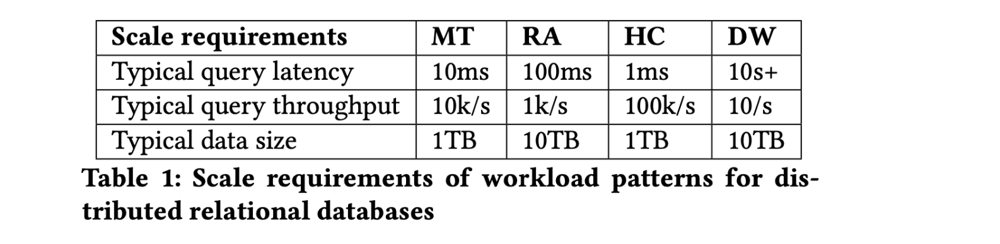
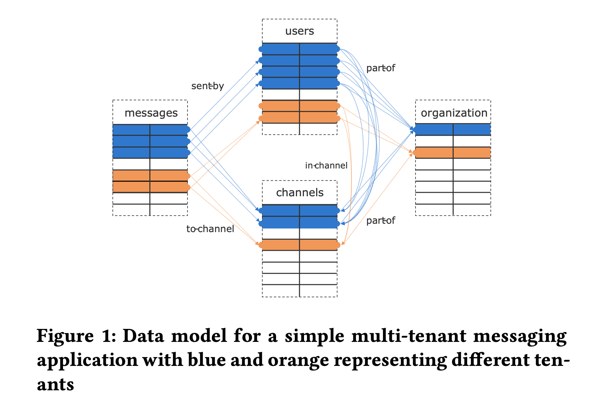
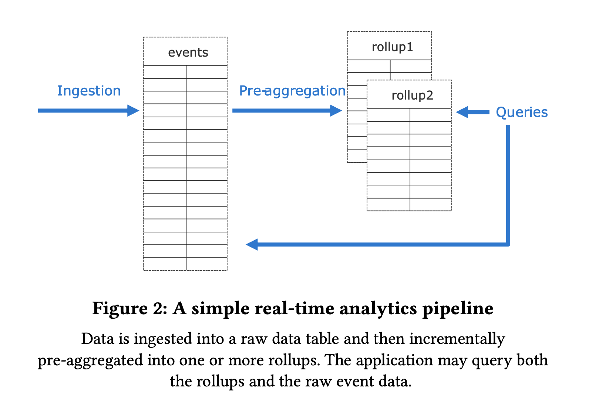
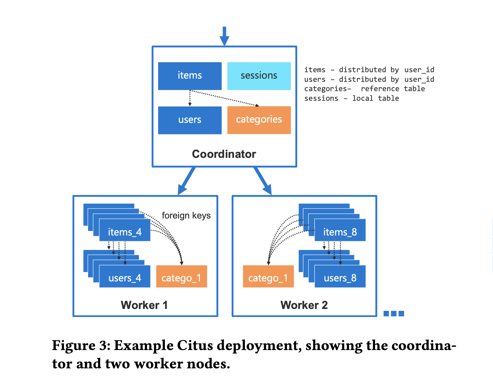

<!DOCTYPE HTML>
<html lang="en" class="sidebar-visible no-js light">
    <head>
        <!-- Book generated using mdBook -->
        <meta charset="UTF-8">
        <title>论文阅读笔记</title>
                <meta name="robots" content="noindex" />
                

        <!-- Custom HTML head -->
        

        <meta content="text/html; charset=utf-8" http-equiv="Content-Type">
        <meta name="description" content="">
        <meta name="viewport" content="width=device-width, initial-scale=1">
        <meta name="theme-color" content="#ffffff" />

                <link rel="icon" href="favicon.svg">
                        <link rel="shortcut icon" href="favicon.png">
                <link rel="stylesheet" href="css/variables.css">
        <link rel="stylesheet" href="css/general.css">
        <link rel="stylesheet" href="css/chrome.css">
                <link rel="stylesheet" href="css/print.css" media="print">
        
        <!-- Fonts -->
        <link rel="stylesheet" href="FontAwesome/css/font-awesome.css">
                <link rel="stylesheet" href="fonts/fonts.css">
        
        <!-- Highlight.js Stylesheets -->
        <link rel="stylesheet" href="highlight.css">
        <link rel="stylesheet" href="tomorrow-night.css">
        <link rel="stylesheet" href="ayu-highlight.css">

        <!-- Custom theme stylesheets -->
        
            </head>
    <body>
        <!-- Provide site root to javascript -->
        <script type="text/javascript">
            var path_to_root = "";
            var default_theme = window.matchMedia("(prefers-color-scheme: dark)").matches ? "navy" : "light";
        </script>

        <!-- Work around some values being stored in localStorage wrapped in quotes -->
        <script type="text/javascript">
            try {
                var theme = localStorage.getItem('mdbook-theme');
                var sidebar = localStorage.getItem('mdbook-sidebar');

                if (theme.startsWith('"') && theme.endsWith('"')) {
                    localStorage.setItem('mdbook-theme', theme.slice(1, theme.length - 1));
                }

                if (sidebar.startsWith('"') && sidebar.endsWith('"')) {
                    localStorage.setItem('mdbook-sidebar', sidebar.slice(1, sidebar.length - 1));
                }
            } catch (e) { }
        </script>

        <!-- Set the theme before any content is loaded, prevents flash -->
        <script type="text/javascript">
            var theme;
            try { theme = localStorage.getItem('mdbook-theme'); } catch(e) { }
            if (theme === null || theme === undefined) { theme = default_theme; }
            var html = document.querySelector('html');
            html.classList.remove('no-js')
            html.classList.remove('light')
            html.classList.add(theme);
            html.classList.add('js');
        </script>

        <!-- Hide / unhide sidebar before it is displayed -->
        <script type="text/javascript">
            var html = document.querySelector('html');
            var sidebar = 'hidden';
            if (document.body.clientWidth >= 1080) {
                try { sidebar = localStorage.getItem('mdbook-sidebar'); } catch(e) { }
                sidebar = sidebar || 'visible';
            }
            html.classList.remove('sidebar-visible');
            html.classList.add("sidebar-" + sidebar);
        </script>

        <nav id="sidebar" class="sidebar" aria-label="Table of contents">
            <div class="sidebar-scrollbox">
                <ol class="chapter"><li class="chapter-item expanded affix "><a href="index.html">Paper Notes</a></li><li class="chapter-item expanded "><a href="benchmarks/index.html"><strong aria-hidden="true">1.</strong> benchmarks</a></li><li><ol class="section"><li class="chapter-item expanded "><a href="benchmarks/ssb.html"><strong aria-hidden="true">1.1.</strong> ssb</a></li></ol></li><li class="chapter-item expanded "><a href="bigdata/index.html"><strong aria-hidden="true">2.</strong> bigdata</a></li><li><ol class="section"><li class="chapter-item expanded "><a href="bigdata/mapreduce.html"><strong aria-hidden="true">2.1.</strong> mapreduce</a></li><li class="chapter-item expanded "><a href="bigdata/nephele.html"><strong aria-hidden="true">2.2.</strong> nephele</a></li><li class="chapter-item expanded "><a href="bigdata/dataflow-model.html"><strong aria-hidden="true">2.3.</strong> dataflow model</a></li><li class="chapter-item expanded "><a href="bigdata/flink.html"><strong aria-hidden="true">2.4.</strong> flink</a></li><li class="chapter-item expanded "><a href="bigdata/flink-state-management.html"><strong aria-hidden="true">2.5.</strong> flink state management</a></li></ol></li><li class="chapter-item expanded "><a href="compiler/index.html"><strong aria-hidden="true">3.</strong> compiler</a></li><li class="chapter-item expanded "><a href="databases/index.html"><strong aria-hidden="true">4.</strong> databases</a></li><li><ol class="section"><li class="chapter-item expanded "><a href="databases/cloudnative/index.html"><strong aria-hidden="true">4.1.</strong> cloudnative</a></li><li><ol class="section"><li class="chapter-item expanded "><a href="databases/cloudnative/aurora.html"><strong aria-hidden="true">4.1.1.</strong> aurora</a></li><li class="chapter-item expanded "><a href="databases/cloudnative/taurus.html"><strong aria-hidden="true">4.1.2.</strong> taurus</a></li></ol></li><li class="chapter-item expanded "><a href="databases/column-stores-vs-row-stores.html"><strong aria-hidden="true">4.2.</strong> columnstores vs rowstores</a></li><li class="chapter-item expanded "><a href="databases/kv/index.html"><strong aria-hidden="true">4.3.</strong> kv</a></li><li><ol class="section"><li class="chapter-item expanded "><a href="databases/kv/optimizing-space-amplification-in-rocksdb.html"><strong aria-hidden="true">4.3.1.</strong> rocksdb cidr17</a></li><li class="chapter-item expanded "><a href="databases/kv/wisckey.html"><strong aria-hidden="true">4.3.2.</strong> wisckey</a></li></ol></li><li class="chapter-item expanded "><a href="databases/mmdb/index.html"><strong aria-hidden="true">4.4.</strong> mmdb</a></li><li><ol class="section"><li class="chapter-item expanded "><a href="databases/mmdb/overview.html"><strong aria-hidden="true">4.4.1.</strong> mmdb overview</a></li></ol></li><li class="chapter-item expanded "><a href="databases/oltp/index.html"><strong aria-hidden="true">4.5.</strong> oltp</a></li><li><ol class="section"><li class="chapter-item expanded "><a href="databases/oltp/oltp-through-the-looking-glass.html"><strong aria-hidden="true">4.5.1.</strong> through the looking glass</a></li><li class="chapter-item expanded "><a href="databases/oltp/staring-into-the-abyss.html"><strong aria-hidden="true">4.5.2.</strong> staring into the abyss</a></li></ol></li><li class="chapter-item expanded "><a href="databases/olap/index.html"><strong aria-hidden="true">4.6.</strong> olap</a></li><li><ol class="section"><li class="chapter-item expanded "><a href="databases/olap/lakehouse.html"><strong aria-hidden="true">4.6.1.</strong> lakehouse</a></li><li class="chapter-item expanded "><a href="databases/olap/delta-lake.html"><strong aria-hidden="true">4.6.2.</strong> delta lake</a></li><li class="chapter-item expanded "><a href="databases/olap/vertica.html"><strong aria-hidden="true">4.6.3.</strong> vertica</a></li><li class="chapter-item expanded "><a href="databases/olap/duckdb.html"><strong aria-hidden="true">4.6.4.</strong> duckdb</a></li></ol></li><li class="chapter-item expanded "><a href="databases/htap/index.html"><strong aria-hidden="true">4.7.</strong> htap</a></li><li><ol class="section"><li class="chapter-item expanded "><a href="databases/htap/greenplum-htap.html"><strong aria-hidden="true">4.7.1.</strong> greenplum</a></li></ol></li><li class="chapter-item expanded "><a href="databases/vectordb/index.html"><strong aria-hidden="true">4.8.</strong> vector db</a></li><li><ol class="section"><li class="chapter-item expanded "><a href="databases/vectordb/hnsw.html"><strong aria-hidden="true">4.8.1.</strong> hnsw</a></li><li class="chapter-item expanded "><a href="databases/vectordb/ivf-hnsw.html"><strong aria-hidden="true">4.8.2.</strong> ivf-hnsw</a></li><li class="chapter-item expanded "><a href="databases/vectordb/diskann.html"><strong aria-hidden="true">4.8.3.</strong> diskann</a></li><li class="chapter-item expanded "><a href="databases/vectordb/pq.html"><strong aria-hidden="true">4.8.4.</strong> product quantization</a></li></ol></li><li class="chapter-item expanded "><a href="databases/graphdb/index.html"><strong aria-hidden="true">4.9.</strong> graph db</a></li><li><ol class="section"><li class="chapter-item expanded "><a href="databases/graphdb/kuzu.html"><strong aria-hidden="true">4.9.1.</strong> kuzu</a></li></ol></li><li class="chapter-item expanded "><a href="databases/citus.html"><strong aria-hidden="true">4.10.</strong> citus</a></li><li class="chapter-item expanded "><a href="databases/optimizer/index.html"><strong aria-hidden="true">4.11.</strong> optimizer</a></li><li class="chapter-item expanded "><a href="databases/executor/index.html"><strong aria-hidden="true">4.12.</strong> executor</a></li><li><ol class="section"><li class="chapter-item expanded "><a href="databases/executor/volcano.html"><strong aria-hidden="true">4.12.1.</strong> volcano</a></li></ol></li><li class="chapter-item expanded "><a href="databases/concurrencycontrol/index.html"><strong aria-hidden="true">4.13.</strong> concurrency control</a></li><li><ol class="section"><li class="chapter-item expanded "><a href="databases/concurrencycontrol/empirical-evaluation-of-mvcc.html"><strong aria-hidden="true">4.13.1.</strong> evaluation of in-memory mvcc</a></li></ol></li><li class="chapter-item expanded "><a href="databases/cdc/index.html"><strong aria-hidden="true">4.14.</strong> cdc</a></li><li><ol class="section"><li class="chapter-item expanded "><a href="databases/cdc/dblog.html"><strong aria-hidden="true">4.14.1.</strong> dblog</a></li></ol></li><li class="chapter-item expanded "><a href="databases/rum.html"><strong aria-hidden="true">4.15.</strong> rum conjecture</a></li></ol></li><li class="chapter-item expanded "><a href="datalayout/index.html"><strong aria-hidden="true">5.</strong> datalayout</a></li><li><ol class="section"><li class="chapter-item expanded "><a href="datalayout/c-store.html"><strong aria-hidden="true">5.1.</strong> cstore</a></li><li class="chapter-item expanded "><a href="datalayout/c-store-compression.html"><strong aria-hidden="true">5.2.</strong> cstore compression</a></li><li class="chapter-item expanded "><a href="datalayout/dremel.html"><strong aria-hidden="true">5.3.</strong> dremel</a></li><li class="chapter-item expanded "><a href="datalayout/rcfile.html"><strong aria-hidden="true">5.4.</strong> rcfile</a></li><li class="chapter-item expanded "><a href="datalayout/orc.html"><strong aria-hidden="true">5.5.</strong> orc</a></li><li class="chapter-item expanded "><a href="datalayout/table-placement-methods.html"><strong aria-hidden="true">5.6.</strong> table placement methods</a></li></ol></li><li class="chapter-item expanded "><a href="datastructure/index.html"><strong aria-hidden="true">6.</strong> data structures</a></li><li><ol class="section"><li class="chapter-item expanded "><a href="datastructure/btreefamily/index.html"><strong aria-hidden="true">6.1.</strong> btree family</a></li><li><ol class="section"><li class="chapter-item expanded "><a href="datastructure/btreefamily/bw-tree.html"><strong aria-hidden="true">6.1.1.</strong> bw-tree</a></li></ol></li><li class="chapter-item expanded "><a href="datastructure/hash/index.html"><strong aria-hidden="true">6.2.</strong> hash table</a></li><li><ol class="section"><li class="chapter-item expanded "><a href="datastructure/hash/linear-hashing.html"><strong aria-hidden="true">6.2.1.</strong> linear hashing</a></li></ol></li><li class="chapter-item expanded "><a href="datastructure/triefamily/index.html"><strong aria-hidden="true">6.3.</strong> trie family</a></li><li><ol class="section"><li class="chapter-item expanded "><a href="datastructure/triefamily/art.html"><strong aria-hidden="true">6.3.1.</strong> art</a></li><li class="chapter-item expanded "><a href="datastructure/triefamily/hot.html"><strong aria-hidden="true">6.3.2.</strong> hot</a></li></ol></li><li class="chapter-item expanded "><a href="datastructure/bitmap/index.html"><strong aria-hidden="true">6.4.</strong> bitmaps</a></li><li><ol class="section"><li class="chapter-item expanded "><a href="datastructure/bitmap/roaring.html"><strong aria-hidden="true">6.4.1.</strong> roaring bitmaps</a></li></ol></li><li class="chapter-item expanded "><a href="datastructure/skiplist.html"><strong aria-hidden="true">6.5.</strong> skip list</a></li><li class="chapter-item expanded "><a href="datastructure/bloom-filter.html"><strong aria-hidden="true">6.6.</strong> bloom filter</a></li></ol></li><li class="chapter-item expanded "><a href="distributedsystem/index.html"><strong aria-hidden="true">7.</strong> distributed system</a></li><li><ol class="section"><li class="chapter-item expanded "><a href="distributedsystem/consensus/index.html"><strong aria-hidden="true">7.1.</strong> consensus</a></li><li><ol class="section"><li class="chapter-item expanded "><a href="distributedsystem/consensus/flp.html"><strong aria-hidden="true">7.1.1.</strong> flp</a></li><li class="chapter-item expanded "><a href="distributedsystem/consensus/paxos-made-simple.html"><strong aria-hidden="true">7.1.2.</strong> paxos made simple</a></li><li class="chapter-item expanded "><a href="distributedsystem/consensus/paxos-made-live.html"><strong aria-hidden="true">7.1.3.</strong> paxos made live</a></li><li class="chapter-item expanded "><a href="distributedsystem/consensus/vr.html"><strong aria-hidden="true">7.1.4.</strong> viewstamped replication</a></li><li class="chapter-item expanded "><a href="distributedsystem/consensus/zab.html"><strong aria-hidden="true">7.1.5.</strong> zab</a></li><li class="chapter-item expanded "><a href="distributedsystem/consensus/paxos-vs-vr-vs-zab.html"><strong aria-hidden="true">7.1.6.</strong> paxos vs. vr vs. zab</a></li><li class="chapter-item expanded "><a href="distributedsystem/consensus/raft.html"><strong aria-hidden="true">7.1.7.</strong> raft</a></li><li class="chapter-item expanded "><a href="distributedsystem/consensus/paxos-vs-raft.html"><strong aria-hidden="true">7.1.8.</strong> paxos vs raft</a></li></ol></li><li class="chapter-item expanded "><a href="distributedsystem/scheduler/index.html"><strong aria-hidden="true">7.2.</strong> scheduler</a></li><li><ol class="section"><li class="chapter-item expanded "><a href="distributedsystem/scheduler/borg.html"><strong aria-hidden="true">7.2.1.</strong> borg</a></li></ol></li><li class="chapter-item expanded "><a href="distributedsystem/primary-backup.html"><strong aria-hidden="true">7.3.</strong> primary backup</a></li><li class="chapter-item expanded "><a href="distributedsystem/chain-replication.html"><strong aria-hidden="true">7.4.</strong> chain replication</a></li><li class="chapter-item expanded "><a href="distributedsystem/bolosky.html"><strong aria-hidden="true">7.5.</strong> bolosky</a></li><li class="chapter-item expanded "><a href="distributedsystem/holygrail.html"><strong aria-hidden="true">7.6.</strong> holy grail</a></li><li class="chapter-item expanded "><a href="distributedsystem/chandy.html"><strong aria-hidden="true">7.7.</strong> chandy lamport</a></li><li class="chapter-item expanded "><a href="distributedsystem/abs.html"><strong aria-hidden="true">7.8.</strong> asynchronous barrier snapshotting</a></li><li class="chapter-item expanded "><a href="distributedsystem/zookeeper.html"><strong aria-hidden="true">7.9.</strong> zookeeper</a></li></ol></li><li class="chapter-item expanded "><a href="fs/index.html"><strong aria-hidden="true">8.</strong> filesystem</a></li><li><ol class="section"><li class="chapter-item expanded "><a href="fs/gfs.html"><strong aria-hidden="true">8.1.</strong> gfs</a></li><li class="chapter-item expanded "><a href="fs/polarfs.html"><strong aria-hidden="true">8.2.</strong> polarfs</a></li></ol></li><li class="chapter-item expanded "><a href="llm/index.html"><strong aria-hidden="true">9.</strong> llm</a></li><li class="chapter-item expanded "><a href="storage/index.html"><strong aria-hidden="true">10.</strong> storage</a></li><li><ol class="section"><li class="chapter-item expanded "><a href="storage/kv/index.html"><strong aria-hidden="true">10.1.</strong> kv store</a></li><li><ol class="section"><li class="chapter-item expanded "><a href="storage/kv/dynamo.html"><strong aria-hidden="true">10.1.1.</strong> dynamo</a></li></ol></li><li class="chapter-item expanded "><a href="storage/kudu.html"><strong aria-hidden="true">10.2.</strong> kudu</a></li><li class="chapter-item expanded "><a href="storage/bluestore.html"><strong aria-hidden="true">10.3.</strong> bluestore</a></li></ol></li></ol>            </div>
            <div id="sidebar-resize-handle" class="sidebar-resize-handle"></div>
        </nav>

        <div id="page-wrapper" class="page-wrapper">

            <div class="page">
                
                <div id="menu-bar-hover-placeholder"></div>
                <div id="menu-bar" class="menu-bar sticky bordered">
                    <div class="left-buttons">
                        <button id="sidebar-toggle" class="icon-button" type="button" title="Toggle Table of Contents" aria-label="Toggle Table of Contents" aria-controls="sidebar">
                            <i class="fa fa-bars"></i>
                        </button>
                        <button id="theme-toggle" class="icon-button" type="button" title="Change theme" aria-label="Change theme" aria-haspopup="true" aria-expanded="false" aria-controls="theme-list">
                            <i class="fa fa-paint-brush"></i>
                        </button>
                        <ul id="theme-list" class="theme-popup" aria-label="Themes" role="menu">
                            <li role="none"><button role="menuitem" class="theme" id="light">Light (default)</button></li>
                            <li role="none"><button role="menuitem" class="theme" id="rust">Rust</button></li>
                            <li role="none"><button role="menuitem" class="theme" id="coal">Coal</button></li>
                            <li role="none"><button role="menuitem" class="theme" id="navy">Navy</button></li>
                            <li role="none"><button role="menuitem" class="theme" id="ayu">Ayu</button></li>
                        </ul>
                                                <button id="search-toggle" class="icon-button" type="button" title="Search. (Shortkey: s)" aria-label="Toggle Searchbar" aria-expanded="false" aria-keyshortcuts="S" aria-controls="searchbar">
                            <i class="fa fa-search"></i>
                        </button>
                                            </div>

                    <h1 class="menu-title">论文阅读笔记</h1>

                    <div class="right-buttons">
                                                <a href="print.html" title="Print this book" aria-label="Print this book">
                            <i id="print-button" class="fa fa-print"></i>
                        </a>
                                                                        <a href="https://github.com/zhjwpku/paper-notes" title="Git repository" aria-label="Git repository">
                            <i id="git-repository-button" class="fa fa-github"></i>
                        </a>
                                                
                    </div>
                </div>

                                <div id="search-wrapper" class="hidden">
                    <form id="searchbar-outer" class="searchbar-outer">
                        <input type="search" id="searchbar" name="searchbar" placeholder="Search this book ..." aria-controls="searchresults-outer" aria-describedby="searchresults-header">
                    </form>
                    <div id="searchresults-outer" class="searchresults-outer hidden">
                        <div id="searchresults-header" class="searchresults-header"></div>
                        <ul id="searchresults">
                        </ul>
                    </div>
                </div>
                
                <!-- Apply ARIA attributes after the sidebar and the sidebar toggle button are added to the DOM -->
                <script type="text/javascript">
                    document.getElementById('sidebar-toggle').setAttribute('aria-expanded', sidebar === 'visible');
                    document.getElementById('sidebar').setAttribute('aria-hidden', sidebar !== 'visible');
                    Array.from(document.querySelectorAll('#sidebar a')).forEach(function(link) {
                        link.setAttribute('tabIndex', sidebar === 'visible' ? 0 : -1);
                    });
                </script>

                <div id="content" class="content">
                    <main>
                        <h2 id="paper-notes"><a class="header" href="#paper-notes">Paper Notes</a></h2>
<p>本仓库记录我读过的 paper 以及对每篇 paper 的理解、收货和疑问。</p>
<p>如何读论文我参考了 <a href="./assets/pdfs/how-to-read-a-paper.pdf">How to Read a Paper</a> 的 three-pass method:</p>
<ol>
<li>第一遍快速浏览论文（5-10 分钟）
<ul>
<li>仔细阅读题目、摘要和简介</li>
<li>阅读每个 section 及 sub-section 的题目，忽略其它内容</li>
<li>如果有数学公式则快速扫一眼以便了解其理论基础</li>
<li>阅读总结部分</li>
<li>简单浏览引用部分，看哪些是以前读过的</li>
</ul>
</li>
<li>第二遍仔细阅读论文但是忽略细节，比如证明部分。在阅读的过程中记录下不懂的术语以及想要问作者的问题（对于有经验的读者需要 1 小时）
<ul>
<li>仔细阅读论文中的插图、图表或其它插画，尤其注意那些横纵坐标的含义</li>
<li>标记下自己没有阅读过的相关引用</li>
</ul>
</li>
<li>为了完全理解一篇论文，往往需要阅读第三遍。第三遍则需要读者从作者的角度出发，试着在脑子里重新实现一遍论文的工作（初学者需要多个小时，对于有经验的读者也需要1-2个小时）</li>
</ol>
<p>论文方向: CS/Database/Distributed System</p>
<p>论文来源:</p>
<ul>
<li><a href="http://www.redbook.io/">Readings in Database Systems, 5th Edition</a></li>
<li><a href="https://blog.acolyer.org/">The Morning Paper</a></li>
<li><a href="https://github.com/ept/ddia-references">Literature references for “Designing Data-Intensive Applications”</a></li>
<li>一些 <a href="https://zhjwpku.com/2018/09/16/awesome-cs-courses.html">CS 课程</a> 中的推荐阅读</li>
<li><a href="https://github.com/papers-we-love/papers-we-love">papers-we-love</a></li>
<li><a href="https://www.postgresql.org/docs/current/biblio.html">PostgreSQL Documentation Bibliography</a></li>
</ul>
<div style="break-before: page; page-break-before: always;"></div><h2 id="benchmarks"><a class="header" href="#benchmarks">benchmarks</a></h2>
<ul>
<li><strong><a href="benchmarks/ssb.html">Star Schema Benchmark</a></strong></li>
</ul>
<div style="break-before: page; page-break-before: always;"></div><h3 id="a-hrefbenchmarksassetspdfsstarschemabpdfstar-schema-benchmarka"><a class="header" href="#a-hrefbenchmarksassetspdfsstarschemabpdfstar-schema-benchmarka"><a href="benchmarks/../assets/pdfs/StarSchemaB.pdf">Star Schema Benchmark</a></a></h3>
<blockquote>
<p>by P O'Neil 2009</p>
<p>https://www.cs.umb.edu/~poneil/StarSchemaB.PDF</p>
</blockquote>
<p>星型模型在数仓中使用广泛，在该模型中，多个维表（dimension tables）围绕一个事实表（fact table），因此可以减少不必要的外键及 join，查询复杂度较低，但却由于不严格遵循范式，存储在数据冗余。</p>
<p>Star Schema Benchmark 将 TPC-H 的雪花模型改造成了星型模式，以测试数仓在决策支持场景下性能表现。</p>
<blockquote>
<p>We depart from the TPC-H query format for a number of reasons, most commonly to make
an attempt to provide the <code>Functional Coverage</code> and <code>Selectivity Coverage</code> features.</p>
</blockquote>
<p>对于查询语句的选择，SSB 主要考虑:</p>
<ul>
<li>Functional Coverage: 尽可能选择星型模式中常见的重要查询以满足用户的预期</li>
<li>Selectivity Coverage: 通过对维表条件的选择可以决定事实表检索的数量（total Filter Factor）</li>
</ul>
<h4 id="ssb-的表结构"><a class="header" href="#ssb-的表结构">SSB 的表结构</a></h4>
<p></p>
<p>事实表将 TPC-H 中的 <code>LINEITEM</code> 和 <code>ORDERS</code> 进行了合并，更加符合数仓的标准，增加了冗余，同时减少了在查询过程中不必要的 join 计算。</p>
<p>对比 TPC-H 的表结构为:</p>
<p></p>
<h4 id="ssb-queries"><a class="header" href="#ssb-queries">SSB Queries</a></h4>
<p>Q1: 选择一个维表（date）作为查询过滤条件，计算给定<code>日期范围</code>内，折扣和销售数量在某个范围内的订单的<code>销售收入</code>之和。</p>
<pre><code class="language-sql">select sum(lo_extendedprice * lo_discount) as revenue
 from lineorder, date
 where lo_orderdate = d_datekey
  and [DATE_FILTER]
  and [LO_DISCOUNT_FILTER]
  and [LO_QUANTITY_FILTER]; 
</code></pre>
<p>Q2: 对两个维表（part、supplier）进行查询过滤，计算每个品牌每年带来的收入之和。</p>
<pre><code class="language-sql">select sum(lo_revenue), d_year, p_brand1
 from lineorder, date, part, supplier
 where lo_orderdate = d_datekey
  and lo_partkey = p_partkey
  and lo_suppkey = s_suppkey
  and [PART_FILTER]
  and [S_REGION_FILTER]
 group by d_year, p_brand1
 order by d_year, p_brand1; 
</code></pre>
<p>Q3: 对三个维表（customer、supplier 和 date）进行查询过滤，根据客户所在国家、供应商所在国家及日期限制计算收入之和。</p>
<pre><code class="language-sql">select c_nation, s_nation, d_year, sum(lo_revenue) as revenue
 from customer, lineorder, supplier, date
 where lo_custkey = c_custkey
  and lo_suppkey = s_suppkey
  and lo_orderdate = d_datekey
  and [CUSTOMOR_FILTER]
  and [SUPPLIER_FILTER]
  and [DATE_FILTER]
 group by c_nation, s_nation, d_year
 order by d_year asc, revenue desc;
</code></pre>
<p>Q4: 对四个维表（全部）进行查询过滤:</p>
<p>Q4.1</p>
<pre><code class="language-sql">select d_year, c_nation, sum(lo_revenue - lo_supplycost) as profit
 from date, customer, supplier, part, lineorder
 where lo_custkey = c_custkey
  and lo_suppkey = s_suppkey
  and lo_partkey = p_partkey
  and lo_orderdate = d_datekey
  and c_region = 'AMERICA'
  and s_region = 'AMERICA'
  and (p_mfgr = 'MFGR#1' or p_mfgr = 'MFGR#2')
 group by d_year, c_nation
 order by d_year, c_nation;
</code></pre>
<p>Q4.2</p>
<pre><code class="language-sql">select d_year, s_nation, p_category, sum(lo_revenue - lo_supplycost) as profit
 from date, customer, supplier, part, lineorder
 where lo_custkey = c_custkey
  and lo_suppkey = s_suppkey
  and lo_partkey = p_partkey
  and lo_orderdate = d_datekey
  and c_region = 'AMERICA'
  and s_region = 'AMERICA'
  and (d_year = 1997 or d_year = 1998)
  and (p_mfgr = 'MFGR#1' or p_mfgr = 'MFGR#2')
 group by d_year, s_nation, p_category
 order by d_year, s_nation, p_category;
</code></pre>
<p>Q4.3</p>
<pre><code class="language-sql">select d_year, s_city, p_brand1, sum(lo_revenue - lo_supplycost) as profit
 from date, customer, supplier, part, lineorder
 where lo_custkey = c_custkey
  and lo_suppkey = s_suppkey
  and lo_partkey = p_partkey
  and lo_orderdate = d_datekey
  and c_region = 'AMERICA'
  and s_nation = 'UNITED STATES'
  and (d_year = 1997 or d_year = 1998)
  and p_category = 'MFGR#14'
 group by d_year, s_city, p_brand1
 order by d_year, s_city, p_brand1;
</code></pre>
<p>四类查询共 13 个查询对事实表的 Filter Factor 如下表所示：</p>
<p></p>
<h4 id="references"><a class="header" href="#references">References:</a></h4>
<p>[1] <a href="https://github.com/eyalroz/ssb-dbgen">Star Schema Benchmark data set generator (ssb-dbgen)</a><br>
[2] <a href="https://www.geeksforgeeks.org/difference-between-star-schema-and-snowflake-schema/">Difference between Star Schema and Snowflake Schema</a></p>
<div style="break-before: page; page-break-before: always;"></div><h2 id="bigdata"><a class="header" href="#bigdata">bigdata</a></h2>
<ul>
<li><strong><a href="bigdata/mapreduce.html">MapReduce: Simplified Data Processing on Large Clusters</a></strong></li>
<li><strong><a href="bigdata/nephele.html">Nephele: Efficient Parallel Data Processing in the Cloud</a></strong></li>
<li><strong><a href="bigdata/dataflow-model.html">The Dataflow Model</a></strong></li>
<li><strong><a href="bigdata/flink.html">Apache Flink: Stream and Batch Processing in a Single Engine</a></strong></li>
<li><strong><a href="bigdata/flink-state-management.html">State Management in Apache Flink</a></strong></li>
</ul>
<div style="break-before: page; page-break-before: always;"></div><h3 id="a-hrefbigdataassetspdfsmapreduce-osdi04pdfmapreduce-simplified-data-processing-on-large-clustersa"><a class="header" href="#a-hrefbigdataassetspdfsmapreduce-osdi04pdfmapreduce-simplified-data-processing-on-large-clustersa"><a href="bigdata/../assets/pdfs/mapreduce-osdi04.pdf">MapReduce: Simplified Data Processing on Large Clusters</a></a></h3>
<blockquote>
<p>OSDI'04: Sixth Symposium on Operating System Design and Implementation, San Francisco, CA (2004), pp. 137-150</p>
<p>https://research.google/pubs/pub62/</p>
</blockquote>
<p>在处理 <code>Distributed Grep</code>，<code>Inverted Index</code>、<code>Distributed Sort</code> 等问题时，虽然数据本身需要执行的转换非常简单，但在高度分布式、可扩展和容错的环境中执行这些任务却又不那么简单，MapReduce 通过隐藏所有分布式系统的复杂性，为用户提供了一个分布式计算框架，用户只需提供用于将 <code>key/value pair</code> 处理生成一组 <code>intermedia key/value pairs</code> 的 <code>map</code> 函数，和一个将同一个键对应的所有 <code>intermedia key/value pairs</code> 做合并操作的 <code>reduce</code> 函数，就可以将程序并行地运行在计算机集群上。</p>
<p>MapReduce 的执行过程如下:</p>
<p></p>
<ol>
<li>
<p>The MapReduce library in the user program first
splits the input files into M pieces of typically 16
megabytes to 64 megabytes (MB) per piece (controllable
by the user via an optional parameter). It
then starts up many copies of the program on a cluster
of machines.</p>
</li>
<li>
<p>One of the copies of the program is special —— the
master. The rest are workers that are assigned work
by the master. There are <code>M</code> map tasks and R reduce
tasks to assign. The master picks idle workers and
assigns each one a map task or a reduce task.</p>
</li>
<li>
<p>A worker who is assigned a map task reads the
contents of the corresponding input split. It parses
key/value pairs out of the input data and passes each
pair to the user-defined <code>Map</code> function. The intermediate
key/value pairs produced by the <code>Map</code> function
are buffered in memory.</p>
</li>
<li>
<p>Periodically, the buffered pairs are written to local
disk, partitioned into <code>R</code> regions by the partitioning
function. The locations of these buffered pairs on
the local disk are passed back to the master, who
is responsible for forwarding these locations to the
reduce workers.</p>
</li>
<li>
<p>When a reduce worker is notified by the master
about these locations, it uses remote procedure calls
to read the buffered data from the local disks of the
map workers. When a reduce worker has read all intermediate
data, it sorts it by the intermediate keys
so that all occurrences of the same key are grouped
together. The sorting is needed because typically
many different keys map to the same reduce task. If
the amount of intermediate data is too large to fit in
memory, an external sort is used.</p>
</li>
<li>
<p>The reduce worker iterates over the sorted intermediate
data and for each unique intermediate key encountered,
it passes the key and the corresponding
set of intermediate values to the user's Reduce function.
The output of the Reduce function is appended
to a final output file for this reduce partition.</p>
</li>
<li>
<p>When all map tasks and reduce tasks have been
completed, the master wakes up the user program.
At this point, the MapReduce call in the user program
returns back to the user code.</p>
</li>
</ol>
<p>一个 MapReduce 任务可以分为三个阶段:</p>
<ul>
<li><strong>map phase</strong>: 在 map worker 上，处理后的中间数据根据默认或用户提供的 partitioning function 将数据保存为 <code>R</code> 个本地文件，并将文件位置上报给 master</li>
<li><strong>shuffle phase</strong>: 在 reduce worker 上，根据从 master 上获取的文件位置，从各个 map worker 上读取所需的文件</li>
<li><strong>reduce phase</strong>: 在 reduce worker 上将读取文件中 intermedia key/value pairs 进行处理的过程</li>
</ul>
<h4 id="fault-tolerance"><a class="header" href="#fault-tolerance">Fault Tolerance</a></h4>
<p>当 master 失败时，整个任务重做；当 map worker 失败时，即使它已经完成，也需要重做，因为中间数据文件是写在本地的；当 reduce worker 失败时，如果任务未完成，需要成重新调度其他节点完成对应的 reduce 任务，如果任务已经完成，则不需要重做，因为 reduce 的结果保存在 GFS。</p>
<h4 id="优化"><a class="header" href="#优化">优化</a></h4>
<ul>
<li>Locality: 由于 input file 保存在 GFS 上，MapReduce 可以根据文件存储的位置，将 map worker 调度到数据分片所在的节点上以减少网络开销</li>
<li>Combiner: 当 reduce 函数满足交换律和结合律特性时，可以将 reduce 的工作在 map 阶段提前执行</li>
<li>Backup Tasks: 将一定比例的长尾任务重新调度，可以减少任务的整体执行时间</li>
</ul>
<p>Apache Hadoop 是 MapReduce 的开源实现，2014 年 Google 提出了 MapReduce 的替代模型 Cloud Dataflow，该模型支持流批一体，具有更好的性能及扩展性，对标的开源产品为 Apache Flink。</p>
<div style="break-before: page; page-break-before: always;"></div><h3 id="a-hrefbigdataassetspdfsnephele_09pdfnephele-efficient-parallel-data-processing-in-the-clouda"><a class="header" href="#a-hrefbigdataassetspdfsnephele_09pdfnephele-efficient-parallel-data-processing-in-the-clouda"><a href="bigdata/../assets/pdfs/Nephele_09.pdf">Nephele: Efficient Parallel Data Processing in the Cloud</a></a></h3>
<blockquote>
<p>Proceedings of the 2nd Workshop on Many-Task Computing on Grids and Supercomputers, November 2009</p>
<p>https://dl.acm.org/doi/10.1145/1646468.1646476</p>
</blockquote>
<p>在云的时代，对于一个并发数据处理框架的调度器来说，要回答的问题从 <code>Given a set of compute resources, how to distribute the particular tasks of a job among them?</code> 转变为了 <code>Given a job, what compute resources match the tasks the job consists of best?</code></p>
<p>这种新的范式对调度器提出了三个要求：</p>
<ol>
<li>必须了解 job 执行所在的云环境，如各种 VM 的类型及其定价</li>
<li>必须能够描述一个 job 的各个 task 之间的依赖关系，进而判断何时一个 VM 不再需要可以提前释放</li>
<li>必须能够决定一个 task 应该在哪种类型的 VM 上执行</li>
</ol>
<p>这种灵活性同时带来了一些挑战，其中最主要的问题在于网络拓扑，数据处理框架很难知道网络的层级，比如两个节点之间的数据传输经过了几个交换机，对于调度器来说，拓扑感知的调度非常困难。即使知道了底层的网络层级，由于 VM 的迁移特性，网络拓扑可能会随时变动。解决这种问题的唯一方法是将需要大量数据传输的 tasks 调度在一个更强的 VM 上以保证 Data locality。</p>
<h3 id="nephele"><a class="header" href="#nephele">Nephele</a></h3>
<p>基于云计算带来的机遇和挑战，论文提出了 Nephele，一种基于云环境的全新数据处理框架。其架构遵循 master-worker 模式:</p>

<p>在一个 job 提交之前，用户需要启动一个实例运行 <em>Job Manager(JM)</em>，它负责接收用户提交的 Job 及调度，它能够通过云提供的服务接口动态申请及释放 VM。</p>
<p>Nephele 框架的另一种角色为 <em>Task Manager(TM)</em>，它从 JM 接收任务，执行之后将完成状态或可能的错误信息汇报给 JM。</p>
<p>一个任务在 Nephele 中通过 DAG 来描述，原因在于:</p>
<ol>
<li>DAG 允许 task 有多个入度和出度，可以极大简化传统数据结合算子，如 join</li>
<li>DAG 的边表示了执行中的 Job 的数据传输路径，Nephele 可以根据这些信息判断哪些实例可以关闭释放</li>
</ol>
<p>一个 Nephele Job 的定义由三个手动步骤构成:</p>
<ol>
<li>the user must write the program code for each task of his processing job or select it from an external library</li>
<li>the task program must be assigned to a vertex</li>
<li>the vertices must be connected by edges to define the communication paths of the job</li>
</ol>
<p>用户通过 Job Graph 在一个抽象的层级描述任务和任务之间的关系，将任务并行度及任务在实例上的调度留给 Nephele。用户还可以在任务描述中增加注解给 Job Graph 提供更多信息，如:</p>
<ul>
<li>Number of subtasks</li>
<li>NUmber of subtasks per instance</li>
<li>Sharing instances between tasks</li>
<li>Channel types</li>
<li>Instance type</li>
</ul>

<p>在接收到用户的 Job Graph 后，JM 将其转换为 <em>Execution Graph</em>，这是 Nephele 调度和监控的主要数据结构。相对 Job Graph 只在抽象层次描述任务，Exectution Graph 多了物理层次任务调度到具体实例的信息及 tasks 之间的通信通道:</p>

<p>其中几个重要的概念:</p>
<ul>
<li><strong>Execution Stage</strong> 一个 Exection Stage 执行之前，必须保证其前序 Execution Stage 都已执行完毕，它的另外三个特性使得它可以类比为 checkpoint
<ul>
<li>when the processing of a stage begins, all instances required within the stage are allocated</li>
<li>all subtasks included in this stage are set up and ready to receive records</li>
<li>before the processing of a new stage, all intermediate results of its preceding stages are stored in a persistent manner</li>
</ul>
</li>
<li><strong>Group Vertex</strong> 对应一个 Job 的一个 task，如果有并发，则一个 Group Vertex 可以有多个 Execution Vertex</li>
<li><strong>Execution Instance</strong> 执行实例，多个 Group Vertex 可以调度在同一个 Exectuion Instance 进而提高 Data Locality</li>
<li><strong>Channels</strong> Nephele 要求所有的边都替换成 channel，包括如下几种:
<ul>
<li>Network channels - 要求通信子任务存在于同一个 Stage</li>
<li>In-Memory channels - 要求通信子任务存在于同一个 Stage</li>
<li>File channels - Nephele 只允许不同 Stage 的子任务使用这种方式</li>
</ul>
</li>
</ul>
<h3 id="读后感"><a class="header" href="#读后感">读后感</a></h3>
<p>Nephele 是 Flink 的前身，这种根据任务申请资源、按量付费的方式在云时代有着巨大的机会，这也是为何 Snowflake、PingCap 这样的厂商逐渐撅起的一个因素。</p>
<div style="break-before: page; page-break-before: always;"></div><h3 id="a-hrefbigdatapdfsassetspdfsthe_dataflow_modelpdfthe-dataflow-model-a-practical-approach-to-balancing-correctness-latency-and-cost-in-massivescale-unbounded-outoforder-data-processinga"><a class="header" href="#a-hrefbigdatapdfsassetspdfsthe_dataflow_modelpdfthe-dataflow-model-a-practical-approach-to-balancing-correctness-latency-and-cost-in-massivescale-unbounded-outoforder-data-processinga"><a href="bigdata/../pdfs/../../assets/pdfs/the_dataflow_model.pdf">The Dataflow Model: A Practical Approach to Balancing Correctness, Latency, and Cost in MassiveScale, Unbounded, OutofOrder Data Processing</a></a></h3>
<blockquote>
<p>Proceedings of the VLDB EndowmentVolume 8Issue 12August 2015 pp 1792–1803</p>
<p>https://doi.org/10.14778/2824032.2824076</p>
</blockquote>
<p><strong>The future of data processing is unbounded data</strong>，尽管 bounded data 依然有用武之地，它在语义上可以被归类为 ubounded data。<code>Dataflow Model</code> 就是这样一个提供无界数据和有界数据统一处理框架的模型。</p>
<p>论文介绍了 Windowing、Time Domains 相关的各种概念，附加了很多图例，Apache Flink 在一定程度上借鉴了该论文的理念。</p>
<p>阅读该论文是因为最近在学习 Flink，并总结了一些学习资源: <a href="https://zhjwpku.com/2021/11/01/awesome-flink.html">Awesome Flink Learning Resources</a>。</p>
<div style="break-before: page; page-break-before: always;"></div><h3 id="a-hrefbigdataassetspdfsflinkpdfapache-flink-stream-and-batch-processing-in-a-single-enginea"><a class="header" href="#a-hrefbigdataassetspdfsflinkpdfapache-flink-stream-and-batch-processing-in-a-single-enginea"><a href="bigdata/../assets/pdfs/flink.pdf">Apache Flink: Stream and Batch Processing in a Single Engine</a></a></h3>
<blockquote>
<p>Bulletin of the IEEE Computer Society Technical Committee on Data Engineering, 2015</p>
<p>http://asterios.katsifodimos.com/assets/publications/flink-deb.pdf</p>
</blockquote>
<p>Apache Flink 是一个用于处理流和批处理数据的开源系统。本论文介绍了 Flink 的架构及如何在一个引擎上实现流和批的统一。</p>
<p>越来越多的应用需要大数据处理具有实时性，『Lambda Architecture』 通过结合流处理和批处理在一定程度上满足了这样的需求，但需要把业务逻辑实现两次，增加了复杂性且浪费资源。</p>
<p>Flink 的发展受 Google 的 Dataflow model 和 MillWheel 的影响。其 software stack 如下图所示:</p>
<p></p>
<p><code>Runtime</code> 作为 Flink 的核心，负责执行 <code>dataflow</code> 任务，其上的 DataSet API 提供批处理接口，DataStream API 提供流处理接口。批处理是一种有界的流处理，二者都会生成在 <code>Runtime</code> 上运行的 <code>dataflow</code>。</p>
<p></p>
<p>通过在数据流中插入 <code>checkpoint barries</code>，使用 <a href="bigdata/../distributedsystem/abs.html">ABS</a> 算法实现 <code>exactly once</code> 语义。</p>
<p>通过在数据流中插入 <code>watermarks</code> 来实现 <code>window function</code>。</p>
<p>提供三种时间处理方式:</p>
<ul>
<li>event-time</li>
<li>process-time</li>
<li>ingest-time</li>
</ul>
<div style="break-before: page; page-break-before: always;"></div><h3 id="a-hrefbigdataassetspdfsstate-management-in-apache-flinkpdfstate-management-in-apache-flinka"><a class="header" href="#a-hrefbigdataassetspdfsstate-management-in-apache-flinkpdfstate-management-in-apache-flinka"><a href="bigdata/../assets/pdfs/state-management-in-apache-flink.pdf">State Management in Apache Flink</a></a></h3>
<blockquote>
<p>PVLDB, Aug 2017</p>
<p>https://dl.acm.org/doi/10.14778/3137765.3137777</p>
</blockquote>
<p>流处理除了需要具备可扩展和低延迟的特性，一个日益增长的需求是强一致性保证和对集群配置变更、patch、故障的适应性。Flink 提供的轻量分布式快照机制保证应用状态的一致性，且不影响应用程序的持续执行。</p>
<p>Flink 状态管理的核心建立在分布式快照之上，分布式快照能够将分布式进程回滚到之前全局一致的执行状态，这种回滚是粗粒度的，可用于解决配置变更、容错和版本管理等问题。</p>
<blockquote>
<p>Distributed snapshotting protocols enable rollback recovery by producing a correct,
complete state replica of a distributed execution which can be used to restore the
system to an earlier point in time.</p>
</blockquote>
<p>Flink 的分布式快照在 <a href="bigdata/../distributedsystem/abs.html">abs</a> 中有所介绍，类似 <code>chandy-lamport</code> 算法，不过更适合弱连接的数据流图。</p>
<blockquote>
<p>Weakly connected graphs are inherently relevant to distributed dataflow processing systems.</p>
</blockquote>
<p></p>
<p>Flink 的算子可以维护一些状态，包括 <code>Keyed-State</code> 和 <code>Operator-State</code>，<code>Keyed-State</code> 通过 <code>Key-Groups</code> 分配到不同的 physical task，而 <code>Operator-State</code> 存在于每一个 physical task。</p>
<blockquote>
<p>Operator State (or non-keyed state) is state that is is bound to one parallel operator instance.</p>
</blockquote>
<p><code>Keyed-State</code> 在任务伸缩的时候能够重新分配，因而能适应 subtask 数目的变更，Flink 支持的 <code>Keyed-State</code> 包括:</p>
<ul>
<li>ValueState</li>
<li>ListState</li>
<li>ReduceState</li>
<li>MapState</li>
</ul>
<h4 id="pipelined-consistent-snapshots"><a class="header" href="#pipelined-consistent-snapshots">Pipelined Consistent Snapshots</a></h4>
<p>一个分布式流任务可以被定时生成的 <code>markers</code> 切分为不同的 <code>epoch</code>，如下图所示:</p>
<p></p>
<p>当一个 task 有多个 input 的时候，需要进行 <code>alignment</code>，如上图中的 <code>t3</code> 和 <code>t5</code>，快照的执行由 <code>JobManager</code> 协调，<code>JobManager</code> 保存快照的元数据信息，如快照的目录位置，<code>JobManager</code> 可以将关键的元数据信息保存到 <code>Zookeeper</code> 来保证高可用，元数据的上传可以是异步的，因为总能保证能够回滚到一个更先前的快照版本。</p>
<p>Flink 的快照算法还依赖以下三个假设:</p>
<ol>
<li>Input data streams are durably logged and indexed externally allowing dataflow sources to re-consume their input, upon recovery, from a specific logical time (offset) by restoring their state.</li>
<li>Directional data channels between tasks are reliable, respect FIFO delivery and can be blocked or unblocked.</li>
<li>Tasks can trigger a block or unblock operation on their input data channels and a send operation (records or control messages) on their output channels.</li>
</ol>
<p>有向无环图的 <code>alignment</code> 算法如下:</p>
<p></p>
<p>有环图则通过 <code>IterationHead</code> 和 <code>IterationTail</code> 隐式任务支持。任务可以设置忽略 <code>aligment</code> 来支持 <code>Relaxing Consistency</code>。</p>
<p>Flink 任务的配置修改遵循 <code>checkpoint-stop-modify-restore</code> 的模式。</p>
<p>算子支持 <code>Local state</code> 和 <code>External state</code>，状态可以被声明为 <code>Queryable State</code> 被外部访问。</p>
<p>Flink 任务依赖分布式快照算法，支持 <code>at least once</code> 的语义，如果要支持 <code>exactly once</code> 语义，则需要 sink 端为 <code>Idemponet Sinks</code> 或 <code>Transational Sinks</code>。</p>
<div style="break-before: page; page-break-before: always;"></div><h2 id="compiler"><a class="header" href="#compiler">Compiler</a></h2>
<ul>
<li>C Lattner, et al., CGO 2004 <a href="https://dl.acm.org/doi/pdf/10.5555/977395.977673">LLVM: A Compilation Framework for Lifelong Program Analysis &amp; Transformation</a></li>
<li>C Lattner, et al., CGO 2021 <a href="https://rcs.uwaterloo.ca/%7Eali/cs842-s23/papers/mlir.pdf">MLIR: Scaling Compiler Infrastructure for Domain Specific Computation</a>
<ul>
<li><a href="https://www.youtube.com/watch?v=C_MdJu70z2o">Presentation</a> 📹</li>
</ul>
</li>
</ul>
<div style="break-before: page; page-break-before: always;"></div><h2 id="databases"><a class="header" href="#databases">databases</a></h2>
<ul>
<li><strong><a href="databases/cloudnative/index.html">Cloud Native Database Systems</a></strong>
<ul>
<li><strong><a href="databases/cloudnative/aurora.html">Amazon Aurora: Design Considerations for High Throughput Cloud-Native Relational Databases</a></strong></li>
<li><strong><a href="databases/cloudnative/taurus.html">Taurus Database: How to be Fast, Available, and Frugal in the Cloud</a></strong></li>
</ul>
</li>
<li><strong><a href="databases/colum-stores-vs-row-stores.html">Column-stores vs. row-stores: how different are they really?</a></strong></li>
<li><strong><a href="databases/mmdb/index.html">Main Memory Database Systems</a></strong>
<ul>
<li><strong><a href="databases/mmdb/overview.html">Main Memory Database Systems: An Overview</a></strong></li>
</ul>
</li>
<li><strong><a href="databases/kv/index.html">KV databases</a></strong>
<ul>
<li><strong><a href="databases/kv/optimizing-space-amplification-in-rocksdb.html">Optimizing Space Amplification in RocksDB</a></strong></li>
<li><strong><a href="databases/kv/wisckey.html">WiscKey: Separating Keys from Values in SSD-Conscious Storage</a></strong></li>
</ul>
</li>
<li><strong><a href="databases/oltp/index.html">OLTP</a></strong>
<ul>
<li><strong><a href="databases/oltp/oltp-through-the-looking-glass.html">OLTP Through the Looking Glass, and What We Found There</a></strong></li>
<li><strong><a href="databases/oltp/staring-into-the-abyss.html">Staring into the Abyss: An Evaluation of Concurrency Control with One Thousand Cores</a></strong></li>
</ul>
</li>
<li><strong><a href="databases/olap/index.html">OLAP</a></strong>
<ul>
<li><strong><a href="databases/olap/lakehouse.html">Lakehouse: A New Generation of Open Platforms that Unify DataWarehousing and Advanced Analytics</a></strong></li>
<li><strong><a href="databases/olap/delta-lake.html">Delta Lake: HighPerformance ACID Table Storage over Cloud Object Stores</a></strong></li>
<li><strong><a href="databases/olap/vertica.html">The Vertica Analytic Database: C-Store 7 Years Later</a></strong></li>
<li><strong><a href="databases/olap/duckdb.html">Data Management for Data Science Towards Embedded Analytics</a></strong></li>
</ul>
</li>
<li><strong><a href="databases/htap/index.html">HTAP</a></strong>
<ul>
<li><strong><a href="databases/htap/greenplum-htap.html">Greenplum: A Hybrid Database for Transactional and Analytical Workloads</a></strong></li>
</ul>
</li>
<li><strong><a href="databases/vectordb/index.html">Vector DB</a></strong>
<ul>
<li><strong><a href="databases/vectordb/hnsw.html">Hierarchical NSW</a></strong></li>
<li><strong><a href="databases/vectordb/ivf-hnsw.html">IVF-HNSW</a></strong></li>
<li><strong><a href="databases/vectordb/diskann.html">DiskANN</a></strong></li>
<li><strong><a href="databases/vectordb/pq.html">Product Quantization</a></strong></li>
</ul>
</li>
<li><strong><a href="databases/graphdb/index.html">Graph Database</a></strong>
<ul>
<li><strong><a href="https://arxiv.org/pdf/2112.06217">Graph Pattern Matching in GQL and SQL/PGQ</a></strong></li>
<li><strong><a href="databases/graphdb/kuzu.html">KÙZU Graph Database Management System</a></strong></li>
</ul>
</li>
<li><strong><a href="databases/citus.html">Citus: Distributed PostgreSQL for Data-Intensive Applications</a></strong></li>
<li><strong><a href="databases/optimizer/index.html">Optimizer</a></strong></li>
<li><strong><a href="databases/executor/index.html">Executor</a></strong>
<ul>
<li><strong><a href="databases/executor/volcano.html">Volcano — An Extensible and Parallel Query Evaluation System</a></strong></li>
</ul>
</li>
<li><strong><a href="databases/concurrencycontrol/index.html">Concurrency Control</a></strong>
<ul>
<li><strong><a href="databases/concurrencycontrol/empirical-evaluation-of-mvcc.html">An Empirical Evaluation of In-Memory Multi-Version Concurrency Control</a></strong></li>
</ul>
</li>
<li><strong><a href="databases/cdc/index.html">Change Data Capture</a></strong>
<ul>
<li><strong><a href="databases/cdc/dblog.html">DBLog: AWatermark Based Change-Data-Capture Framework</a></strong></li>
</ul>
</li>
<li><strong><a href="databases/rum.html">Designing Access Methods: The RUM Conjecture</a></strong></li>
</ul>
<h4 id="optional-readings"><a class="header" href="#optional-readings">Optional readings</a></h4>
<ul>
<li>M. Stonebraker, et al., <a href="databases/./../assets/pdfs/whatgoesaround-stonebraker.pdf">What Goes Around Comes Around</a></li>
<li>A. Pavlo, et al., <a href="databases/../assets/pdfs/pavlo-newsql-sigmodrec2016.pdf">What’s Really New with NewSQL?</a></li>
<li>Yihe Huang, et al., <a href="databases/../assets/pdfs/opportunities_for_optimism_in_contented_main-memory_multicore_transactions.pdf">Opportunities for Optimism in Contended MainMemory Multicore Transactions</a></li>
</ul>
<div style="break-before: page; page-break-before: always;"></div><h2 id="cloud-native-database-systems"><a class="header" href="#cloud-native-database-systems">Cloud Native Database Systems</a></h2>
<ul>
<li><strong><a href="databases/cloudnative/aurora.html">Amazon Aurora: Design Considerations for High Throughput Cloud-Native Relational Databases</a></strong></li>
<li><strong><a href="databases/cloudnative/taurus.html">Taurus Database: How to be Fast, Available, and Frugal in the Cloud</a></strong></li>
</ul>
<div style="break-before: page; page-break-before: always;"></div><h3 id="a-hrefdatabasescloudnativeassetspdfsaurora-sigmod-17pdfamazon-aurora-design-considerations-for-high-throughput-cloud-native-relational-databasesa"><a class="header" href="#a-hrefdatabasescloudnativeassetspdfsaurora-sigmod-17pdfamazon-aurora-design-considerations-for-high-throughput-cloud-native-relational-databasesa"><a href="databases/cloudnative/../../assets/pdfs/aurora-sigmod-17.pdf">Amazon Aurora: Design Considerations for High Throughput Cloud-Native Relational Databases</a></a></h3>
<blockquote>
<p>SIGMOD 2017</p>
<p>https://www.amazon.science/publications/amazon-aurora-design-considerations-for-high-throughput-cloud-native-relational-databases</p>
</blockquote>
<p>本文描述了 Aurora 的架构以及设计考虑，高吞吐量数据处理的主要瓶颈已从计算和存储转移到网络，Aurora 通过将 redo log 处理推送到一个专用的多租户可扩展的存储服务，减少了网络流量，同时允许快速崩溃恢复、无数据丢失的副本故障切换。</p>
<p>在分布式云服务中，通过计算与存储分离（存算分离）和多节点存储复制，增加了云服务的弹性和可扩展性。在这种环境中，传统数据库系统面临的 I/O 瓶颈发生变化。由于 I/O 可以分散到多节点和多磁盘的集群中，单个磁盘和节点不再是热点。瓶颈转移到请求 I/O 的数据库层与执行 I/O 的存储层之间的网络。最慢的存储节点、磁盘或网络路径的性能会主导响应时间。</p>
<p>数据库中的大多数操作可以重叠进行，但某些情况需要同步操作，导致停滞和上下文切换。例如，缓存未命中的磁盘读取会导致读线程等待，可能还需要缓存替换和刷脏缓存页。checkpoint 和脏页写入等后台处理可以减少这种问题，但也会引起停滞、上下文切换和资源争用；事务提交是另一个干扰源，提交停滞会阻碍其它事务。两阶段提交（2PC）在云分布式系统中的处理也具有挑战性，因为这些协议不容忍故障且延迟高。</p>
<p>Aurora 通过更激进地使用 redo log 来解决上述问题，每个实例仍包含传统数据库内核的大部分组件（查询处理器、事务、锁定、缓冲缓存、访问方法和 undo 管理），但一些功能（redo log、持久存储、崩溃恢复和备份/恢复）被转移到存储服务中处理。</p>
<p>Aurora 的架构相比传统数据库的三大优势:</p>
<ul>
<li>通过在多个数据中心构建独立的容错和自愈存储服务，保护数据库免受网络或存储层的性能波动和临时或永久故障的影响</li>
<li>仅将 redo log 记录写入存储服务，将网络 IOPS 降低了一个数量级</li>
<li>将一些最复杂和最关键的功能（备份和重做恢复）从数据库引擎中的一次性昂贵操作转变为跨大规模分布式集群的连续异步操作，实现了无需 checkpoint 的近乎即时崩溃恢复以及不影响前台处理的低成本备份</li>
</ul>
<h4 id="durability-at-scale"><a class="header" href="#durability-at-scale">DURABILITY AT SCALE</a></h4>
<p>Aurora 使用了 6 副本的复制机制，每个数据在三个 AZ 中分别复制两次，这样能够容忍单个 AZ + 一个额外节点的丢失（AZ + 1）而不丢失数据。</p>
<ul>
<li>write quorum 4/6 (Vw = 4)</li>
<li>read quorum 3/6 (Vr = 3)</li>
</ul>
<p>三副本则不能解决这样的问题，因为在分布式系统中，磁盘损坏被认为是正常的现象，如果同时有一个 AZ 因为自然灾害丢失，那么会失去两个副本，无法确定第三个副本是否是最新的。</p>
<p>Aurora 的单个 AZ 放置两个副本对于常见的磁盘故障恢复能够更快从本 AZ 恢复数据。</p>
<p>为了进一步减少 MTTR (Mean Time to Repair)，Aurora 将数据库卷分割成小的固定大小的段（10GB，故障和修复的基本单位），这些段以 6 副本的方式分布到 Protection Groups (PG) 中，每个 PG 由六个 10GB 段组成，分布在三个 AZ 中，每个 AZ 管理单个 PG 的两个段。通过这样的方式，Aurora 能够在一个副本出现故障时快速修复（在 10Gbps 的网络链接上，修复一个 10GB 的段需要10秒），提供高可用性。</p>
<p>如果在同一个 10 秒窗口内看到两个这样的故障，再加上一个不包含这两个独立故障的 AZ 故障，才会导致数据库的不可用，但根据 AWS 对客户大量数据库的观察，这种情况极不可能发生。</p>
<h4 id="the-log-is-the-database"><a class="header" href="#the-log-is-the-database">THE LOG IS THE DATABASE</a></h4>
<p></p>
<p>在云上，传统的数据库会有严重的写放大问题，比如上图是一个同步主备的 MySQL 配置，AZ1 中有一个活跃的 MySQL 实例，数据写入到 EBS 存储上（networked storage）；同时，在 AZ2 中有一个备用的 MySQL 实例，也使用 EBS 进行存储。重做日志、binary log（为了支持时间点恢复，归档到Amazon S3）、修改后的数据页、Double write（双写，防止页面撕裂）以及元数据（FRM）文件都通过网络进行写入，由于很多写入是顺序的，延迟会累加。</p>
<p>在 Aurora 中，跨网络传输的唯一写入是 redo log。数据库层不写入页面，无论是后台写入、检查点还是缓存页换出时刷脏页。相反，log applicator 下沉到存储层，在那里它可以用于后台或按需生成数据库页面。</p>
<p>显然，从时间开始的所有修改链生成每个页面是极其昂贵的。因此，后台会不断地物化数据库页面，以避免每次按需生成它们。需要注意的是，从正确性的角度来看，后台物化是可选的：对于引擎而言，<strong>日志就是数据库</strong>，存储系统物化的任何页面只是日志应用的缓存。还要注意的是，与检查点不同，只有具有长修改链的页面需要重新物化。检查点由整个重做日志链的长度决定，而 Aurora 页面物化则由给定页面的链长度决定。</p>
<p></p>
<p>Aurora 的方法尽管增加了复制所需的写入量，但显著降低了网络负载，上图展示了一个 Aurora 集群，其中包含一个主实例和多个跨多 AZ 部署的副本实例。主实例仅将日志记录写入存储服务，并将这些日志记录以及元数据更新流式传输到副本实例。I/O 流程基于共同的目的地（一个逻辑段，即一个PG）对完全有序的日志记录进行批处理，并将每个批次交付给所有 6 个副本，在那里日志被持久化到磁盘上，数据库引擎等待 6 个副本中的 4 个确认，以满足 write quorum，并认为发送的日志记录是持久的。副本使用重做日志记录对其缓存进行更改。</p>
<p>上面的处理下移至 storage service 还能够最小化故障恢复的时间，同时消除了 checkpoint、后台数据页写入、备份等操作引起的抖动。在传统数据库中，崩溃后系统必须从最近的检查点开始，重放日志以确保所有持久化的 redo log 都被应用。在 Aurora 中，redo log 的回放发生在存储层，这是连续的、异步的，并分散在整个集群中。任何对数据页的读取请求如果页面不是最新的，可能需要应用一些重做记录。因此，崩溃恢复的过程分散在所有正常的前台处理中。在数据库启动时无需进行任何操作。</p>
<p>Aurora 存储服务的一个核心设计原则是最小化前台写请求的延迟。大部分存储处理被移至后台。鉴于前台请求与存储层的平均请求之间自然存在的变化性，存储层有充足的时间在前台路径之外执行这些任务，并有机会用 CPU 换取磁盘性能。例如，在存储节点忙于处理前台写请求时，除非磁盘接近容量，否则不必运行旧页面版本的垃圾收集（GC）。在 Aurora 中，后台处理与前台处理呈负相关。这与传统数据库不同，在传统数据库中，页面的后台写入和检查点与系统上的前台负载呈正相关。</p>
<p></p>
<ul>
<li>(1) receive log record and add to an in-memory queue</li>
<li>(2) persist record on disk and acknowledge</li>
<li>(3) organize records and identify gaps in the log since some batches may be lost</li>
<li>(4) gossip with peers to fill in gaps</li>
<li>(5) coalesce log records into new data pages</li>
<li>(6) periodically stage log and new pages to S3</li>
<li>(7) periodically garbage collect old versions</li>
<li>(8) periodically validate CRC codes on pages.</li>
</ul>
<p>上述的步骤中只有（1）和（2）位于可能影响延迟的前台路径中</p>
<h4 id="the-log-marches-forward"><a class="header" href="#the-log-marches-forward">THE LOG MARCHES FORWARD</a></h4>
<p>Aurora 通过将重做日志记录传输至存储层，简化了日志生成、持久状态、运行时状态和副本状态的一致性维护，避免了昂贵的两阶段提交协议（2PC）。它通过异步处理方式，在收到存储请求的确认后，维护并推进一致性点和持久性点。</p>
<p>数据库事务被分解为多个迷你事务（MTR），每个 MTR 由多个连续的日志记录组成，最后一个日志记录被标记为 CPL（Consistency Point LSN），确保一致性。</p>
<p>在崩溃恢复中，Aurora 依赖存储服务来恢复日志记录，确保数据库看到一致的存储视图。存储服务确定 VCL（Volume Complete LSN）和 VDL（Volume Durable LSN），并在恢复过程中截断高于 VDL 的日志记录。数据库在重启时，通过读取每个保护组（PG）的一致性段，重新计算 VDL 并生成截断范围。此外，数据库需要执行撤销恢复，来逆转崩溃时未完成的事务操作。这些操作在数据库上线后进行，确保系统恢复过程中不中断用户操作。</p>
<p>在正常操作中，Aurora 持续与存储服务交互，保持状态以建立仲裁、推进持久性并登记提交的事务。写操作中，随着每批日志记录的写入仲裁确认，当前 VDL 不断推进。提交操作异步完成，处理提交请求的线程会将事务记录在等待提交的列表中，然后继续处理其它任务。读操作中，Aurora 保证缓存中的页面总是最新版本，通过从存储节点获取最新的页面版本，避免了传统数据库中页面被替换前需要写入磁盘的问题。副本操作中，最多可支持15个读副本，它们通过消费写入器生成的日志流保持同步。副本异步处理日志记录，并确保只应用 VDL 以下的日志记录，同时保证单个迷你事务内的日志记录原子性地应用到缓存中。</p>
<h4 id="putting-it-all-together"><a class="header" href="#putting-it-all-together">PUTTING IT ALL TOGETHER</a></h4>
<p></p>
<h3 id="further-readings"><a class="header" href="#further-readings">Further readings</a></h3>
<ul>
<li><a href="https://www.youtube.com/watch?v=jJSh54J1s5o">MIT 6.824 Lecture 10: Cloud Replicated DB, Aurora</a></li>
<li><a href="https://www.youtube.com/watch?v=pzZydB78Eyc">AWS re:Invent 2022 - Deep dive into Amazon Aurora and its innovations</a></li>
<li><a href="https://www.youtube.com/watch?v=je6GCOZ22lI">AWS re:Invent 2023 - Deep dive into Amazon Aurora and its innovations</a></li>
</ul>
<div style="break-before: page; page-break-before: always;"></div><h3 id="a-hrefdatabasescloudnativetaurus-database-how-to-be-fast-available-and-frugal-in-the-clouda"><a class="header" href="#a-hrefdatabasescloudnativetaurus-database-how-to-be-fast-available-and-frugal-in-the-clouda"><a href="databases/cloudnative/">Taurus Database: How to be Fast, Available, and Frugal in the Cloud</a></a></h3>
<blockquote>
<p>SIGMOD 2020</p>
<p>https://dl.acm.org/doi/10.1145/3318464.3386129</p>
</blockquote>
<p>本文介绍了一种名为 Taurus 的新型多云租户数据库系统的设计。Taurus 通过类似 Amazon Aurora 和 Microsoft Socrates 的方式分离计算和存储层，并提供类似的优势，如读副本支持、低网络利用率、硬件共享和可扩展性。然而，Taurus 架构具有几个独特的优势：</p>
<ul>
<li>改进的可用性和可扩展性：与传统的本地部署相比，使用云数据库服务（DBaaS）越来越普遍，其主要优势包括提高可用性和可扩展性，并且成本更低。</li>
<li>异步步骤对延迟的影响：在 Taurus 的设计中，所有步骤都是异步的，只有前两个步骤位于前台路径中，可能会对延迟产生影响。</li>
<li>独特的复制和恢复算法：Taurus 提供了新颖的复制和恢复算法，使用相同数量或更少的副本，提供更好的可用性。</li>
</ul>
<h4 id="架构"><a class="header" href="#架构">架构</a></h4>
<p>Taurus 包含 4 个主要组件：</p>
<ul>
<li>数据库前端: 基于 MySQL 的修改版，包含 Master 实例（提供读写服务）和若干个 RO 实例（提供只读服务）。Master 实例生成 redo log，这些日志描述了事务对数据页的修改。Master 将 redo log 发送给 LogStore 和 PageStore，并周期性地通知 RO 实例最新的 LSN，以便 RO 实例可以读取到最新的 log</li>
<li>SAL(Storage Abstraction Layer): 嵌入到计算层的库，隔离了远程存储、数据分片、故障恢复、主从复制等存储层的复杂性。主要负责计算引擎与存储层的 LogStore/PageStore 的交互，管理 PageStore 的 Slices，以及页面在 Slices 上的映射关系</li>
<li>Log Store: 负责持久化日志（写入 PLog），事务的所有日志一旦持久化，计算层即可通知客户端事务提交完成。同时，为 RO 实例提供日志内容，RO 实例通过回放 redo log 来更新其缓冲区中的页面</li>
<li>Page Store: 负责存储数据库的数据页，主节点更新 Page 的时候，通过 LSN 来表示这个 Page 的版本。PageID+LSN 可以唯一标识一个 page version，Page Store 根据 Master 或 RO 的读请求可以构造任意版本的 page version</li>
</ul>
<p>Page Store 提供了几个主要的 API 供 SAL 调用:</p>
<pre><code>(1) WriteLogs is used to ship a buffer with log records 
(2) ReadPage is used to read a specific version of a page 
(3) SetRecycleLSN is used to specify the oldest LSN of pages belonging to the same database that the front end might request (recycle LSN)
(4) GetPersistentLSN returns the highest LSN that the Page Store can serve
</code></pre>
<h3 id="further-readings-1"><a class="header" href="#further-readings-1">Further readings</a></h3>
<p><a href="https://www.vldb.org/pvldb/vol16/p3488-depoutovitch.pdf">Taurus MM: bringing multi-master to the cloud</a></p>
<div style="break-before: page; page-break-before: always;"></div><h3 id="a-hrefdatabasesassetspdfscolumn-stores20vs20row-stores-20how20different20are20they20reallypdfcolumnstores-vs-rowstores-how-different-are-they-reallya"><a class="header" href="#a-hrefdatabasesassetspdfscolumn-stores20vs20row-stores-20how20different20are20they20reallypdfcolumnstores-vs-rowstores-how-different-are-they-reallya"><a href="databases/../assets/pdfs/Column-Stores%20vs.%20Row-Stores-%20How%20Different%20Are%20They%20Really.pdf">ColumnStores vs. RowStores: How Different Are They Really?</a></a></h3>
<blockquote>
<p>SIGMOD 2008 Daniel J. Abadi, etc.</p>
<p>https://dl.acm.org/doi/10.1145/1376616.1376712</p>
</blockquote>
<p>列存数据库在数仓、决策支持、BI 等分析型应用中被证明比传统行存数据库的表现要好出一个量级以上，其原因也显而易见：列存数据库对于只读查询按需访问所需列，因而更 <code>IO efficient</code>。这种直观的感受不禁让人猜想：如果用行存数据库模拟列存数据库，使得每个列单独访问，是否可以获得列存数据库的性能收益？</p>
<p>这引出了论文要回答的第一个问题:</p>
<ul>
<li>Are these performance gains due
to something fundamental about the way column-oriented DBMSs
are internally architected, or would such gains also be possible in
a conventional system that used a more column-oriented physical
design?</li>
</ul>
<p>作者使用三种技术在行存数据库中模拟列存，其查询性能都非常差。那么是什么造就了列存数据库的优越性能呢？</p>
<p>这引出了论文要回答的第二个问题:</p>
<ul>
<li>Which of the many column-database specific optimizations proposed
in the literature are most responsible for the significant performance
advantage of column-stores over row-stores on warehouse
workloads?</li>
</ul>
<h3 id="roworiented-execution"><a class="header" href="#roworiented-execution">ROWORIENTED EXECUTION</a></h3>
<p>作者在 System X (一款商业行存数据库) 上使用了三种方法来模拟列存数据库。通过在 SSBM 上的实验发现这些方法都不能取得较好的性能。</p>
<h4 id="1-vertical-partitioning"><a class="header" href="#1-vertical-partitioning">1. Vertical Partitioning</a></h4>
<p>将表进行垂直切分是最直观的方式，但这需要将切分后的数据进行关联。行存不具有列存将每列数据都按照相同的顺序进行存储的特性，因而一个逻辑表垂直切分出的每一个物理表，都保函两列数据 —— 该列的原始数据和 &quot;position&quot; column（通常是 primary key），查询需要被改写为基于 &quot;position&quot; column 的 join，不管是 Hash join 还是 index join，性能都较差。</p>
<p>这种方式由于在每个列对应的表中都存储了 &quot;position&quot; column，浪费了存储空间和磁盘带宽。另外行存数据库的每一行数据都会保存一个相对较大的 header，这进一步浪费了存储空间。</p>
<h4 id="2-index-only-plans"><a class="header" href="#2-index-only-plans">2. Index-only plans</a></h4>
<p>在基础行存表的之外对每一列存储一个（value, record-id）的非聚簇索引，这样可以不存储重复数据，且没有 tuple header 的存储空间浪费。这种方式对没有谓词的返回列需要进行全表扫描。</p>
<h4 id="3-materialized-views"><a class="header" href="#3-materialized-views">3. Materialized Views</a></h4>
<p>对查询的中的每个表所需的列生成物化视图，使用这种方式减少查询需要读取的数据量，以期望该种方法取得优于另外两种方法的性能。</p>
<h3 id="columnoriented-execution"><a class="header" href="#columnoriented-execution">COLUMNORIENTED EXECUTION</a></h3>
<p>上述行存模拟列存不能取得较好的性能收益在于，在 SSBM 场景下，C-Store 特有的 <code>Compression</code>、<code>Late Materialization</code>、<code>Block Iteration</code> 和 <code>Invisible Join</code> 等特性对查询性能具有极大的帮助，论文中将 C-Store 进行逐一特性阉割，将其<code>退化</code>为一个行存数据库，得出各因素对于性能的影响:</p>
<ul>
<li>Compression improves performance by almost a factor of two on average</li>
<li>Late materialization results in almost a factor of three performance improvement</li>
<li>Block-processing can improve performance anywhere from a factor of only 5% to 50% depending on whether compression has already been removed</li>
<li>The invisible join improves performance by 50-75%</li>
</ul>
<p><strong>Compression</strong> 除了通过节省 I/O 来提升查询性能，其 <code>operate directly on compressed data</code> 的特性进一步提高了性能。</p>
<p><strong>Late Materialization</strong> 和 <strong>Block Iteration</strong> 合在一起被称为 <code>Vectorvectorized query processing</code>。</p>
<p><strong>Invisible Join</strong> 是一种 <code>Late materialized join</code> 技术，但减少了需要读取的数据，具体细节论文中的例子做了简明的解释。</p>
<h3 id="思考"><a class="header" href="#思考">思考</a></h3>
<p>基于 Btree 的行存数据库中的一些特性是为了解决某些实际问题（写优化），比如论文中提到的:</p>
<ul>
<li>每行数据都有 header =&gt; 为了实现 MVCC 而存在</li>
<li>数据并非物理有序 =&gt; 有些存储引擎使用 directory slots 的方式存储数据以避免数据插入时过多的数据移动</li>
</ul>
<p>所以能够直观地判断出在基于 Btree 的行存数据库中模拟列存不会有好的性能收益。如果是 LSM Tree 呢？虽然可以实现 Late Materialization，但 Compression 和 Block iteration 可能不如在 Column Store 中的收益明显。</p>
<div style="break-before: page; page-break-before: always;"></div><h2 id="kv-databases"><a class="header" href="#kv-databases">kv databases</a></h2>
<ul>
<li><strong><a href="databases/kv/optimizing-space-amplification-in-rocksdb.html">Optimizing Space Amplification in RocksDB</a>, 2017</strong></li>
<li><strong><a href="databases/kv//assets/pdfs/fast21-dong.pdf">Evolution of Development Priorities in Key-value Stores Serving Large-scale Applications: The RocksDB Experience</a>, 2021 <a href="databases/kv//assets/pdfs/rocksdb-evolution-2021.pdf">a slightly more detailed version</a></strong></li>
<li><strong><a href="databases/kv/wisckey.html">WiscKey: Separating Keys from Values in SSD-Conscious Storage</a>, 2016</strong></li>
</ul>
<h3 id="further-readings-2"><a class="header" href="#further-readings-2">Further readings</a></h3>
<ul>
<li><a href="databases/kv//assets/pdfs/pcp_pipelined_compaction_for_lsm_tree.pdf">Pipelined Compaction for the LSM-tree</a>, 2014</li>
<li><a href="databases/kv//assets/pdfs/hashkv-atc18.pdf">HashKV: Enabling Efficient Updates in KV Storage via Hashing</a>, 2018</li>
<li><a href="https://scholar.harvard.edu/files/stratos/files/dostoevskykv.pdf">Dostoevsky: Better Space-Time Trade-Offs for LSM-Tree Based Key-Value Stores via Adaptive Removal of Superfluous Merging</a>, 2018, <a href="https://www.youtube.com/watch?v=fmXgXripmh0">video</a></li>
<li><a href="https://dl.acm.org/doi/abs/10.14778/3229863.3229873">Accordion: better memory organization for LSM key-value stores</a>, 2018, HBase Memory Improvement</li>
<li><a href="databases/kv//assets/pdfs/lower-level-driven-compaction.pdf">LDC: A Lower-Level Driven Compaction Method to Optimize SSD-Oriented Key-Value Stores</a>, 2019</li>
<li><a href="https://www.usenix.org/system/files/fast20-cao_zhichao.pdf">Characterizing, Modeling, and Benchmarking RocksDB Key-Value Workloads at Facebook</a>, 2020</li>
</ul>
<div style="break-before: page; page-break-before: always;"></div><h3 id="a-hrefdatabaseskvassetspdfsp82-dong-cidr17pdfoptimizing-space-amplification-in-rocksdba"><a class="header" href="#a-hrefdatabaseskvassetspdfsp82-dong-cidr17pdfoptimizing-space-amplification-in-rocksdba"><a href="databases/kv/../../assets/pdfs/p82-dong-cidr17.pdf">Optimizing Space Amplification in RocksDB</a></a></h3>
<blockquote>
<p>CIDR 2017</p>
<p>http://cidrdb.org/cidr2017/papers/p82-dong-cidr17.pdf</p>
</blockquote>
<p>RocksDB 是 Facebook 开发的一款高性能嵌入式 kv 存储引擎，它使用 LSM-tree 来获得显著的空间效率及更好的写入吞吐量，同时实现可接受的读取性能。Facebook 拥有全球最大的 MySQL 安装量之一，存储了数十 PB 的在线数据，其实例底层的存储引擎越来越多地从 InnoDB 切换到基于 RocksDb 的 MyRocks。Facebook 使用 RocksDB 的主要目标是
最有效地利用硬件资源，同时确保可以满足所有重要的服务级别要求，包括事务延迟。</p>
<p>Facebook 的业务对数据存储有以下几个需求:</p>
<ul>
<li>SSDs are increasingly being used to store persistent data and are the primary target for RocksDB</li>
<li>Facebook relies primarily on shared nothing configuration of commodity hardware in their data centers, where data is distributed across a large number of simple nodes, each with 1-2 SSDs</li>
<li>the amount of data that needs to be stored is huge</li>
<li>the read-write ratio is relatively low at roughly 2:1 in many (but not all) cases, given the fact that large memory-based caches are used extensively</li>
</ul>
<p>在这样的环境下，InnoDB 在峰值时处理的读写数据量远远低于硬件的处理能力，主要是因为每个节点的查询率很低。如果 SSD 可以存储两倍的数据，那么可以预计存储节点效率将翻倍，因为 SSD 可以轻松处理预期的双倍 IOPS，并且将需要更少的节点来处理工作负载。</p>
<p>RocksDB 为了追求最小的空间放大，需要牺牲一些读放大和写放大。在 <code>RUM Tradeoff</code> 理论中，三者是一个不可兼得的三角。RocksDB 使用 LSM-tree 来获取较低的空间放大和写入放大特性。根据 Facebook 的使用经验，Rocksdb 相比 InnoDB 能够平均节省 50% 的存储空间，并且具有更高的写入事务吞吐，在可接受的范围内增加了读取延迟。</p>
<h4 id="lsm-tree"><a class="header" href="#lsm-tree">LSM-Tree</a></h4>
<p>很多知名的系统都使用了 LSM-Tree，如 BigTable、LevelDB、Apache Cassandra、HBase。RocksDB 中 LSM-Tree 的实现可由如下面两张图片概括:</p>
<p></p>
<p>数据写入过程:</p>
<ol>
<li>数据写入 LSM-Tree 时，首先写入内存中的 memtable 和用于故障恢复的 WAL</li>
<li>当 memtable 的大小达到预订的值时，当前的 memtable 和 WAL 变为 immutable，一组新的 WAL 和 memtable 用来接收后续的数据写入</li>
<li>写满的 memtable 被刷入 SST 文件（L0-SST），完成之后对应的 memtable 和 WAL 被删除</li>
<li>当 L0-SST 文件个数达到阈值（eg., 4）时，触发 L0-SST 和与其 key 值范围有重叠的 L1-SST 进行 compaction</li>
<li>对于 L &gt; 0 的文件，当该层级的所有文件尺寸达到一定的阈值时，一个或多个 SST 文件会被选取与 L+1 层有覆盖的文件进行 compaction</li>
</ol>
<p>只有 L0 文件之间的 key 值返回会有覆盖，其它 Level 的文件之间的 key 值返回不会有覆盖。</p>
<p></p>
<h4 id="space-amplification"><a class="header" href="#space-amplification">Space Amplification</a></h4>
<p>B-tree 的空间利用率相对较低，其页面通常只用了 1/2 ~ 2/3，这种碎片化导致在基于 B-tree 的存储引擎中空间放大要大于 1.5。相比之下，LSM-Tree 没有碎片化的问题，其空间放大主要由未被垃圾回收的陈旧数据量决定。RocksDB 使用两种策略来减少空间放大:</p>
<ul>
<li>Dynamic level size adaptation
<ul>
<li>通过动态调整每个级别的大小是下一级数据大小的 1/10（level size multiplier = 10），可以使得空间放大减小到 1.111...</li>
<li>level size multiplier 的值越大，空间放大和读放大越小，但会增加写入放大</li>
</ul>
</li>
<li>Compression
<ul>
<li>Key prefix encoding: 通过避免写入键的重复前缀可以减少 3% - 17% 的存储空间</li>
<li>Sequence ID garbage collection: 大多数 Sequence ID 在相应的快照删除之后不再需要</li>
<li>Data compression: 通过对基于 block 的数据进行压缩可以将数据压缩到原始数据的 40% - 25%</li>
<li>Dictionary-Based Compression</li>
</ul>
</li>
</ul>
<h4 id="tradeoffs"><a class="header" href="#tradeoffs">Tradeoffs</a></h4>
<ul>
<li>Tiered compression: 压缩能减少所需的存储空间，但会增加 CPU 开销
<ul>
<li>在最后一层使用强压缩算法（如 zlib 或 Zstandard），即使它会导致更高的 CPU 开销，因为大多数（接近 90%）的数据都位于该级别，但只有一小部分读和写进入它</li>
<li>在 0-2 级不使用任何压缩来获得更低的读取延迟</li>
<li>在 3至最后一级使用轻量级压缩（如 LZ4 或 Snappy）因为它的 CPU 开销是可以接受的，同时减少了空间并写放大</li>
</ul>
</li>
<li>Bloom filters
<ul>
<li>布隆过滤器通过为每个 key 维护 10 个 bits 来减少I/O 操作，增加了少许 CPU 开销和内存开销</li>
<li>最后一层不使用布隆过滤器</li>
</ul>
</li>
<li>Prefix Bloom filters
<ul>
<li>前缀布隆过滤器用于范围查询</li>
</ul>
</li>
</ul>
<div style="break-before: page; page-break-before: always;"></div><h3 id="a-hrefdatabaseskvassetspdfswisckeypdfwisckey-separating-keys-from-values-in-ssd-conscious-storagea"><a class="header" href="#a-hrefdatabaseskvassetspdfswisckeypdfwisckey-separating-keys-from-values-in-ssd-conscious-storagea"><a href="databases/kv//assets/pdfs/WiscKey.pdf">WiscKey: Separating Keys from Values in SSD-Conscious Storage</a></a></h3>
<blockquote>
<p>FAST ’16</p>
<p>https://dl.acm.org/doi/10.1145/3033273</p>
</blockquote>
<p>I/O 放大是 LSM-tree 固有的特性之一。新写入的数据被追加到 WAL 日志并写入内存 memtable，这种操作避免了对已有数据的读取和修改，因而非常高效。当内存中的结构达到一定大小或达到一定时间间隔时，LSM-tree 会将这些数据批量写入到磁盘上的持久化存储结构中（SSTable），低层文件通过 compaction 生成更高层的文件。</p>
<blockquote>
<p>To maintain the size limit, once the total size of a level <strong>Li</strong> exceeds its limit, the compaction thread will choose <strong>one</strong> file from <strong>Li</strong>, merge
sort with <strong>all the overlapped files of Li+1</strong>, and generate new <strong>Li+1</strong> SSTable files.</p>
</blockquote>
<p></p>
<p><strong>写放大（Write Amplification）</strong></p>
<p>由于 Li 的大小限制是 Li-1 的 10 倍，因此 Li-1 层的文件合并到 Li 时，最坏情况下可能会读取 Li 中的 10 个文件，并在排序后将这些文件写回 Li，因此，将一个文件从一个层级移动到另一个层级的写放大系数最高可达到 10 倍。</p>
<blockquote>
<p>For a large dataset, since any newly generated table file can eventually migrate from L0 to L6 through a series of compaction steps, write amplification
can be over 50 (10 for each gap between L1 to L6).</p>
</blockquote>
<p><strong>读放大（Read Amplification）</strong></p>
<p>读放大的源头有两点:</p>
<ul>
<li>首先，为了查找一个键值对 LevelDB 可能需要检查多个层级（L0 8个 + L1~L6 各一个 = 14）</li>
<li>其次，为了在一个 SSTable 文件中找到一个键值对，LevelDB 需要读取文件中的多个元数据块（index block + bloom-filter blocks）</li>
</ul>
<p>假设查询一个不存在的 key，且 bloom-filter 过滤的结果是 <code>false positive</code>，对于查询 1KB 键值对的操作，需要读取一个 SSTable 的数据量为: 16-KB index block + 4-KB bloom-filter block + 4-KB data block = 24K。</p>
<blockquote>
<p>Considering the 14 SSTable files in the worst case, the read amplification of LevelDB is 24 × 14 = 336. Smaller key-value pairs will lead to an even higher read amplification.</p>
</blockquote>
<p>对于 HDD 盘，假设随机写延迟/顺序写延迟=1000，那么 LSM-tree 在写放大小于 1000 的情况下仍会比 B-Tree 快。这也是 LSM-tree 在传统 HDD 盘取得成功的重要原因。</p>
<p>SSD（固态硬盘）则有所不同，在设计键值存储系统时需要考虑三个重要的因素:</p>
<ul>
<li>First, the difference between random and sequential performance is not nearly as large as with HDDs</li>
<li>Second, SSDs have a large degree of internal parallelism</li>
<li>Third, SSDs can wear out through repeated writes; the high write amplification in LSM-trees can significantly reduce device lifetime</li>
</ul>
<h3 id="wisckey"><a class="header" href="#wisckey">WiscKey</a></h3>
<blockquote>
<p>The central idea behind WiscKey is the separation of keys and values; only keys are kept sorted in the LSM-tree, while values are stored separately in a log.</p>
</blockquote>
<p>WiscKey 包含四个关键的设计要点:</p>
<ul>
<li>First, WiscKey separates keys from values, keeping only keys in the LSM-tree and the values in a separate log file</li>
<li>Second, to deal with unsorted values (which necessitate random access during range queries), WiscKey uses the parallel random-read characteristic of SSD devices</li>
<li>Third, WiscKey utilizes unique crash-consistency and garbage-collection techniques to efficiently manage the value log</li>
<li>Finally, WiscKey optimizes performance by removing the LSM-tree log without sacrificing consistency, thus reducing system-call overhead from small writes</li>
</ul>
<p>一个很直观的感觉，LSM-tree 只保存 key 和 value 的位置（&lt;vLog-offset, value-size&gt;），在 value 很大的情况下，能避免对 value 进行 compaction，进而减少了写放大，节省了带宽，增加了 SSD 的使用周期。同时，LSM-tree 占用的存储也更少了，能更充分利用缓存和较少的层级减少读放大。</p>
<blockquote>
<p>Readers might assume that WiscKey will be slower than LevelDB for lookups, due to its extra I/O to retrieve the value.</p>
</blockquote>
<blockquote>
<p>However, since the LSM-tree of WiscKey is <strong>much smaller</strong> than LevelDB (for the same database size), a lookup may search <strong>fewer levels</strong> of table
files in the LSM-tree and a significant portion of the LSM-tree can be easily <strong>cached in memory</strong>.</p>
</blockquote>
<p>当然 k/v 分离也带来了一些挑战，最直观的挑战是当写入随机的键值对，然后进行 Range Query，导致查询到的 value 分布在 log file 的不同位置，文章提出用并发读来提高带宽。作者对其它挑战（ Garbage Collection &amp; ）也都提出了相应的解决方案，感兴趣的读者请阅读论文。</p>
<h4 id="further-readings-3"><a class="header" href="#further-readings-3">Further readings</a></h4>
<ul>
<li><a href="databases/kv//assets/pdfs/hashkv-atc18.pdf">HashKV: Enabling Efficient Updates in KV Storage via Hashing</a>, 2018. Section 2.2 对 WiscKey 的介绍值得一读</li>
</ul>
<div style="break-before: page; page-break-before: always;"></div><h2 id="main-memory-database-systems"><a class="header" href="#main-memory-database-systems">Main Memory Database Systems</a></h2>
<ul>
<li><strong><a href="databases/mmdb/overview.html">Main Memory Database Systems: An Overview</a></strong></li>
</ul>
<div style="break-before: page; page-break-before: always;"></div><h3 id="a-hrefdatabasesmmdbassetspdfsmain_memory_database_systems_an_overviewpdfmain-memory-database-systems-an-overviewa"><a class="header" href="#a-hrefdatabasesmmdbassetspdfsmain_memory_database_systems_an_overviewpdfmain-memory-database-systems-an-overviewa"><a href="databases/mmdb/../../assets/pdfs/main_memory_database_systems_an_overview.pdf">Main Memory Database Systems: An Overview</a></a></h3>
<blockquote>
<p>IEEE Transactions on Knowledge and Data Engineering, H. Garcia-Molina, 1992</p>
<p>https://dl.acm.org/doi/10.1109/69.180602</p>
</blockquote>
<p>这是一篇 1992 年的 paper，虽然那时的内存容量可能只有几十兆上百兆，但 MMDB 已经开始崭露头角，人们希望通过将数据全量驻留在内存来提供更快的响应时间及更大的事务吞吐。传统数据库（DRDB）可以将磁盘数据缓存在内存中加速查询，MMDB 需要将数据在磁盘备份以防数据丢失。</p>
<p><code>MMDB</code> 和 <code>DRDB with a very large cache</code> 有何不同呢？DRDB 在设计的时候假设内存不足以保存所有数据，因此没有充分利用内存的特性。而 MMDB 在设计之初就假设数据可以全量存储在内存，其各模块都存在着一些与 DRDB 不同的点。</p>
<h4 id="concurrency-control"><a class="header" href="#concurrency-control">Concurrency Control</a></h4>
<ol>
<li>访存远快于读盘，因而事务能够快速结束，同时意味着锁不会长时间持有，因此锁的粒度可以加大</li>
<li>由于数据存储在内存，因此锁机制可以通过数据对象的少量比特位来实现</li>
</ol>
<h4 id="commit-processing"><a class="header" href="#commit-processing">Commit Processing</a></h4>
<p>数据需要通过日志持久化，对于 MMDB，日志的开销占比显得非常突出。解决该问题的办法包括：</p>
<ol>
<li>Stable main memory 可以缓解事务的响应时间但不能消除日志瓶颈</li>
<li>Precommit 事务写完日志就可以响应请求</li>
<li>Group Commit 将多个事务的日志攒批落盘，可减少 IO</li>
</ol>
<h4 id="access-method"><a class="header" href="#access-method">Access Method</a></h4>
<p>不再需要 B-Tree，索引可以通过排序的链表来实现。</p>
<h4 id="data-representation"><a class="header" href="#data-representation">Data Representation</a></h4>
<p>关系元组可以通过一组指针来表示。</p>
<h4 id="query-processing"><a class="header" href="#query-processing">Query Processing</a></h4>
<p>顺序访问与随机访问的速度对于内存而言差别不大，因此依赖快速顺序访问的查询算法不再具有优势，如 sort-merge join。但 process cost 变得难以预测。</p>
<h4 id="recovery"><a class="header" href="#recovery">Recovery</a></h4>
<p>在 MMDB 中，Checkpoint 和 Recovery 是需要访问磁盘数据的两个唯一原因。因此磁盘访问可以对 Checkpionter 进行优化，比如使用加大的 block size。在恢复的时候可以采用 <code>on demand</code> 的方式从磁盘恢复数据或使用磁盘分配或磁盘阵列来并行读取数据以加速恢复。</p>
<h4 id="performance"><a class="header" href="#performance">Performance</a></h4>
<p>传统数据库备份对性能的影响要远小于 MMDB，因此 checkpoint 算法在 MMDB 显得至关重要。</p>
<h4 id="application-programming-interface-and-protection"><a class="header" href="#application-programming-interface-and-protection">Application Programming Interface and Protection</a></h4>
<ol>
<li>Once the transaction can access the database directly, they can read or modify unauthorized parts</li>
<li>and the system has no way of knowing what has been modified, so it can not log the cahnges</li>
</ol>
<p>最佳的解决方案是只运行由特定数据库系统编译器编译过的事务。</p>
<h4 id="data-clustering-and-migration"><a class="header" href="#data-clustering-and-migration">Data Clustering and Migration</a></h4>
<p>Migration and dynamic clustering are components of a MMDB that have no counterpart in conventional database systems.</p>
<div style="break-before: page; page-break-before: always;"></div><h2 id="online-transaction-processing"><a class="header" href="#online-transaction-processing">Online Transaction Processing</a></h2>
<ul>
<li><strong><a href="databases/oltp/oltp-through-the-looking-glass.html">OLTP Through the Looking Glass, and What We Found There</a></strong></li>
<li><strong><a href="databases/oltp/staring-into-the-abyss.html">Staring into the Abyss: An Evaluation of Concurrency Control with One Thousand Cores</a></strong></li>
</ul>
<h3 id="misc"><a class="header" href="#misc">Misc</a></h3>
<ul>
<li><a href="databases/oltp//assets/pdfs/the_design_of_postgres.pdf">The design of POSTGRES</a>, 1986</li>
</ul>
<div style="break-before: page; page-break-before: always;"></div><h3 id="a-hrefdatabasesoltpassetspdfsoltp-through-the-lookingglasspdfoltp-through-the-looking-glass-and-what-we-found-therea"><a class="header" href="#a-hrefdatabasesoltpassetspdfsoltp-through-the-lookingglasspdfoltp-through-the-looking-glass-and-what-we-found-therea"><a href="databases/oltp/../../assets/pdfs/oltp-through-the-lookingglass.pdf">OLTP Through the Looking Glass, and What We Found There</a></a></h3>
<blockquote>
<p>SIGMOD '08</p>
<p>https://dl.acm.org/doi/10.1145/1376616.1376713</p>
</blockquote>
<p>传统 OLTP 数据库最初设计面向磁盘远大于内存的计算机，且内存价格高昂，这导致数据库往往包含几个标准模块:</p>
<ul>
<li>on-disk data structures for table storage, including heap files and B-trees</li>
<li>locking based concurrency control</li>
<li>log-based recovery</li>
<li>an efficient buffer manager</li>
</ul>
<p>但在今天，内存不再那么昂贵，将整个 OLTP 数据库常驻在内存成为可能。<code>Main Memory Database Systems</code> 成为了数据库领域炙手可热的研究课题。</p>
<p>传统数据库中各模块的消耗占比可以对内存数据库的研究提供宝贵的指导方向，本文将 <a href="https://research.cs.wisc.edu/shore/">Shore</a> 通过依次剥离 Loggling、Locking、Latching、Buffer Manager 等模块，变为了一个单线程、lock-free、不支持失败恢复的内存数据库。得到各模块的指令占比图如下:</p>
<p></p>
<p>图中显示的 <code>useful work</code> 只占了所有指令的 1/60 左右，这证明了在传统数据库上仅仅将全部数据缓存到内存并不能获得优异的性能，还需要针对内存数据库的特点对 <code>Logging</code>、<code>Locking</code>、<code>Lacthing</code>、<code>Buffer Manager</code> 等模块进行更深入的优化。</p>
<p>根据实验结果，论文给出了未来 OLTP 引擎的实现建议:</p>
<ul>
<li>Concurrency Control: 对于内存数据库，OCC 可能是更好的选择</li>
<li>Multi-core Support: 使用虚拟化技术，使得每一个 core 都是一个 single-threaded machine</li>
<li>Replication Management: 使用 active-active architecture</li>
<li>Weak Consistency: 使用 eventual consistency</li>
<li>Cache-conscious B-trees</li>
</ul>
<div style="break-before: page; page-break-before: always;"></div><h3 id="a-hrefdatabasesoltpassetspdfsstaring_into_the_abysspdfstaring-into-the-abyss-an-evaluation-of-concurrency-control-with-one-thousand-coresa"><a class="header" href="#a-hrefdatabasesoltpassetspdfsstaring_into_the_abysspdfstaring-into-the-abyss-an-evaluation-of-concurrency-control-with-one-thousand-coresa"><a href="databases/oltp/../../assets/pdfs/staring_into_the_abyss.pdf">Staring into the Abyss: An Evaluation of Concurrency Control with One Thousand Cores</a></a></h3>
<blockquote>
<p>PVLDB, November 2014</p>
<p>https://dl.acm.org/doi/10.14778/2735508.2735511</p>
</blockquote>
<p>计算机架构不再追求单核的时钟频率，越来越多的 CPU 转向 multi-core on a sinle Chip 的架构，out-of-order、super-scalar 开始逐渐被简单的 in-order、single issue 所代替。</p>
<blockquote>
<p>We are entering the era of the many-core machines that are powered
by a large number of these smaller, low-power cores on a single chip.</p>
</blockquote>
<p>在这种趋势下，单节点、共享内存 OLTP DBMS 的扩展性显得尤为重要，如果现有的技术不能适应这种超多核架构，会出现各种瓶颈并造成计算资源的浪费。</p>
<p>本论文对并发控制的可扩展性进行了研究，通过模拟在 1000 核的 CPU 上运行一个支持插拔 <strong>lock manager</strong> 进而替换不同并发控制算法的 OLTP 内存数据库，表明了现有的并发控制协议都不能随 core 数量的增加而扩展。</p>
<blockquote>
<p>Our analysis shows that all algorithms fail to scale as the number
of cores increases. In each case, we identify the primary bottlenecks
that are independent of the DBMS implementation and argue
that even state-of-the-art systems suffer from these limitations.</p>
</blockquote>
<h4 id="concurrency-control-schemas"><a class="header" href="#concurrency-control-schemas">Concurrency Control Schemas</a></h4>
<p>OLTP 负载中的事务通常具有三个显著特点:</p>
<ol>
<li>they are short-lived</li>
<li>they touch a small subset of data using index look-ups (no full table scans or large joins)</li>
<li>they are repetitive (i.e., executing the same queries with different inputs)</li>
</ol>
<p>Concurrency Control 为数据库提供了 ACID 中的 <code>Atomicity</code> 和 <code>Isolation</code>。所有的 Concurrency Control 都可归为以下两类:</p>
<ol>
<li>Two-Phase Locking (Pessimistic): Assume transactions will conflict so they must acquire locks on database objects before they are allowed to access them.
<ul>
<li>different transactions cannot simultaneously own conflicting locks</li>
<li>once a transaction surrenders ownership of a lock, it may never obtain additional locks</li>
</ul>
</li>
<li>Timestamp Ordering (Optimistic): Assume that conflicts are rare so transactions do not need to first acquire locks on database objects and instead check for conflicts at commit time.
<ul>
<li>a transaction is assigned a unique, monotonically increasing timestamp before it is executed</li>
<li>this timestamp is used by the DBMS to process conflicting operations in the proper order</li>
</ul>
</li>
</ol>
<p>2PL 大大减少了死锁的概率，但却不能避免死锁的发生，因此不同的变种来解决死锁的问题:</p>
<ol>
<li>2PL with Deadlock Dection (DL_DETECT): 维护一个 <code>wait-for graph</code> 并检查是否有环来判断是否出现了死锁，当检测到有环出现时，系统需要 abort 一个事务来打破这个环</li>
<li>2PL with Non-waiting Deadlock Prevention (NO_WAIT): 当获取不到锁时，直接将自己 abort 掉，避免死锁的出现</li>
<li>2PL with Waiting Deadlock Prevention (WAIT_DIE): 事务允许等待比它新的事务持有的锁，如果要获取的锁被一个较老的事务持有，则将自己 abort 掉，这种算法需要在事务开始时获取一个时间戳，T/O 保证了不会出现死锁</li>
</ol>
<p>T/O 根据冲突检查的粒度（行级或分区级）和检查的时机（事务运行中或事务结束时）可以分为如下几个变种:</p>
<ol>
<li>Basic T/O (TIMESTAMP): 事务开始时获得时间戳，如果事务的时间戳小于元组最后一次写的时间戳，则拒绝读写；如果事务的时间戳小于元组的最后一次读时间戳，则拒绝写。该变种还需要拷贝元组来保证 <code>repeatable read</code></li>
<li>Multi-version Concurrency Control (MVCC): 每个写操作都会创建一个新的版本，新版本标记有穿件它的时间戳。该变种的优点是 <strong>读不阻塞写，写不阻塞读</strong></li>
<li>Optimisitic Concurrency Control (OCC): 事务开始时不分配时间戳，<strong>Read Phase</strong> 将需要读写的元组及写操作都记录在事务私有的工作区，<strong>Validation Phase</strong> 对要写的元组 <strong>加锁</strong> 并检查是否可以有冲突，<strong>Write Phase</strong> 则将没有冲突的事务修改 merge 到数据库并 <strong>释放锁</strong></li>
<li>T/O with Partion-level Locking (H-STORE): 将数据库分为多个 partition，每个 partition 被一把锁保护，事务到来时分配一个时间戳并将事务放到所有与事务相关的目标分区的 <code>lock acquisition queue</code> 中，执行引擎根据队列中事务的时间戳大小来执行相应的事务</li>
</ol>
<h4 id="结论"><a class="header" href="#结论">结论</a></h4>
<p>实验显示不同并发控制算法在 multi-core 架构上的 Scalability 都遇到了瓶颈:</p>
<ul>
<li><strong>Lock Thrashing</strong>: 一个事务的等待会造成另外一个事务更长的等待时间
<ul>
<li>DL_DETECT</li>
<li>WAIT_DIE</li>
</ul>
</li>
<li><strong>Timestamp Allocation</strong>: 所有需要分配时间戳的算法都会遇到时间戳分配的问题
<ul>
<li>All T/O algorithms</li>
<li>WAIT_DIE</li>
<li>HSTORE</li>
</ul>
</li>
<li><strong>Memory Allocations</strong>: 因为需要拷贝元组需要分配内存
<ul>
<li>OCC</li>
<li>MVCC</li>
</ul>
</li>
<li><strong>Abort Rate</strong>: 由于冲突造成的事务回滚
<ul>
<li>OCC</li>
<li>NO_WAIT</li>
</ul>
</li>
</ul>
<p>具体的结果数据参见原论文。</p>
<h4 id="references-1"><a class="header" href="#references-1">References</a></h4>
<p>[1] <a href="https://www.youtube.com/watch?v=a70jRWLjQFk&amp;list=PLSE8ODhjZXjasmrEd2_Yi1deeE360zv5O&amp;index=3">CMU 15-721 In-Memory Databases</a> and <a href="https://15721.courses.cs.cmu.edu/spring2020/notes/02-inmemory.pdf">the note</a> <br></p>
<div style="break-before: page; page-break-before: always;"></div><h2 id="online-analytical-processing"><a class="header" href="#online-analytical-processing">Online Analytical Processing</a></h2>
<ul>
<li><strong><a href="databases/olap/lakehouse.html">Lakehouse: A New Generation of Open Platforms that Unify DataWarehousing and Advanced Analytics</a></strong></li>
<li><strong><a href="databases/olap/delta-lake.html">Delta Lake: HighPerformance ACID Table Storage over Cloud Object Stores</a></strong></li>
<li><strong><a href="databases/olap/vertica.html">The Vertica Analytic Database: C-Store 7 Years Later</a></strong></li>
<li><strong><a href="databases/olap/duckdb.html">Data Management for Data Science Towards Embedded Analytics</a></strong></li>
</ul>
<div style="break-before: page; page-break-before: always;"></div><h3 id="a-hrefdatabasesolapassetspdfslakehousepdflakehouse-a-new-generation-of-open-platforms-that-unify-datawarehousing-and-advanced-analyticsa"><a class="header" href="#a-hrefdatabasesolapassetspdfslakehousepdflakehouse-a-new-generation-of-open-platforms-that-unify-datawarehousing-and-advanced-analyticsa"><a href="databases/olap/../../assets/pdfs/lakehouse.pdf">Lakehouse: A New Generation of Open Platforms that Unify DataWarehousing and Advanced Analytics</a></a></h3>
<blockquote>
<p>CIDR 2021. Matei Zaharia, Ali Ghodsi, Reynold Xin, Michael Armbrust</p>
<p>https://dblp.org/rec/conf/cidr/Zaharia0XA21.html</p>
</blockquote>
<p>数据分析平台发展历程经历了如下两代:</p>
<ul>
<li>第一代: <code>schema-on-write</code>。通过将 <a href="https://en.wikipedia.org/wiki/Operational_database">Operational database</a> 的数据收集到数仓以支持 Decision Support 及 Business Intelligence。Figure 1-a。</li>
<li>第二代: <code>schema-on-read</code>。将开放文件格式（如 Apache Parquet 和 ORC）的数据离线存储在成本较低 Data Lake 中（如 HDFS），通过 ETL 操作将一部分数据抽取到数仓后提供 DS 及 BI 的能力。这种架构在提供低成本存储各种数据类型的同时牺牲了数据质量及治理能力。从 2015 年开始，Cloud Data Lake（S3，GCS 等）由于具有极低的成本及优秀的持久性开始替代传统的 Data Lake，逐渐形成了 data lake + data warehouse 的两层架构。Figure 1-b。</li>
</ul>
<p></p>
<p>两层架构由于存 (如 S3) 算 (如 Redshift) 看起来很便宜，但从用户角度却非常复杂，数据首先需要从 OLTP 数据库 ETL 到 Data Lake，然后再从 Data Lake ETL 到数仓。这种架构主要存在四个问题：</p>
<ul>
<li>Reliablity: 多次 ETL 降低了数据可靠性</li>
<li>Data Staleness: 相比第一代架构数据直接 ETL 到数仓，两层架构反而增加了时延</li>
<li>Limited support for advanced analytics: 通过 ODBC/JDBC 读取机器学习需要处理大量的 dataset 非常低效，因而高级分析工具受限</li>
<li>Totol cost of ownship: 数仓中的数据由于在 Data Lake 中也保存了一份，因而增加了存储成本</li>
</ul>
<p><em>两层架构通过增加对 Parquet 和 ORC 外表的支持，可以使用相同的 SQL 引擎查询 Data Lake 上的数据，但这通常具有较差的性能；一些研究将 SQL 引擎（如 Presto）直接运行在 Data Lake 之上，但依然未支持 ACID 事务、多版本等特性。</em></p>
<p>由于这些问题的存在，本文讨论的主题围绕一个技术问题展开:</p>
<blockquote>
<p>Is it possible to turn data lakes based on standard open data formats,
such as Parquet and ORC, into high-performance systems that can
provide both the performance and management features of data
warehouses and fast, direct I/O from advanced analytics workloads?</p>
</blockquote>
<p>作者认为 Lakehouse（Data <code>Lake</code> + Data Ware<code>house</code>）湖仓一体的第三代架构的时代即将来临，它具有如下特点：</p>
<ul>
<li>Reliable data management on data lakes: 数据以开放格式存放在低成本对象存储，并支持事务、版本管理及零拷贝克隆（如 Delta Lake、Apache Iceberg）等特性</li>
<li>Support for machine learning and data science: 通过声明式 DataFrame API 支持机器学习和科学计算等负载模型</li>
<li>SQL performance: 通过维护缓存、Parquet/ORC 文件的辅助数据（Statics/Bloomfilter based index）及优化数据布局（Z-order/Hilbert Curves）来提升查询性能</li>
</ul>
<p>Databricks 通过 Delta Lake、Delta Engine 和 Databricks ML Runtime 三个项目构建了一个 Lakehouse 数据分析平台。</p>

<p>一个小感想:</p>
<p>Lakehouse 本身并没有提出什么新技术，更像是对已有技术的重新组织，通过提供更低的成本和丰富的特性为用户创造价值。</p>
<div style="break-before: page; page-break-before: always;"></div><h3 id="a-hrefdatabasesolapassetspdfsdelta-lakepdfdelta-lake-highperformance-acid-table-storage-over-cloud-object-storesa"><a class="header" href="#a-hrefdatabasesolapassetspdfsdelta-lakepdfdelta-lake-highperformance-acid-table-storage-over-cloud-object-storesa"><a href="databases/olap/../../assets/pdfs/delta-lake.pdf">Delta Lake: HighPerformance ACID Table Storage over Cloud Object Stores</a></a></h3>
<blockquote>
<p>Proceedings of the VLDB Endowment, August 2020</p>
<p>https://doi.org/10.14778/3415478.3415560</p>
</blockquote>
<p>对象存储（S3，Azure Blob Service）是规模最大且最具成本效益的存储系统，许多组织用它来管理数据仓库和数据湖中的大型结构化数据集。但对象存储的 kv 形态和 immutable 的特性使得在其上实现数据仓库的功能具有一定难度。</p>
<p>存在的两个主要问题:</p>
<ul>
<li>correctness: 一个表由多个对象构成，多对象的更新不具备原子性，会出现一致性问题</li>
<li>performance: 当一个表由百万级对象构成时，元数据操作（如 List）开销非常大</li>
</ul>
<p>为了解决上述问题，Databricks 设计了 Delta Lake，其核心思想:</p>
<blockquote>
<p>we maintain information about which objects are part of a Delta table in an ACID
manner, using a write-ahead log that is itself stored in the cloud object store.</p>
</blockquote>
<p>基于 ACID 的设计，可以在 Delta Lake 上开发传统 Data Lake 不具有的特性:</p>
<ul>
<li>Time travel</li>
<li>UPSERT, DELETE and MERGE operations</li>
<li>Efficient streaming I/O</li>
<li>Caching</li>
<li>Data layout optimization</li>
<li>Schema evolution</li>
<li>Audit logging</li>
</ul>
<p>这些特性一起提升了对象存储作为数仓和数据湖的可管理性和性能，同时映射了 Databricks 提出的第三代数据分析平台 —— <code>lakehouse</code> —— 兼具数仓和数据湖的关键特性，避免了传统部署上湖仓存储冗余数据的问题。Delta Lake 提供的查询接口可以直被 BI 工具使用，见下图:</p>
<p></p>
<p>在对象存储上管理表数据集主要有三种方法:</p>
<h4 id="1-directories-of-files"><a class="header" href="#1-directories-of-files">1. Directories of Files</a></h4>
<p>这种方式把表当做一堆文件对象（just a bunch of objects），可以由多种工具访问，但存在一些挑战:</p>
<ul>
<li>No atomicity across multiple objects</li>
<li>Eventual consistency</li>
<li>Poor performance</li>
<li>No management functionality</li>
</ul>
<h4 id="2-custom-storage-engines"><a class="header" href="#2-custom-storage-engines">2. Custom Storage Engines</a></h4>
<p>依赖外部强一致服务（高可用）来管理元数据，典型代表为 Snowflake，存在的问题:</p>
<ul>
<li>All I/O operations to a table need contact the metadata service</li>
<li>Connectors to existing computing engines require more engineering work to implement than an approach that reuses existing open formats such as Parquet</li>
<li>The proprietary metadata service ties users to a specific service provider</li>
</ul>
<h4 id="3-metadata-in-object-stores"><a class="header" href="#3-metadata-in-object-stores">3. Metadata in Object Stores</a></h4>
<p>第一种方式太过粗犷，第二种方式又太过娇嫩，一种折中的方式是把元数据也存到对象存储中，并使用一组预置的协议来实现可串行化。</p>
<p>Delta Lake 的存储格式如下:</p>
<p></p>
<p><code>_delta_log</code> 目录中存储了表的各种元数据，读取操作可以根据 <code>_last_checkpoint</code> 文件中 checkPoint ID 来获取最新的快照版本，或者传入一个旧的 checkpointID 来获取一个历史版本；写入操作通过 <code>copy on write</code> 的方式完成 ACID 特性。</p>
<p>论文中 Section 3 描述了 Delta Lake 日志内容和 checkpoint 机制，可以结合源码进行深入学习，这里忽略。</p>
<p>为了提高性能，Delta Lake 做了一些优化:</p>
<ul>
<li>OPTIMIZE 命令: 将小文件合并为大小为 1GB 的文件</li>
<li>Z-Ordering: 按照给定的属性集以 Z-order 重新组织表中的记录，以实现多个维度的局部性</li>
<li>Caching: 缓存部分数据在计算节点以优化查询效率</li>
</ul>
<p>论文发表时 Apache Hudi 还不支持 Z-Order，现在支持了，见 <a href="https://hudi.apache.org/blog/2021/12/29/hudi-zorder-and-hilbert-space-filling-curves/">Hudi Z-Order and Hilbert Space Filling Curves</a>。</p>
<div style="break-before: page; page-break-before: always;"></div><h3 id="a-hrefdatabasesolapassetspdfsvertica-cstore-7-years-laterpdfthe-vertica-analytic-database-c-store-7-years-latera"><a class="header" href="#a-hrefdatabasesolapassetspdfsvertica-cstore-7-years-laterpdfthe-vertica-analytic-database-c-store-7-years-latera"><a href="databases/olap/../../assets/pdfs/vertica-cstore-7-years-later.pdf">The Vertica Analytic Database: C-Store 7 Years Later</a></a></h3>
<blockquote>
<p>Proceedings of the VLDB Endowment, 2012</p>
<p>https://dl.acm.org/doi/10.14778/2367502.2367518</p>
</blockquote>
<p>Vertica 是 <a href="databases/olap/../../datalayout/c-store.html">C-Store</a> 学术原型的一个商业化分析型数据库，采用分布式 share-nothing 的架构，通过对 C-Store 设计要点的合理取舍，实现了一个为支持 ACID 且能高效处理 PB 级数据的分析型数据库。</p>
<h3 id="数据模型"><a class="header" href="#数据模型">数据模型</a></h3>
<p><strong>Projection</strong></p>
<p>一张表的各个属性被拆分成多个投影，每个投影按照自己包含的属性自行排序，通过 <code>position index</code> 记录其物理位置和其在原始表位置的对应关系。包含所有属性的投影被称为 <code>super projection</code>，其它投影叫作 <code>non super projection</code>。通常情况下，一张表由一个 <code>super projection</code> 和 <code>0-3 个 non super projection</code> 构成。</p>
<p>Vertica 没有实现 C-Store 的 <code>join index</code>，原因在于实现起来较为复杂，且在分布式执行器重构元组是的消耗远大于其带来的收益。</p>
<blockquote>
<p>Vertica does not implement join indices at all, instead requiring at least
one super projection containing every column of the anchoring table.</p>
</blockquote>
<p><strong>Prejoin Projection</strong></p>
<p>Vertica 允许将维表中的数据和事实表中的 N:1 的 join 关系保存在 <code>prejoin projection</code> 中，由于列式存储具有良好的压缩比例，这种 denormalization 并不会消耗过多的物理存储。该特性来自 C-Store，但在 Vertica 中并没有被用户频繁使用，原因在于 Vertica 的执行引擎对于小维表的 join 处理地很出色（using highly optimized hash and merge
join algorithms）。</p>
<p><strong>Encoding and Compression</strong></p>
<p>列存格式增加了编码和压缩的可能，Vertica 支持如下编码压缩方式:</p>
<ul>
<li>Auto: 当列上的使用样例不足时，自动选取最优的压缩算法</li>
<li>RLE: best for low cardinality columns that are sorted</li>
<li>Delta Value: best used for many-valued, unsorted integer or integer-based columns</li>
<li>Block Dictionary: best for few-valued, unsorted columns such as stock prices</li>
<li>Compressed Delta Range: ideal for many-valued float columns that are either sorted or confined to a range</li>
<li>Compressed Common Delta: best for sorted data with predictable sequences and occasional sequence breaks</li>
</ul>
<p><strong>Partitioning &amp; Segmentation</strong></p>
<p>Partitioning 是节点内（intra-node）数据切分，通常使用时间作为切分条件；Segmentation 在有些 OLAP 数据库中被称为 Distribution，是节点间（inter-node）的数据切分。</p>
<p>Partitioning 的作用一是分区裁剪增加查询效率，二是提供了快速 bulk deletion，通过直接删除文件系统上的文件立马回收空间。Segmentation 的作用一是提高并行度，增加查询效率，二是增大存储空间以保存更多的数据。</p>
<p><strong>Read and Write Optimized Stores</strong></p>
<p>ROS 和 WOS 的概念也是来自 C-Store，WOS 保存在内存不下盘，为行存（Vertica 在实现的时候由行存改为列存，后来又改回行存）。</p>
<p>ROS 中的数据物理上保存在多个 ROS Container 中:</p>
<blockquote>
<p>Each ROS container logically contains some number of complete tuples sorted by the projection’s
sort order, stored as a pair of files per column</p>
</blockquote>
<p>Vertica 为纯列存存储，一列数据在 ROS Container 中存储为数据和 <code>position index</code> 两个文件。</p>
<blockquote>
<p>Data is identified within each ROS container by a position which is simply its ordinal position
within the file. Positions are implicit and are never stored explicitly.</p>
</blockquote>
<p>这里对 <code>position index</code> 的描述有点模糊，文中说索引结构没有使用 B-tree（因为文件一旦写入不会修改），又说了索引只存储每个 disk block 的起始位置以及 min/max 等元数据。其实现参照了 <strong><a href="https://dl.acm.org/doi/10.5555/645924.671173">Small Materialized Aggregates: A Light Weight Index Structure for data warehousing</a></strong>，后面有时间学习一下。</p>
<p>Vertica 也支持将多列保存一个文件中，但明确表示了这种存储格式性能较差:</p>
<blockquote>
<p>This hybrid row-column storage mode is very rarely used in practice because of the
performance and compression penalty it exacts.</p>
</blockquote>
<p>这可能是因为 Vertica 并没有想出类似于 ORC 的数据布局。</p>
<p>数据的修改或删除通过 Delete Vector 来实现，Delete Vector 和用户数据一样，先写入内存中的 DVWOS，然后由 Tuper Mover 移动到 DVROS Container 中的磁盘结构中。</p>
<h3 id="tuper-mover"><a class="header" href="#tuper-mover">Tuper Mover</a></h3>
<p>WOS 通过缓存一些写，然后批量将 WOS 转换为 ROS 中的列存，ROS 的数据也会合并为更大的文件来解决磁盘及提高查询性能。Tuper Mover 是负责该工作的模块:</p>
<ul>
<li>Moveout: asynchronously moves data from the WOS to the ROS</li>
<li>Mergeout: merges multiple ROS files together into larger ones</li>
</ul>
<p>类似 LSM-tree 的工作方式，不赘述。</p>
<p>事务及查询优化相关的描述感觉也比较晦涩，暂且忽略相关的笔记。</p>
<p>其中提到了一个 Database Designer (DBD) 的工具，可根据 shema 和少量数据分析出如何拆分 Projection 能节省存储空间或提升查询效率。个人感觉这种工具增加了用户的使用负担 ; (</p>
<div style="break-before: page; page-break-before: always;"></div><h3 id="a-hrefhttpsduckdborgpdfcidr2020-raasveldt-muehleisen-duckdbpdfdata-management-for-data-science-towards-embedded-analyticsa"><a class="header" href="#a-hrefhttpsduckdborgpdfcidr2020-raasveldt-muehleisen-duckdbpdfdata-management-for-data-science-towards-embedded-analyticsa"><a href="https://duckdb.org/pdf/CIDR2020-raasveldt-muehleisen-duckdb.pdf">Data Management for Data Science Towards Embedded Analytics</a></a></h3>
<blockquote>
<p>CIDR 2020</p>
</blockquote>
<p>该论文探讨了数据科学领域对数据管理解决方案的需求，并提出了一类新的数据管理系统：嵌入式分析系统（embedded analytical systems）。</p>
<p>数据科学崛起导致数据分析任务复杂性增加，数据科学家通常使用脚本语言（如 Python 或 R）在个人电脑上进行中等规模的分析，传统的 RDBMS 不能满足数据科学家的需求，不适合本地数据分析用例。</p>
<p>嵌入式分析系统为了填补了这一空白，要解决如下一些问题:</p>
<ul>
<li>Combined OLAP &amp; ETL Workloads: 高效率地支持 OLAP 工作负载以及批量追加和更新</li>
<li>Transfer Efficiency: 数据库和应用程序在同一进程和地址空间中运行，需要有效利用这一机会实现高效的数据共享</li>
<li>Resilience: 嵌入式数据库需要能够检测硬件问题并防止数据损坏</li>
<li>Cooperation: 系统需要能够适应资源竞争，与主机应用程序共享硬件资源</li>
</ul>
<p><strong>DuckDB</strong></p>
<p>DuckDB 是一个为嵌入式分析设计的新型关系型数据库管理系统。</p>
<ul>
<li>OLAP &amp; ETL：使用矢量化解释执行引擎，优化了 OLAP 查询</li>
<li>弹性：DuckDB 计算并存储持久存储块的校验和，并在读取时验证，以保护数据完整性</li>
<li>协作：DuckDB 允许用户手动设置内存和 CPU 核心使用率的硬限制，并计划实现自适应资源使用方案</li>
<li>传输效率：DuckDB 实现了高效的客户端 API，允许客户端应用程序直接成为物理查询处理计划的根算子</li>
</ul>
<h3 id="code"><a class="header" href="#code">Code</a></h3>
<p><a href="https://github.com/duckdb/duckdb">DuckDB is an in-process SQL OLAP Database Management System</a></p>
<h3 id="further-readings-4"><a class="header" href="#further-readings-4">Further readings</a></h3>
<ul>
<li><a href="https://duckdb.org/pdf/SIGMOD2019-demo-duckdb.pdf">DuckDB: an Embeddable Analytical Database</a></li>
</ul>
<div style="break-before: page; page-break-before: always;"></div><h2 id="hybrid-transactional-and-analytical-process"><a class="header" href="#hybrid-transactional-and-analytical-process">Hybrid Transactional and Analytical Process</a></h2>
<ul>
<li><strong><a href="databases/htap/greenplum-htap.html">Greenplum: A Hybrid Database for Transactional and Analytical Workloads</a></strong></li>
</ul>
<div style="break-before: page; page-break-before: always;"></div><h3 id="a-hrefdatabaseshtapassetspdfsgreenplumpdfgreenplum-a-hybrid-database-for-transactional-and-analytical-workloadsa"><a class="header" href="#a-hrefdatabaseshtapassetspdfsgreenplumpdfgreenplum-a-hybrid-database-for-transactional-and-analytical-workloadsa"><a href="databases/htap/../../assets/pdfs/greenplum.pdf">Greenplum: A Hybrid Database for Transactional and Analytical Workloads</a></a></h3>
<blockquote>
<p>SIGMOD '21</p>
<p>https://doi.org/10.1145/3448016.3457562</p>
</blockquote>
<p>与单纯的 OLTP 或者 OLAP 系统相比，HTAP 系统具有如下两种优势:</p>
<ol>
<li>reduce the waiting time of new data analysis tasks significantly, as there is no ETL transferring delay.</li>
<li>reduce the overall business cost in terms of hardware and administration.</li>
</ol>
<p>HTAP 常见的演进路径有两种:</p>
<ol>
<li>From OLTP to HTAP: Oracle Exadata, Amazon Aurora</li>
<li>From NewSQL to HTAP: TiDB with TiFlash, Google F1</li>
</ol>
<p>Greenplum 则选择了另一条路径，在 OLAP 数仓上增加 OLTP 的能力来获取一个 HTAP 系统。</p>
<h4 id="greenplums-mpp-architecture"><a class="header" href="#greenplums-mpp-architecture">Greenplum's MPP Architecture</a></h4>
<p></p>
<p>Greenplum 构造了一个 MPP 数据库（share-nothing）来解决单机系统带来的问题:</p>
<ol>
<li>Data Scalability: the total amount of data is too large to store in a single host.</li>
<li>Compute Scalability: the ability to handle concurrency is limited by the compute resources of a single host, e.g., CPUs, memory, and IO.</li>
<li>High Availability: if the single host is unavailable, so is the whole database system.</li>
</ol>
<p>这种架构同样带来了一些挑战:</p>
<p>由于每个 segment 上只保存了部分数据，因此在作 join 的时候需要对数据进行 shuffle 以保证 join condition。因此 GPDB 的优化器和执行器都是分布式的，为此 GPDB 引入了一种新的计划节点 <code>Motion plan node</code>。为了保证 ACID，GPDB 使用了分布式快照和两阶段提交协议。</p>
<blockquote>
<p>Motion plan nodes naturally cut the plan into pieces, each piece 
below or above the Motion is called a <strong>slice</strong> in Greenplum. Each
slice is executed by a group of distributed processes, and
the group of processes is called <strong>gang</strong>.</p>
</blockquote>
<p></p>
<p>为了将 OLAP 变为 OLTP，Greenplum 做了如下几点优化:</p>
<p><strong>Object Lock Optimization</strong></p>
<p>GPDB 中有三种锁: spinlocks, LWlocks 和 Object locks，前两种锁可以通过遵循一定规则来避免死锁（如获取锁的时候使用相同的顺序），而对象锁则需要死锁检测算法来识别。由于是分布式的架构，PostgreSQL 单机版的死锁检测算法不再适用，GPDB 提出了 GDD（Global Deadlock Detection）算法来检测死锁，过程如下:</p>
<ul>
<li>Greenplum launches a daemon on the coordinator segment</li>
<li>The daemon periodically collects wait-for graphs on each segment</li>
<li>The daemon checks if a global deadlock happens</li>
<li>The daemon breaks the global deadlock using predefined policies such as terminating the youngest transaction</li>
</ul>
<p>死锁检测算法如下:</p>
<p></p>
<p>有了 GDD，插入和更新操作就不再需要高级别的锁了，因此能提高操作的并发度。</p>
<p><strong>Distributed Transaction Management</strong></p>
<p>一个分布式事务由 Coordinator 指定一个 distributed transaction identifier，逐渐递增且全局唯一，分发给 segment。Segment 对事务依旧会分配一个本地事务id，真正写入磁盘的也是本地事务，每个 segment 维护了一个分布式事务 id 和本地事务 id 的一个映射，对一个分布式快照来说，判断元组的可见性就需要结合这个映射和元组记录的本地事务 id 来判断。</p>
<p>这个映射关系如果很大会影响性能，GPDB 通过只将现有分布式快照可见的最老的分布式事务 id 之后的 id 记录在 map 之中来减少 mapping meta-data 的大小。</p>
<p>Coordinator 使用两阶段提交来保证事务在所有 segments 上的原子性，GPDB 对于只涉及一个 segment 的事务做了一个优化，将两阶段提交变为一阶段提交（省去 Prepare/Prepared）来减少网络开销。</p>
<p><strong>Resource Isolation</strong></p>
<p>通过创建资源隔离（CPU、Memory、Concurrency）并将其指定给角色，将 OLAP 和 OLTP 可用的资源进行隔离，从而减少 OLAP 查询对 OLTP 的影响。</p>
<p>通常 OLAP 需要更多的 Memory，少量的连接，而 OLTP 对时延比较敏感，如果能分配独占的 CPU 会提高性能。</p>
<div style="break-before: page; page-break-before: always;"></div><h2 id="vector-db"><a class="header" href="#vector-db">vector db</a></h2>
<blockquote>
<p>Consider a query q, and suppose the algorithm outputs a set X of k candidate near neighbors, and suppose G is
the ground-truth set of the k closest neighbors to q from among the points of the base dataset. Then, we define the k-recall@k
of this set X to be <strong>|X∩G| / k</strong>.</p>
</blockquote>
<blockquote>
<p>The goal of an ANN algorithm then is to <strong>maximize recall</strong> while retrieving the results as quickly as possible, which results in the <strong>recall-vs-latency tradeoff</strong>.</p>
</blockquote>
<p><a href="https://github.com/dangkhoasdc/awesome-vector-database">Awesome Vector Database</a> <a href="https://github.com/sindresorhus/awesome"></a></p>
<p>A curated list of awesome works related to high dimensional structure/vector search &amp; database </p>
<h3 id="vector-databases"><a class="header" href="#vector-databases">Vector databases</a></h3>
<ul>
<li><a href="databases/vectordb//assets/pdfs/SIGMOD21_Milvus.pdf">Milvus: A Purpose-Built Vector Data Management System</a>, SIGMOD '21</li>
<li><a href="databases/vectordb//assets/pdfs/manu_2206.13843.pdf">Manu: A Cloud Native Vector Database Management System</a>, 2022</li>
<li><a href="databases/vectordb//assets/pdfs/vbase-osdi23.pdf">VBASE: Unifying Online Vector Similarity Search and Relational Queries via Relaxed Monotonicity</a>, OSDI 2023 <a href="https://github.com/microsoft/MSVBASE">codebase</a></li>
</ul>
<h3 id="graph-index"><a class="header" href="#graph-index">Graph Index</a></h3>
<ul>
<li><a href="databases/vectordb//assets/pdfs/Approximatenearest_neighbor_algorithm_based_on_navigable_small_world_graphs.pdf">Approximate nearest neighbor algorithm based on navigable small world graphs</a>, 2014</li>
<li><a href="databases/vectordb/hnsw.html">Efficient and robust approximate nearest neighbor search using Hierarchical Navigable Small World graphs</a>, 2016</li>
<li><a href="databases/vectordb/ivf-hnsw.html">Revisiting the Inverted Indices for Billion-Scale Approximate Nearest Neighbors</a>, 2018</li>
<li><a href="https://arxiv.org/abs/2206.11408">FINGER: Fast Inference for Graph-based Approximate Nearest Neighbor Search</a>, 2022 <a href="https://www.youtube.com/watch?v=OsxZG2XfcZA">HNSW-FINGER Explained!</a></li>
<li><a href="databases/vectordb/diskann.html">DiskANN: Fast Accurate Billion-point Nearest Neighbor Search on a Single Node</a>, 2019</li>
</ul>
<h3 id="quantization"><a class="header" href="#quantization">Quantization</a></h3>
<ul>
<li><a href="databases/vectordb/pq.html">Product Quantization for Nearest Neighbor Search</a>, 2010</li>
<li><a href="databases/vectordb//assets/pdfs/A_Survey_of_Quantization_Methods_for_Efficient_Neural_Network_Inference.pdf">A Survey of Quantization Methods for Efficient Neural Network Inference</a>, 2021</li>
</ul>
<h3 id="misc-1"><a class="header" href="#misc-1">Misc</a></h3>
<ul>
<li><a href="databases/vectordb//assets/pdfs/The_FAISS_LIBRARY_2401.08281.pdf">THE FAISS LIBRARY</a>, 2024</li>
<li><a href="https://www.pinecone.io/learn/series/faiss/">Faiss: The Missing Manual</a></li>
<li><a href="https://zhang-yang.medium.com/cosine-similarity-dot-product-for-normalized-vectors-c07bdb61c9d1">Cosine similarity = dot product for normalized vectors</a></li>
<li><a href="https://news.ycombinator.com/item?id=36942993">USearch: Smaller and faster single-file vector search engine</a></li>
<li><a href="https://github.com/spotify/annoy">Annoy(Approximate Nearest Neighbors Oh Yeah)</a></li>
<li><a href="https://github.com/rapidsai/raft">RAPIDS RAFT library</a></li>
<li><a href="https://developer.nvidia.com/blog/accelerating-vector-search-using-gpu-powered-indexes-with-rapids-raft/">Accelerating Vector Search: Using GPU-Powered Indexes with RAPIDS RAFT</a></li>
<li><a href="https://developer.nvidia.com/blog/accelerating-vector-search-fine-tuning-gpu-index-algorithms/">Accelerating Vector Search: Fine-Tuning GPU Index Algorithms</a></li>
<li><a href="https://developer.nvidia.com/blog/accelerated-vector-search-approximating-with-rapids-raft-ivf-flat/">Accelerated Vector Search: Approximating with RAPIDS RAFT IVF-Flat</a></li>
<li><a href="https://www.pinecone.io/learn/semantic-search/">Semantic Search: Measuring Meaning From Jaccard to Bert</a></li>
<li><a href="https://www.pinecone.io/learn/splade/">SPLADE for Sparse Vector Search Explain</a></li>
<li><a href="https://medium.com/@infiniflowai/sparse-embedding-or-bm25-84c942b3eda7">Sparse embedding or BM25?</a></li>
<li><a href="https://zilliz.com/blog/unlock-advanced-recommendation-engines-with-milvus-new-range-search">Unlock Advanced Recommendation Engines with Milvus' New Range Search</a></li>
<li><a href="https://blog.vespa.ai/billion-scale-knn/">Billion-scale vector search with Vespa - part one</a></li>
<li><a href="https://blog.vespa.ai/billion-scale-knn-part-two/">Billion-scale vector search with Vespa - part two</a></li>
<li><a href="https://blog.vespa.ai/vespa-hybrid-billion-scale-vector-search/">Billion-scale vector search using hybrid HNSW-IF</a></li>
<li><a href="https://www.youtube.com/watch?v=4sLJapXEPd4&amp;list=PLSE8ODhjZXjYVdJKka5g3xTKfPBITrxOu">Weaviate: An Architectural Deep Dive (Etienne Dilocker)</a> with HNSW and PQ detailed</li>
<li><a href="https://www.youtube.com/watch?v=kIj-KKnC-PA&amp;list=PLSE8ODhjZXjYVdJKka5g3xTKfPBITrxOu">Milvus: A Purpose-Built Vector Data Management System! (Li Liu)</a> Milvus 2.0 architecture explained</li>
</ul>
<div style="break-before: page; page-break-before: always;"></div><h3 id="a-hrefdatabasesvectordbassetspdfshnsw_160309320pdfefficient-and-robust-approximate-nearest-neighbor-search-using-hierarchical-navigable-small-world-graphsa"><a class="header" href="#a-hrefdatabasesvectordbassetspdfshnsw_160309320pdfefficient-and-robust-approximate-nearest-neighbor-search-using-hierarchical-navigable-small-world-graphsa"><a href="databases/vectordb//assets/pdfs/hnsw_1603.09320.pdf">Efficient and robust approximate nearest neighbor search using Hierarchical Navigable Small World graphs</a></a></h3>
<blockquote>
<p>https://arxiv.org/abs/1603.09320</p>
</blockquote>
<p>理解 HNSW 的关键在于理解 <strong>Skip List</strong> 和 <strong>NSW</strong>。NSW 具有小世界网络和可导航的特点，即 short-range link 聚类，long-range link 快速检索，HNSW 利用跳表的思想实现了 long-range link 快速检索的能力。</p>
<blockquote>
<p>Hierarchical NSW algorithm can be seen as an extension of the probabilistic skip list structure with proximity graphs instead of the linked lists.</p>
</blockquote>
<p>算法本身论文描述的非常清晰，了解以下三个参数对理解和使用 HNSW 都非常有帮助:</p>
<ul>
<li>M — the number of nearest neighbors that each vertex will connect to. A reasonable range of M is from 5 to 48.</li>
<li>efSearch — how many entry points will be explored between layers during the search.</li>
<li>efConstruction — how many entry points will be explored when building the index.</li>
</ul>
<h4 id="open-source-implementations"><a class="header" href="#open-source-implementations">Open Source Implementations</a></h4>
<ul>
<li><a href="https://github.com/nmslib/hnswlib">hnswlib</a> Header-only C++/python library for fast approximate nearest neighbors</li>
<li><a href="https://github.com/facebookresearch/faiss/blob/main/faiss/IndexHNSW.cpp">IndexHNSW from faiss</a></li>
<li><a href="https://github.com/pgvector/pgvector">pgvector</a></li>
</ul>
<p>hnswlib 的内存 layout 如下，可以帮助理解 hnswlib 的代码:</p>
<p></p>
<h4 id="references-2"><a class="header" href="#references-2">References:</a></h4>
<ul>
<li><a href="https://www.youtube.com/watch?v=4PsyNdFlxmk">Graph-Based Approximate Nearest Neighbors (ANN) and HNSW</a></li>
<li><a href="https://www.pinecone.io/learn/series/faiss/hnsw/">Hierarchical Navigable Small Worlds (HNSW)</a></li>
<li><a href="https://zhuanlan.zhihu.com/p/441470968">HNSW算法原理</a></li>
</ul>
<div style="break-before: page; page-break-before: always;"></div><h3 id="a-hrefdatabasesvectordbassetspdfsivf-hnsw_180202422pdfrevisiting-the-inverted-indices-for-billion-scale-approximate-nearest-neighborsa"><a class="header" href="#a-hrefdatabasesvectordbassetspdfsivf-hnsw_180202422pdfrevisiting-the-inverted-indices-for-billion-scale-approximate-nearest-neighborsa"><a href="databases/vectordb//assets/pdfs/ivf-hnsw_1802.02422.pdf">Revisiting the Inverted Indices for Billion-Scale Approximate Nearest Neighbors</a></a></h3>
<blockquote>
<p>https://arxiv.org/abs/1802.02422</p>
</blockquote>
<p>IVF 在较大码本（codebook, K &gt; 2^17）的情况下具有更好的搜索效果，但查找相近 Centroid 会相对比较费时。</p>
<blockquote>
<p>The only practical reason, preventing their usage, is the expensive procedure of query assignment that takes O(K) operations.</p>
</blockquote>
<p>使用 HNSW 对 Centroid set 构建一个索引能够获得不错的效果（之前有研究用 kd-tree 来查找最近 centroids 效果并不理想）。</p>
<blockquote>
<p>HNSW allows obtaining a small top of the closest centroids with almost perfect accuracy in a submillisecond time.</p>
</blockquote>
<p align="center">

</p>
<p>文中提到的 <code>Grouping and pruning</code> 能够对子分区更好地划分以提高查询精度，可用于大数据的数据压缩。</p>
<h4 id="open-source-implementations-1"><a class="header" href="#open-source-implementations-1">Open Source Implementations</a></h4>
<ul>
<li><a href="https://github.com/dbaranchuk/ivf-hnsw">ivf-hnsw</a></li>
</ul>
<h4 id="references-3"><a class="header" href="#references-3">References:</a></h4>
<ul>
<li><a href="https://www.pinecone.io/learn/series/faiss/composite-indexes/">Facebook AI and the Index Factory</a></li>
</ul>
<div style="break-before: page; page-break-before: always;"></div><h3 id="a-hrefdatabasesvectordbassetspdfsdiskann_2019pdfdiskann-fast-accurate-billion-point-nearest-neighbor-search-on-a-single-nodea"><a class="header" href="#a-hrefdatabasesvectordbassetspdfsdiskann_2019pdfdiskann-fast-accurate-billion-point-nearest-neighbor-search-on-a-single-nodea"><a href="databases/vectordb//assets/pdfs/DiskANN_2019.pdf">DiskANN: Fast Accurate Billion-point Nearest Neighbor Search on a Single Node</a></a></h3>
<blockquote>
<p>https://dl.acm.org/doi/abs/10.5555/3454287.3455520</p>
</blockquote>
<blockquote>
<p>Current state-of-the-art approximate nearest neighbor search (ANNS) algorithms generate indices that must be stored in main memory for fast high-recall search. This makes them expensive and limits the size of the dataset.</p>
</blockquote>
<p>对于较大的数据集，可以通过 PQ 将数据进行压缩或将数据集分片到多个节点，但两种方式都有不足，PQ 会降低召回率，而 sharding 需要更多的硬件资源:</p>
<ol>
<li>their 1-recall@1 is rather low (around 0.5) since the data compression is lossy.</li>
<li>extending this to web scale data with hundreds of billions of points would require thousands of machines.</li>
</ol>
<h4 id="diskann"><a class="header" href="#diskann">DiskANN</a></h4>
<p>DiskANN, an SSD-resident ANNS system based on our new <strong>graph-based</strong> indexing algorithm called <strong>Vamana</strong>.</p>
<p>Vamana 生成的图索引相对 <a href="databases/vectordb//databases/vectordb/hnsw.html">HNSW</a> 或 NSG 具有更小的直径（diameter），从而最小化磁盘读 I/O。另外:</p>
<ul>
<li>Vamana 生成的图索引也可直接在内存中使用，其搜索性能可以媲美或超越 HNSW 或 NSG 等内存图索引算法</li>
<li>Vamana 可以将数据集的多个分区分别生成的索引 merge 成一个索引，其搜索性能几乎与为整个数据集构建的单个索引相同，这对小内存环境非常友好</li>
<li>Vamana 可以与 PQ 结合使用，将压缩过的数据存储在内存中来加速搜索过程中的距离计算</li>
</ul>
<h4 id="vamana-graph-construction-algorithm"><a class="header" href="#vamana-graph-construction-algorithm">Vamana Graph Construction Algorithm</a></h4>
<p>HNSW，NSG 和 Vamana 本质上都是图算法，都可以抽象为两个操作 GreedySearch 和 RobustPrune:</p>
<p></p>
<p>所不同的是:</p>
<ul>
<li>HNSW 和 NSG 没有可以调整的参数 α，隐式地使用 α = 1，而这正是 Vamana 能够在 graph degree 和 diameter 上进行 trade-off 的关键</li>
<li>另外，Vamana 和 NSG 使用 GreedySearch(s, p, 1, L) 活动的所有点的集合作为 RobustPrune 的候选集，以此来给图增加 long-range edged，而 HNSW 则是通过分层来达到此效果</li>
<li>NSG 的初始图是一个数据集近似的 K-nearest neighbor graph，耗时相对较长且消耗更多内存，而 HNSW 和 Vamana 的初始图则相对简单，前者以空图开始，后者以随机图开始</li>
<li>Vamana 需要扫两边数据集，第二遍能够提高图的质量</li>
</ul>
<p></p>
<p>从下图可以看出，第一行使用 α = 1 消除了很多不必要的边，第二行使用 α &gt; 1 将一些所谓的 long-range edges 加回到图中:</p>
<p></p>
<p>DiskANN 通过 BeamSearch(设置 beamwidth 一次读多个数据块) 和缓存最常访问的节点（eg. by caching all vertices that are C = 3 or 4 hops from the starting point s）来加速查询。 另外，DiskANN 将邻居节点的向量保存在磁盘索引文件中，来提高搜索的精度（Implicit Re-Ranking Using Full-Precision Vectors）。</p>
<h3 id="code-1"><a class="header" href="#code-1">Code</a></h3>
<ul>
<li><a href="https://github.com/microsoft/DiskANN">microsoft/DiskANN</a>, Graph-structured Indices for Scalable, Fast, Fresh and Filtered Approximate Nearest Neighbor Search</li>
</ul>
<h3 id="further-readings-5"><a class="header" href="#further-readings-5">Further readings</a></h3>
<ul>
<li><a href="databases/vectordb//assets/pdfs/FreshDiskANN_2021.pdf">FreshDiskANN: A Fast and Accurate Graph-Based ANN Index for Streaming Similarity Search</a>, 2021</li>
<li><a href="databases/vectordb//assets/pdfs/OOD-DiskANN-2022.pdf">OOD-DiskANN: Efficient and Scalable Graph ANNS for Out-of-Distribution Queries</a>, 2022</li>
<li><a href="databases/vectordb//assets/pdfs/Filtered-DiskANN_2023.pdf">Filtered−DiskANN: Graph Algorithms for Approximate Nearest Neighbor Search with Filters</a>, 2023</li>
</ul>
<h4 id="references-4"><a class="header" href="#references-4">References:</a></h4>
<ul>
<li><a href="https://milvus.io/blog/2021-09-24-diskann.md">DiskANN, A Disk-based ANNS Solution with High Recall and High QPS on Billion-scale Dataset</a></li>
<li><a href="https://weaviate.io/blog/ann-algorithms-vamana-vs-hnsw">Vamana vs. HNSW - Exploring ANN algorithms Part 1</a></li>
</ul>
<div style="break-before: page; page-break-before: always;"></div><h3 id="a-hrefdatabasesvectordbassetspdfsproduct_quantization_for_nearest_neighbor_searchpdfproduct-quantization-for-nearest-neighbor-searcha"><a class="header" href="#a-hrefdatabasesvectordbassetspdfsproduct_quantization_for_nearest_neighbor_searchpdfproduct-quantization-for-nearest-neighbor-searcha"><a href="databases/vectordb//assets/pdfs/Product_Quantization_for_Nearest_Neighbor_Search.pdf">Product Quantization for Nearest Neighbor Search</a></a></h3>
<blockquote>
<p>https://ieeexplore.ieee.org/document/5432202</p>
</blockquote>
<p>Product Quantization 是一种用于高维向量压缩和近似相似度搜索的技术。它的思想是将高维向量分割成多个较低维的子向量，并对每个子向量进行独立的量化。这种分割和量化的过程可以减少 Memory footprint 和计算成本，并且在一定程度上保持原始向量的相似性。</p>
<p></p>
<p align="center">

</p>
<p>PQ 的两个参数:</p>
<ul>
<li>m: 子向量的个数，需要保证 D % m = 0</li>
<li>k*: 对每个 D* 维的子向量进行聚类后 centroid 的个数（2 的幂次方）</li>
</ul>
<blockquote>
<p>The input vector x is split into m distinct subvectors <code>uj , 1 ≤ j ≤ m</code> of dimension <strong>D* = D/m</strong>, where D is a multiple of m. The subvectors are quantized separately using <strong>m distinct quantizers</strong>.</p>
</blockquote>
<p align="center">

</p>
<p>PQ 的本质是将原始高维空间分解为多个低维子空间，并对这些子空间进行独立的量化。每个子空间的量化结果可以看作是一个码本（codebook），由一组离散的代表性向量构成。<strong>PQ 可以看作是对这些子空间的笛卡尔积进行编码</strong>。</p>
<p>PQ 计算举例的两种策略:</p>
<ul>
<li>Symmetric distance computation (SDC): both the vectors x and y are represented by their respective centroids q(x) and q(y).</li>
<li>Asymmetric distance computation (ADC): the database vector y is represented by q(y), but the query x is not encoded.</li>
</ul>
<p align="center">

</p>
<p>SDC 需要对查询向量进行 quantization 之后去查询，距离计算转换为查表，ADC 不需要量化但需要计算距离。</p>
<blockquote>
<p>The only advantage of SDC over ADC is to limit the memory usage associated with the queries, as the query vector
is defined by a code. This is most cases not relevant and one should then use the asymmetric version, which obtains a lower
distance distortion for a similar complexity.</p>
</blockquote>
<p>PQ 是一种压缩算法，如果需要更快的检索速度，需要搭配一些其它算法来实现，如 IVFPQ。</p>
<p align="center">

</p>
<h4 id="references-5"><a class="header" href="#references-5">References:</a></h4>
<ul>
<li><a href="https://www.pinecone.io/learn/series/faiss/product-quantization/">Product Quantization: Compressing high-dimensional vectors by 97%</a></li>
<li><a href="https://mccormickml.com/2017/10/13/product-quantizer-tutorial-part-1/">Product Quantizers for k-NN Tutorial Part 1</a></li>
<li><a href="https://mccormickml.com/2017/10/22/product-quantizer-tutorial-part-2/">Product Quantizers for k-NN Tutorial Part 2</a></li>
</ul>
<div style="break-before: page; page-break-before: always;"></div><h2 id="graph-database"><a class="header" href="#graph-database">graph database</a></h2>
<blockquote>
<p>A graph database (GDB) is a database that uses graph structures for semantic queries with nodes, edges, and properties to represent and store data.
A key concept of the system is the graph (or edge or relationship). The graph relates the data items in the store to a collection of nodes and edges, the edges representing the relationships between the nodes.</p>
</blockquote>
<ul>
<li><a href="https://arxiv.org/pdf/2112.06217">Graph Pattern Matching in GQL and SQL/PGQ</a> <a href="https://dl.acm.org/doi/10.1145/3514221.3526057">SIGMOD '22</a></li>
<li><a href="https://dl.acm.org/doi/pdf/10.14778/3611540.3611614">DuckPGQ: Bringing SQL/PGQ to DuckDB</a> VLDB, 2023</li>
<li><a href="https://www.cidrdb.org/cidr2023/papers/p66-wolde.pdf">DuckPGQ: Efficient Property Graph Queries in an analytical RDBMS</a> CIDR 2023</li>
<li><a href="databases/graphdb/kuzu.html">KÙZU Graph Database Management System</a> CIDR 2023</li>
</ul>
<h3 id="benchmarks-1"><a class="header" href="#benchmarks-1">Benchmarks</a></h3>
<ul>
<li><a href="https://arxiv.org/abs/2001.02299">The LDBC Social Network Benchmark</a></li>
<li><a href="https://arxiv.org/abs/2306.15975">The LDBC Financial Benchmark</a></li>
</ul>
<h3 id="misc-2"><a class="header" href="#misc-2">Misc</a></h3>
<ul>
<li><a href="https://www.youtube.com/watch?v=NZN2jVyRKVc&amp;list=PLar5iR7mhb4dJHDSjmeo6W7HomHBSZf9t">Knowledge Graphs (lecture)</a> - Talks and lectures by the Knowledge-Based Systems group at TU Dresden, covering research and foundations related to knowledge representation, AI, databases, and related topics.</li>
</ul>
<div style="break-before: page; page-break-before: always;"></div><h3 id="a-hrefhttpswwwcidrdborgcidr2023papersp48-jinpdfkÙzu-graph-database-management-systema"><a class="header" href="#a-hrefhttpswwwcidrdborgcidr2023papersp48-jinpdfkÙzu-graph-database-management-systema"><a href="https://www.cidrdb.org/cidr2023/papers/p48-jin.pdf">KÙZU Graph Database Management System</a></a></h3>
<blockquote>
<p>CIDR 2023</p>
</blockquote>
<p>Kùzu 的目标是成为一个功能完备、用户友好、可扩展的 GDBMS。它基于磁盘存储，支持事务处理，并且优化了图数据的存储和查询处理。其设计重点在于优化m-n连接的中间结果表示（通过因式分解（Factorization））和避免全列扫描或连接索引扫描，以提高查询性能。</p>
<p>三个核心技术：</p>
<ul>
<li>因式分解：Kùzu 使用因式化向量来表示中间结果，避免了传统块处理中数据冗余的问题。因式化向量通过将中间结果表示为笛卡尔积的形式，减少了数据的存储和处理开销。</li>
<li>ASP-Join 算法：Kùzu 的 ASP-Join 算法是一种改进的哈希连接算法，包含三个阶段：积累探针侧的因式化元组、构建哈希表、探针哈希表。ASP-Join 能够同时实现因式化结构和顺序扫描，解决了传统 INLJ（索引嵌套循环连接）算法在非顺序扫描时的性能问题。</li>
<li>多路 WCO（最坏情况最优）连接算法：Kùzu 还实现了基于 ASP-Join 的多路 WCO 连接算法，用于处理循环连接查询。这种算法通过交集多个邻接列表来扩展前缀元组，避免了全表扫描，并且能够利用因式化结构提高性能。</li>
</ul>
<h3 id="more-readings"><a class="header" href="#more-readings">More readings</a></h3>
<ul>
<li><a href="https://blog.kuzudb.com/post/what-every-gdbms-should-do-and-vision/">What every competent GDBMS should do (a.k.a. the goals and vision of Kuzu)</a></li>
<li><a href="https://blog.kuzudb.com/post/factorization/">Factorization and great ideas from database theory</a></li>
<li><a href="https://blog.kuzudb.com/post/wcoj/">Why (Graph) DBMSs Need New Join Algorithms (The Story of Worst-case Optimal Join Algorithms)</a></li>
<li><a href="https://www.youtube.com/watch?v=4XCHUJC81KU">KÙZU Graph Database Management System (CIDR 2023) presentation record</a></li>
</ul>
<div style="break-before: page; page-break-before: always;"></div><h3 id="a-hrefdatabasesassetspdfscituspdfcitus-distributed-postgresql-for-data-intensive-applicationsa"><a class="header" href="#a-hrefdatabasesassetspdfscituspdfcitus-distributed-postgresql-for-data-intensive-applicationsa"><a href="databases/../assets/pdfs/citus.pdf">Citus: Distributed PostgreSQL for Data-Intensive Applications</a></a></h3>
<blockquote>
<p>SIGMOD '21 Umur Cubukcu, etc.</p>
<p>https://dl.acm.org/doi/10.1145/3448016.3457551</p>
</blockquote>
<p>Citus 是 PostgreSQL 的一个开源扩展，它实现了一个分布式数据库引擎，为用户提供在一组 PG 实例集群上存储、查询的能力。</p>
<p>通常情况下，实现一个兼容已有关系型 DMBS 的分布式 DBMS 会使用如下三种方法中的一种:</p>
<ol>
<li>build the database engine from scratch and write a layer to provide over-the-wire SQL compatibility (CockroachDB/TiDB)</li>
<li>fork an open source database systems and build new features on top of it (Greenplum)</li>
<li>provide new features through a layer that sits between the application and database, as middleware (Vitess)</li>
</ol>
<p>这些方法都不能完全兼容数据库的最新特性，有的甚至落后多年以至于很难从上游同步代码。Citus 则是通过 PostgreSQL 提供的扩展 API 来提供它的分布式能力。</p>
<blockquote>
<p>The extension APIs provide sufficient control over the behavior of PostgreSQL to integrate a sharding layer,
a distributed query planner and executor, and distributed transactions in a way that is transparent to the application.</p>
</blockquote>
<h3 id="workload-requirements"><a class="header" href="#workload-requirements">WORKLOAD REQUIREMENTS</a></h3>
<p>作为 PostgreSQL 的 extension 使得 Citus 在兼容 Postgres 新特性时非常容易。但是做到 100% 兼容且没有性能回退也不太现实，也没有必要。通过对客户需求的分析，Citus 认为能受益于横向扩展的应用大多归为以下四类:</p>
<ol>
<li>Multi-tenant/SaaS</li>
<li>real-time analytics</li>
<li>high-performance CRUD</li>
<li>data warehousing</li>
</ol>
<p></p>
<p>不同的 Workload Pattern 又对分布式数据库不同能力组合有着不同的需求:</p>
<p></p>
<h4 id="multi-tenant"><a class="header" href="#multi-tenant">Multi-tenant</a></h4>
<p>多租户应用通常使用一个后端程序服务多个相对独立的租户，一个典型的例子就是 SaaS。比如像钉钉或企业微信这类服务，其数据模型可简化为下图:</p>
<p></p>
<p>由于独立租户的数量很大，这类应用负载扩展是一个挑战。传统的方式是手动做分库分表（sharding），每个租户的数据被单独放在一个 database 或 schema 中，应用程序层面需要维护数据的放置位置、数据同步、表结构变更等问题。</p>
<p>Citus 使用的方式是共享 schema 并在包含租户数据的每个表都增加一列 tenant ID，这样同一个租户的数据可以按照 tenant ID 被分布到一个节点上，进而满足复杂 SQL、外键、约束、索引等特性。租户之间共享的数据则使用 <code>Reference Table</code> 复制到每一个节点。</p>
<p>由于租户之间的数据量可能存在非常大的差距，Citus 还提供了解决热点的特性，即精细地控制租户的放置策略。</p>
<h4 id="real-time-analytics"><a class="header" href="#real-time-analytics">Real-time Analytics</a></h4>
<p>实时分析通常用于在大规模数据流上（事件数据或时间序列数据）进行交互式分析或搜索，要求延迟小（亚秒级别），常见的场景如系统监控、异常检测（欺诈检测）、行为分析、地理空间数据分析等。数据库需要持续写入大量事件流，并服务于应用层下发的每秒上百条分析查询。这些查询通常是已知的，因此可以利用索引、物化视图、数据转换（rollup）等技术来缩短查询时间。下图为实时分析的一个简化流程:</p>
<p></p>
<p>PostgreSQL 具有很多构建实时分析程序的能力，包括:</p>
<ul>
<li>heap storage 和 COPY 命令可以允许非常快的写入</li>
<li>MVCC 允许查询和写入同时进行</li>
<li>完善的数据类型和索引类型</li>
</ul>
<p>唯一的缺陷在于单机 PG 不能容纳实时分析的数据量，并且 PG 的查询大多是单线程的。为了扩展实时查询的负载，数据库系统需要支持将数据分布在多个服务器上，并且支持并行批量导入等能力。</p>
<h4 id="high-performance-crud"><a class="header" href="#high-performance-crud">High-performance CRUD</a></h4>
<p>这种应用负载涉及很多对象（如 JSON）或文档的独立修改，操作通常都通过主键对数据进行增删改查，但也会有一些负载的查询。当数据集过大时，Postgres 会遇到扩展的问题，如 vacuum 跟不上数据更改的速度、连接数过多等。Citus 通过根据 key 将表分布到不同节点，CRUD 操作可以路由到对应节点，利用主键索引可以加速查询以达到高吞吐和低时延。Vacuum 也能在各个节点并行执行。另外为了扩展连接数，每个 server 都需要能够处理分布式查询，Citus 在扩展连接数的能力上在与社区一起推进。</p>
<h4 id="data-warehousing"><a class="header" href="#data-warehousing">Data warehousing</a></h4>
<p>数仓将来自不同 operational 数据库的数据结合到一个数据库系统，提供 ad-hoc 的查询分析，此类应用不需要高吞吐和低延时，但需要扫描大量的数据集。Citus 通过并行，分布式 select 和 columnar storage 来提高扫描的速度。
在 Join 的处理上，Citus 对 non-co-located joins 的支持还不完善。</p>
<h3 id="citus-architecture"><a class="header" href="#citus-architecture">CITUS ARCHITECTURE</a></h3>
<p>Citus 使用 PostgreSQL 扩展接口改变数据的行为:</p>
<ul>
<li>First, Citus replicates database objects such as custom types and functions to all servers.</li>
<li>Second, Citus adds two new table types that can be used to take advantage of additional servers.</li>
</ul>
<p>Citus 插件使用了 PostgreSQL 提供的如下技术来完成其功能:</p>
<ol>
<li>UDF: 主要用于操作 Citus 元数据及实现 RPC。</li>
<li>Planner &amp; Executor hooks: 是 PG 的全局函数指针，扩展可用次替换原有的优化器和执行器。当检测到是 Citus table 的时候，Citus 生成一个包含 CustomScan node 的查询树，它包含了一个分布式的查询计划。</li>
<li>CustomScan: 调用分布式执行器，发送查询给 worker node 并收集查询得到的结果返回给 PG 的执行器。</li>
<li>Transaction callbacks: Citus 使用它来实现分布式事物。</li>
<li>Utility hook: Citus 使用它来改写 DDL 及 COPY 等命令。</li>
<li>Backgroud workers: Citus 实现一个守护进程用于完成 分布式锁检测、2PC 事物恢复和清理。</li>
</ol>
<p>一个典型的 Citus 集群包含一个 Coordinator 和 0-n 个 worker，如下图所示:</p>
<p></p>
<p>当数据量不多时，一个 Coordinator 就可以作为一个 Citus 集群。Citus 引入了两种表类型: Distributed table 和 Reference table，所有的 table 在创建时都是普通的 heap 表，用相应的 udf 把表转换为期望的表类型（是因为 parser 是不能通过插件扩展，因此 citus 没有增加建表语法？使用 reloption 来标记表的属性应该也要修改 pg 源码）。</p>
<p><strong>Distributed table</strong></p>
<p>分布表根据分布列进行哈希分区，分区成多个逻辑分片，每个分片包含一段连续的哈希值范围（consistent hash）。哈希分区的优势在于，它可以实现数据的 co-location 且无需频繁重新分片就能达到数据的平衡。</p>
<pre><code class="language-SQL">CREATE TABLE my_table (. . . );
SELECT create_distributed_table('my_table',
    'distribution_column');

CREATE TABLE other_table (. . . );
SELECT create_distributed_table('other_table',
    'distribution_column', colocate_with := 'my_table');
</code></pre>
<p><strong>Reference table</strong></p>
<p>Reference table 会复制到集群中的所有节点，包括 Coordinator。分布表和引用表之间的 join 是通过将分布表的每个分片与引用表的本地副本进行 join 来实现的，不需要网络流量。</p>
<pre><code class="language-SQL">CREATE TABLE dimensions (. . . );
SELECT create_reference_table('dimensions');
</code></pre>
<h4 id="data-rebalancing"><a class="header" href="#data-rebalancing">Data rebalancing</a></h4>
<p>由于业务不均，worker 上的数据会产生倾斜，为了达到均匀的分布，Citus 提供了 <code>shard rebalancer</code>。默认情况下，rebalancer 依据各节点的 shard 数目进行迁移，但用户可以创建 <code>custom policy</code> 来进行不同策略的平衡。</p>
<p>当集群节点变更时，rebalancer 选择一个 shard 以及与它 co-located 的 shards，提交一个 shard 移动操作。Citus 首先利用 logic replication 在另一个节点创建该 shard 的副本，原 shard 依旧可以进行读写，当副本追上 source 时，Citus 在 source shard 上获取一把写锁（会短暂停止写入操作，通常只有几秒），等待复制的完成，更新分布表的元数据。之后的读写操作都切换到了新的 shard 上。</p>
<h4 id="distributed-query-planner"><a class="header" href="#distributed-query-planner">Distributed query planner</a></h4>
<p>当 SQL 查询用到 Citus 表时，分布式 planner 会生成一个包含 CustomScan node 的查询计划，该 node 包含分布式查询计划。分布式查询计划由一组需要在 worker 节点上运行的任务(对分片的查询)组成，还可以选择性地包含一组结果需要广播或重新分区子计划，以便后续任务读取其结果。</p>
<p>Citus 针对不同的查询类型有四种 planner:</p>
<p></p>
<ol>
<li>Fast path planner: 根据查询条件中的分布列的值找到 match 的 shard，改写 CRUD 查询的 table name 为对应的 shard name，常用于 high-throughput CRUD 场景</li>
<li>Router planner: 推断所有分布表是否具有相同的分布键，如果是，则将查询中的表名重写为与分布列值匹配的 shard 的名称。</li>
<li>Logical planner: 负责将跨 shard 的查询构造成一个 multi-relational algebra tree。并尽可能的将计算下推到 worker 节点。</li>
</ol>
<ul>
<li>Logical pushdown planner: 如果所有分布表都 co-located 且子查询不需要全局合并（即 group by 必须包含分布键），则可以将 join tree 完全下推到 worker 节点</li>
<li>Logical join order planner: 当涉及 non-co-located 的分布表时，通过评估 co-located join, broadcast join, repartion join 不同的组合顺序，找到网络开销最小的查询计划</li>
</ul>
<p>对每个查询，Citus 由低到高迭代这四个 planner，如果 planner 能满足查询，则使用它。</p>
<h4 id="distributed-query-executor"><a class="header" href="#distributed-query-executor">Distributed query executor</a></h4>
<p>由 Distributed query planner 生成的计划包含一个 CustomScan node，它会调用 Distributed query executor。对于 fast path 或 router planner 生成的执行计划，整个 plan 就是一个 CustomScan，因为执行过程指派给了一个 worker。对于 logical planner 生成的计划，在 CustomScan 之上还有额外的执行节点用于结果的合并，这一步由 PostgreSQL 的执行器处理。</p>
<p>当 PostgreSQL 执行器调用到 CustomScan 的时候，它首先执行可能存在的 subplans，然后再去调用一个叫作 Adaptive executor 的模块，如下图所示:</p>
<p></p>
<p>Adaptive executor 的设计是为了支持混杂在一起的查询和 PG process-per-connection 的架构，有些查询只有一个 task，另外一些查询涉及到多个 tasks 并由 Citus 打开多个连接并行执行。打开过多连接可能会影响性能，Adaptive executor 为了均衡并行度和低延时使用了一种称作 <code>slow start</code> 的技术:</p>
<ul>
<li>在查询开始时，执行器可以对每个 worker 使用一个连接 (n=1)</li>
<li>每过 10ms，可以开启的新连接数增加 1 (n=n+1)</li>
<li>如果一个 worker 有 t 个待处理的任务未指派给特定连接，则执行器会为该工作节点增加 min(n,t) 个新的连接到连接池中</li>
</ul>
<h4 id="distributed-transactions"><a class="header" href="#distributed-transactions">Distributed transactions</a></h4>
<p>对于只涉及单个 worker 的事务，Citus 将事务的处理指派给 worker 节点。对于涉及多个 worker 的事务，Citus 使用两阶段提交(2PC)来确保原子性。Citus 基于 PostgreSQL 提供的 PREPARE TRANSACTION/COMMIT PREPARED/ROLLBACK PREPARED 来实现 2PC。</p>
<p>Citus 还实现了分布式死锁检测机制。</p>
<div style="break-before: page; page-break-before: always;"></div><h2 id="optimizer"><a class="header" href="#optimizer">Optimizer</a></h2>
<ul>
<li>Michael Jungmair, et al., PVLDB 2022 <a href="https://www.vldb.org/pvldb/vol15/p2389-jungmair.pdf">Designing an Open Framework for Query Optimization and Compilation</a>
<ul>
<li>propose to extend the scope of query compilers to also perform query optimization as a sequence of compiler passes</li>
</ul>
</li>
</ul>
<h4 id="optional-readings-1"><a class="header" href="#optional-readings-1">Optional readings</a></h4>
<ul>
<li>Michael S. Kester, et al., SIGMOD '17 <a href="databases/optimizer//assets/pdfs/Access_Path_Selection_in_Main-Memory_Optimized_Data_Systems.pdf">Access Path Selection in Main-Memory Optimized Data Systems: Should I Scan or Should I Probe?</a></li>
</ul>
<div style="break-before: page; page-break-before: always;"></div><h2 id="executor"><a class="header" href="#executor">Executor</a></h2>
<ul>
<li><strong><a href="databases/executor/volcano.html">Volcano — An Extensible and Parallel Query Evaluation System</a></strong></li>
</ul>
<h4 id="optional-readings-2"><a class="header" href="#optional-readings-2">Optional readings</a></h4>
<ul>
<li>K Krikellas, et al. ICDE, 2010 <a href="databases/executor//assets/pdfs/hique.pdf">Generating code for holistic query evaluation</a></li>
<li>Thomas Neumann, VLDB, 2011 <a href="databases/executor//assets/pdfs/Efficiently_Compiling_Efficient_Query_Plans_for_Modern_Hardware.pdf">Efficiently Compiling Efficient Query Plans for Modern Hardware</a></li>
<li>T. Kersten, et al. VLDB, 2018 <a href="databases/executor//assets/pdfs/p2209-kersten.pdf">Everything You Always Wanted to Know About Compiled and Vectorized Queries But Were Afraid to Ask</a></li>
<li>Prashanth Menon, et al. VLDB, 2017 <a href="databases/executor//assets/pdfs/Relaxed_Operator_Fusion.pdf">Relaxed Operator Fusion for In-Memory Databases: Making Compilation, Vectorization, and Prefetching Work Together At Last</a></li>
</ul>
<div style="break-before: page; page-break-before: always;"></div><h3 id="a-hrefdatabasesexecutorassetspdfsvalcanopdfvolcano--an-extensible-and-parallel-query-evaluation-systema"><a class="header" href="#a-hrefdatabasesexecutorassetspdfsvalcanopdfvolcano--an-extensible-and-parallel-query-evaluation-systema"><a href="databases/executor/../../assets/pdfs/valcano.pdf">Volcano — An Extensible and Parallel Query Evaluation System</a></a></h3>
<blockquote>
<p>Goetz Graefe, IEEE Transactions on Knowledge and Data Engineering, February 1994</p>
<p>https://dl.acm.org/doi/10.1109/69.273032</p>
</blockquote>
<p>Volcano 是为了研究数据库查询处理系统<strong>可扩展性</strong>和<strong>并行性</strong>而开发的一个实验性质的数据流查询执行系统。操作系统的『机制和策略分离』的设计哲学影响了 Volcano 的设计。</p>
<p>Volcano 的迭代器模型，即 <code>open-next-close</code> 标准接口，使得增加新的算子和算法都非常容易；同时处理模型不依赖数据模型，而是通过提供具体的 <strong>support function</strong> 来供 Volcano 框架调用。这些都使得 Volcano 具有良好的可扩展性。这也是我们经常谈及的 Volcano Iterator 执行模型。下图是两个算子的示例:</p>
<p></p>
<p>Volcano 设计了两个元算子，第一个 <code>choose-plan</code> 元算子使得查询引擎能够动态选择执行的路径（类似 Adaptive query execution 的概念），该算子本身不执行任何数据操作，可以插入到执行计划树的任意位置，其 open 操作决策执行的算子，next 和 close 调用子算子对应的 next 和 close。</p>
<p></p>
<p>另一个元算子 <code>exchange</code> 能够让系统更容易地利用多处理器系统从而提高并行度，包括 inter-operator parallelism(垂直并行和 bushy 并行) 和 intra-operator parallelism（同一算子通过 partition 对不同分区进行并行）。</p>
<p></p>
<p><em>注：本 paper 是一篇 Volcano 综述性的论文，该团队针对 Volcano 不同模块发表了多篇 paper，因而 Volcano 是一个论文系列。</em></p>
<h4 id="more-to-explore"><a class="header" href="#more-to-explore">More to explore:</a></h4>
<p>[1] <a href="https://www.bilibili.com/video/BV18Y4y1x7k7/">【论文分享】秋实：Volcano-An Extensible and Parallel Query Evaluation System</a></p>
<div style="break-before: page; page-break-before: always;"></div><h2 id="concurrency-control-1"><a class="header" href="#concurrency-control-1">concurrency control</a></h2>
<ul>
<li><strong><a href="databases/concurrencycontrol/empirical-evaluation-of-mvcc.html">An Empirical Evaluation of In-Memory Multi-Version Concurrency Control</a></strong></li>
</ul>
<div style="break-before: page; page-break-before: always;"></div><h3 id="a-hrefdatabasesconcurrencycontrolassetspdfsempirical-evaluation-of-in-memory-mvccpdfan-empirical-evaluation-of-in-memory-multi-version-concurrency-controla"><a class="header" href="#a-hrefdatabasesconcurrencycontrolassetspdfsempirical-evaluation-of-in-memory-mvccpdfan-empirical-evaluation-of-in-memory-multi-version-concurrency-controla"><a href="databases/concurrencycontrol/../../assets/pdfs/empirical-evaluation-of-in-memory-mvcc.pdf">An Empirical Evaluation of In-Memory Multi-Version Concurrency Control</a></a></h3>
<blockquote>
<p>PVLDB, March 2017</p>
<p>https://dl.acm.org/doi/10.14778/3067421.3067427</p>
</blockquote>
<p>MVCC 是现代 DBMSs 最流行的事务管理方式，它最早出现在 1979 年的一篇博士论文里，其基本思想是为数据库中的每个逻辑对象维护多个物理版本，以此来允许对同一逻辑对象的并行操作。这些对象可以是任意粒度，但通常 DBMSs 选择元组为 MVCC 的基本单元，以达到并行和版本追踪开销的平衡。</p>
<p>虽然现在几乎所有最新的 DBMSs 都使用了 MVCC，但却没有一个<strong>标准</strong>的实现。</p>
<blockquote>
<p>Despite all these newer systems using MVCC, there is no one <strong>standard</strong>
implementation. There are several design choices that have different 
trade-offs and performance behaviors.</p>
</blockquote>
<p>本论文研究了 MVCC 数据库管理系统的四个关键事务管理设计上的决策:</p>
<ol>
<li>concurrency control protocol</li>
<li>version storage</li>
<li>garbage collection</li>
<li>index management</li>
</ol>
<p>在以元组为对象的 MVCC 实现中，通常都会在每个物理版本的 header 中增加几个元数据来控制该版本的读写、加锁及可见性判断:</p>
<pre><code class="language-txt"> ----------------------------------------------------------------
| txn-id | begin-ts | end-ts | pointer | ... |      columns      |
 ----------------------------------------------------------------
|&lt;----------------- header -----------------&gt;|&lt;---- Contents ---&gt;|
</code></pre>
<ul>
<li><code>txn-id</code> field serves as the version's write lock</li>
<li><code>begin-ts</code> and <code>end-ts</code> timestamps that represent the lifetime of the tuple version</li>
<li><code>pointer</code> stores the address of the neighboring (previous or next) version (if any)</li>
</ul>
<p><em>不同的协议根据需要会增加额外的字段</em></p>
<h3 id="concurrency-control-protocol"><a class="header" href="#concurrency-control-protocol">concurrency control protocol</a></h3>
<p>并发控制协议决定了:</p>
<ol>
<li>一个事务是否可以在运行时访问或修改一个特定的对象版本</li>
<li>是否允许一个事务提交它所作的修改</li>
</ol>
<h4 id="timestamp-ordering-mvto"><a class="header" href="#timestamp-ordering-mvto">Timestamp Ordering (MVTO)</a></h4>
<p>该协议在 header 中增加了一个额外的字段 <code>read-ts</code>，用于记录读取该记录的最新事务。当一个事务想要修改一个物理记录（即创建一个新版本）时，需要满足两个条件:</p>
<ol>
<li>该版本上没有其它事务的写锁，通过 <code>txn-id</code> 是否为 0 进行判断</li>
<li>事务的 Tid 要大于该版本的 <code>read-ts</code>，因为不能修改发生在未来的读取</li>
</ol>
<h4 id="optimistic-concurrency-control-mvocc"><a class="header" href="#optimistic-concurrency-control-mvocc">Optimistic Concurrency Control (MVOCC)</a></h4>
<p>OCC 的一个假设是事务之间很少会发生冲突，因此在读取或更新元组时不需要进行加锁。</p>
<p>MVOCC 将事务分为了三个阶段，read phase、validate phase 和 write phase。具体的算法描述感觉 paper 里描述的也不是很清楚，这里略过。</p>
<h4 id="two-phase-locking-mv2pl"><a class="header" href="#two-phase-locking-mv2pl">Two-phase Locking (MV2PL)</a></h4>
<p>每个事务在允许读取或修改一个物理版本之前都要加上必要的锁。在 disk-based DBMS 中，需要额外将锁信息保存在另外地方以保证不会被写入 disk，而内存数据库中则可以直接将锁信息保存在元组的 header 中。在 MV2PL 中，<code>txn-id</code> 用作 write lock，新增一个 <code>read-cnt</code> 作为 read lock。</p>
<p>对于读，只需要判断 <code>txn-id</code> 为 0，然后对 <code>read-cnt</code> + 1 即可。</p>
<p>对于写，则需要 <code>txn-id</code> 和 <code>read-cnt</code> 都为 0。</p>
<h4 id="serialization-certifier"><a class="header" href="#serialization-certifier">Serialization Certifier</a></h4>
<p>使用 SSI(Serializable Snapshot Isolation) 或 SSN(Serail Safety net) 可以避免 snapshot 隔离级别中的 write-skew anomalies。</p>
<h3 id="version-storage"><a class="header" href="#version-storage">Version Storage</a></h3>
<p>事务在更新记录的是否会产生新版本，根据新版本存放的位置、版本链的前后顺序以及是否保存元组的有所字段，将 version storage 进行以下分类:</p>
<ul>
<li>Append-only: 新版本与旧版本存储在相同的表结构中，且保存元组的所有字段
<ul>
<li>Oldest-to-Newest (O2N): version chain 的头指向旧版本，更新不需要修改 index，但会增加 pointer chasing 的时间且会污染 CPU cache</li>
<li>Newest-to-Oldest (N20): version chain 的头指向新版本，更新需要修改所有 index (可通过增加一个中间层来解决此问题)，避免了大量 pointer chasing</li>
</ul>
</li>
<li>Time-Travel: 新版本保存在原来的表结构，旧版本保存在分开的 time-travel 表，且保存所有字段</li>
<li>Delta Storage: 新版本保存在原来的表结构中，被修改字段的旧数据保存在另外的 delta 存储中</li>
</ul>
<h3 id="gabage-collection"><a class="header" href="#gabage-collection">Gabage Collection</a></h3>
<p>如果没有垃圾回收，会把存储空间耗尽且影响性能。现有垃圾回收的方式:</p>
<ul>
<li>Tuple-level GC
<ul>
<li>Background Vacuuming (VAC): 运行一个后台任务定时去检测是否有过期的数据</li>
<li>Cooperative Cleaning: 在 pointer chasing 寻找可见版本的时候来识别过期数据，仅适用于 O2N，且有 <code>dusty corners</code> 的问题</li>
</ul>
</li>
<li>Transaction-level GC: 在 epoch 结束的时候，所有属于那个 epoch 事务产生的版本都可以被删除</li>
</ul>
<h3 id="index-management"><a class="header" href="#index-management">Index Management</a></h3>
<p>分为 Logical Pointers 和 Physical Pointers，其中 Logical Pointers 又可分为 Primary Key(Pkey) 和 Tuple Id(TupleId) 两种实现。</p>
<p>最后给出论文中总结的不同 DBMSs 的 MVCC 实现决策表格:</p>
<p></p>
<div style="break-before: page; page-break-before: always;"></div><h2 id="change-data-capture"><a class="header" href="#change-data-capture">Change Data Capture</a></h2>
<ul>
<li><strong><a href="databases/cdc/dblog.html">DBLog: AWatermark Based Change-Data-Capture Framework</a></strong></li>
</ul>
<div style="break-before: page; page-break-before: always;"></div><h3 id="a-hrefdatabasescdcassetspdfsdblog_a_watermark_based_change-data-capture_frameworkpdfdblog-awatermark-based-change-data-capture-frameworka"><a class="header" href="#a-hrefdatabasescdcassetspdfsdblog_a_watermark_based_change-data-capture_frameworkpdfdblog-awatermark-based-change-data-capture-frameworka"><a href="databases/cdc/../../assets/pdfs/DBLog_A_Watermark_Based_Change-Data-Capture_Framework.pdf">DBLog: AWatermark Based Change-Data-Capture Framework</a></a></h3>
<blockquote>
<p>Andreas Andreakis, Ioannis Papapanagiotou. 2020</p>
<p>https://arxiv.org/abs/2010.12597</p>
</blockquote>
<p>不同特性数据库之间的同步是一个普遍存在的需求。dual-write 和分布式事务是尝试解决此问题的一种模式，但这两种方式在可行性、鲁棒性和可维护性等方面或多或少存在一些问题；CDC 则是通过捕获数据库事务日志事件来达到下游数据库同步的另一种模式，但事务日志可能并非包含所有的变更事件（create/update/delete），因此需要同步数据库的全状态（full state）。</p>
<p>DBLog 通过事务日志捕获变更事件，通过 <code>select</code> 来获取数据的全状态。根据主键将表切分为多个 <code>chunk</code>，每个 chunk 的 select 和事务日志同时进行，为了保证事件的历史顺序，DBLog 在源数据库中维护了一个单行单列的表作为辅助，通过在 select 前后分别更新该记录使得在事务日志中多了两个事件 lw(低水位) 和 hw(高水位)，然后将查询出来的事件和 [lw, hw] 之间的事件做以下算法，生成一个新事件流。</p>
<p></p>
<p>paper 中的示例图 (Figure 3 &amp;&amp; Figure 4) 非常明白地解释了上述算法:</p>
<p></p>
<p></p>
<p>算法正确性依赖数据库的 RC 或 RR 隔离级别，select 返回的 result set 是 (lw, hw) 之间的一个点的视图，我们以 RR 隔离级别分别用图示论证增改删的正确性:</p>
<p>1 insert log event</p>
<p>insert 日志在 select 之前，select 日志中能会包含该插入记录，因此从 result set 将其删除避免了重复插入。</p>
<pre><code class="language-txt"> ---lw------select-------hw-----
        ^
        |
      insert
</code></pre>
<p>insert 日志在 select 之后，result set 中不含该插入记录，新的事件流只包含一次该记录。</p>
<pre><code class="language-txt"> ---lw------select-------hw-----
                    ^
                    |
                  insert
</code></pre>
<p>2 update log event</p>
<p>update 日志在 select 之前，select 结果中包含了更新后的结果，而 update 日志包含了更新前后的数据，将 result set 中对应的记录删除，新的事件流中包含 update 后的记录，可保证正确性。</p>
<pre><code class="language-txt"> ---lw------select-------hw-----
        ^
        |
      update
</code></pre>
<p>update 日志在 select 之后，select 中包含更新前的结果，将 result set 中对应的记录删除了老的值，但 update 日志包含了更改前后的新老数据，同样可以保证正确性。</p>
<pre><code class="language-txt"> ---lw------select-------hw-----
                    ^
                    |
                  update
</code></pre>
<p>3 delete log event</p>
<p>delete 日志在 select 之前，result set 中不含该记录，新的事件流删除一个不存在的记录不影响正确性。</p>
<pre><code class="language-txt"> ---lw------select-------hw-----
        ^
        |
      delete
</code></pre>
<p>delete 日志在 select 之后，result set 包含该记录，需要删除该记录来保证新的事件流先删除一个不存在的记录后又将该记录插入。</p>
<pre><code class="language-txt"> ---lw------select-------hw-----
                    ^
                    |
                  delete
</code></pre>
<h3 id="疑问"><a class="header" href="#疑问">疑问</a></h3>
<p>output buffer 中为何还保留了 lw 之前的事务日志？</p>
<h3 id="more-readings-1"><a class="header" href="#more-readings-1">More readings</a></h3>
<p>[1] <a href="https://netflixtechblog.com/dblog-a-generic-change-data-capture-framework-69351fb9099b">DBLog: A Generic Change-Data-Capture Framework</a></p>
<div style="break-before: page; page-break-before: always;"></div><h3 id="a-hrefdatabasesassetspdfsrumpdfdesigning-access-methods-the-rum-conjecturea"><a class="header" href="#a-hrefdatabasesassetspdfsrumpdfdesigning-access-methods-the-rum-conjecturea"><a href="databases/../assets/pdfs/rum.pdf">Designing Access Methods: The RUM Conjecture</a></a></h3>
<blockquote>
<p>19th International Conference on Extending Database Technology (EDBT), March 2016</p>
<p>https://stratos.seas.harvard.edu/files/stratos/files/rum.pdf</p>
</blockquote>
<p>数据库领域致力于研究存储、访问、更新数据的方法已有 40 余年，不同的数据结构和算法被提出以适应不断变化的硬件和工作负载。随着新的负载要求、新应用程序及新硬件的出现，数据访问方法逐渐趋向于 <code>application-aware</code> 和 <code>hardware-aware</code>。</p>
<p>在设计数据访问方法的时候总是尝试最小化以下三个开销:</p>
<ul>
<li>Read Overhead (RO) —— 也称为 read amplification，即读放大</li>
<li>Update Overhead (UO) —— 也称为 write amplification，即写放大</li>
<li>Memory Overhead (MO) —— 也称为 space amplification，即空间放大</li>
</ul>
<p>本论文提出了 RUM 推测:</p>
<blockquote>
<p>An access method that can set an upper bound for two out of the read, update,
and memory overheads, also sets a lower bound for the third overhead.</p>
</blockquote>
<p>即三者构成一个 competing triangle，下图展示了一些数据结构在该三角中的位置:</p>
<p></p>
<p>论文给出了一些典型数据结构的各种开销数据:</p>
<p></p>
<p>RUM 推测指出完美的数据访问方法不存在，但这并不代表应该停止改进，恰恰相反，应该使用该理论指导数据访问方法的研究，针对不同的应用负载和不同的硬件特性研发不同的数据访问方法。</p>
<div style="break-before: page; page-break-before: always;"></div><h2 id="data-layout"><a class="header" href="#data-layout">data layout</a></h2>
<ul>
<li><strong><a href="datalayout/c-store.html">C-Store: A Column-oriented DBMS</a></strong></li>
<li><strong><a href="datalayout/c-store-compression.html">Integrating Compression and Execution in Column-Oriented Database Systems</a></strong></li>
<li><strong><a href="datalayout/dremel.html">Dremel: Interactive Analysis of WebScale Datasets</a></strong></li>
<li><strong><a href="datalayout/rcfile.html">RCFile: A fast and space-efficient data placement structure in MapReduce-based warehouse systems</a></strong></li>
<li><strong><a href="datalayout/orc.html">Major Technical Advancements in Apache Hive</a></strong></li>
<li><strong><a href="datalayout/table-placement-methods.html">Table Placement Methods</a></strong></li>
</ul>
<h4 id="further-readings-6"><a class="header" href="#further-readings-6">Further readings</a></h4>
<p>[1] <a href="http://dbmsmusings.blogspot.com/2017/10/apache-arrow-vs-parquet-and-orc-do-we.html">Apache Arrow vs. Parquet and ORC: Do we really need a third Apache project for columnar data representation?</a> by Daniel Abadi, 2017<br></p>
<div style="break-before: page; page-break-before: always;"></div><h3 id="a-hrefdatalayoutassetspdfscstore-vldb05pdfc-store-a-column-oriented-dbmsa"><a class="header" href="#a-hrefdatalayoutassetspdfscstore-vldb05pdfc-store-a-column-oriented-dbmsa"><a href="datalayout/../assets/pdfs/cstore-vldb05.pdf">C-Store: A Column-oriented DBMS</a></a></h3>
<blockquote>
<p>VLDB 2005 Mike Stonebraker, etc.</p>
<p>https://dl.acm.org/doi/10.5555/1083592.1083658</p>
</blockquote>
<p>行存（row store）RDBMS 作为当时的主流，通常将同一行记录的所有属性存储在磁盘的连续空间，以获得卓越的写性能，这种方式也被称为 write-optimized，适用于 OLTP 场景。而数据仓库、CRM 等需要 ad-hoc 查询大量数据的系统应该具有 read-optimized 的特性，此类系统往往通过列存（colunm store）架构来获得更有效的性能（如 Sybase IQ, Addamark, KDB）。</p>
<p>列存架构中，查询操作只需按需读取所需要的列，避免将无关数据读取到内存。CPU 的性能增速要远高于磁盘的带宽增速，在 read-optimized 系统，用 CPU cycles 换取磁盘带宽是一件值得的事情，列存通过 1) code 2) densepack 两种方式达到以 CPU cycles 换取磁盘带宽的目的。</p>
<p>C-Store 是作者提出的一个新的列存数据库，具有如下革新特性：</p>
<ol>
<li>A hybrid architecture with a WS component optimized for frequent insert and update and an RS component optimized for query performance</li>
<li>Redundant storage of elements of a table in several overlapping projections in different orders, so that a query can be solved using the most advantageous projection</li>
<li>Heavily compressed columns using one of several coding schemes</li>
<li>A column-oriented optimizer and executor, with different primitives than in a row-oriented system</li>
<li>High availability and improved performance through K-safety using a sufficient number of overlapping projections</li>
<li>The use of snapshot isolation to avoid 2PC and locking for queries</li>
</ol>
<h3 id="混合架构"><a class="header" href="#混合架构">混合架构</a></h3>
<p>人们对实时数仓数据可见性的延迟要求越来越高（toward 0），C-Store 的 <code>Writeable Store</code> 模块支撑频繁地插入和更新，<code>Read-optimized Store</code> 模块提供高性能查询，<code>Tuple Mover</code> 则负责将数据从 WS merge 到 RS，这是结构非常类似 LSM。</p>
<h3 id="数据模型-1"><a class="header" href="#数据模型-1">数据模型</a></h3>
<p>C-Store 支持标准关系数据库的逻辑数据模型 —— 数据库由表构成，每个表含多个数据列，表的属性可以作为 primary key 或其它表的 foreign key。但 C-Store 的物理存储模型不同于这种逻辑模型，是以 projection 进行存储的。</p>
<ul>
<li>一个 projection 存储了一个逻辑表的一个或多个列属性，它还可以存储其它表的一个或多个属性以表示外键</li>
<li>一个 projection 和它的锚表（anchor table）具有的行数相同</li>
<li>一个 projection 具有一个 <code>sort key</code>，由该 projection 的一个或多个列构成。同一个 projection 中的 K 个属性各自存储于一个数据结构中，且都按照 <code>sort key</code> 进行排序</li>
<li>每个 projection 都被水平切分（Horizontally partitioned）为一个或多个 segment，切分的依据为 <code>sort key</code>，这样每个 segment 都对应一段 key range</li>
<li>由于每个 projection 的 <code>sort key</code> 不一致，因此需要 <code>join indexes</code> 来维持不同 projection 的对应关系</li>
</ul>
<h4 id="storage-key"><a class="header" href="#storage-key">Storage key</a></h4>
<ul>
<li>在 RS 上，storage key 是记录在 segement 上的序数，不存储且按需计算获得</li>
<li>在 WS 上执行引擎给每一次插入赋予一个唯一的 storage key, 大于 RS 上 storage key 的最大值</li>
<li>WS 和 RS 按照相同的规则进行水平切分，因此 RS segement 和 WS segent 是 1:1 对应的，因此 (sid, storage_key) 只能存在 RS 或 WS 中的一个</li>
<li>由于 WS 在尺寸上相对较小，因此使用 B-tree 直接存储 projection 的每一列，按 storage key 排序，另外（sort key， storage key）以 <code>sort key</code> 作为 key 保存为 B-tree。这样就根据 sort key 快速定位到 storage key，然后再根据 storage key 找到对应的列值</li>
<li>WS 构建在 BerkeleyDB 的 B-tree 结构上</li>
</ul>
<h4 id="join-indices"><a class="header" href="#join-indices">Join Indices</a></h4>
<blockquote>
<p>If T1 and T2 are two projections that cover a table T, a join index from the M segments in T1 to the N
segments in T2 is logically a collection of M tables, one per segment, S, of T1 consisting of rows of the form:</p>
<p>(s: SID in T2, k: Storage Key in Segment s)</p>
</blockquote>
<p>Join Index 按照 T1 的切分方式进行切分，且跟 T1 的 segement 保存在一起。</p>
<p>Join Index 在更新的时候非常难以维护，因此会把每个 column 存储在多个 projection 上，但这对 DBA 设计表结构提出了更高的要求，文中提到他们正在写一个自动化表结构设计工具。</p>
<h3 id="coding-schema"><a class="header" href="#coding-schema">Coding Schema</a></h3>
<p>projection 中的每一列都紧凑地存储在一个结构体中，基于该列是否是 <code>sort key</code> 以及该列不同数据的多少，文中给出了四种编码方式：</p>
<ol>
<li>Self-order, few distinct values</li>
<li>Foreign-order, few distinct values</li>
<li>Self-order, many distinct values</li>
<li>Foreign-order, many distinct values</li>
</ol>
<h3 id="column-oriented-optimizer-and-executor"><a class="header" href="#column-oriented-optimizer-and-executor">Column-oriented optimizer and executor</a></h3>
<p>这块不懂，后面有机会再补充</p>
<h3 id="high-availability"><a class="header" href="#high-availability">High availability</a></h3>
<p>由于不同的列存在与多个 projection，C-Store 基于此可以实现 K-safe 的系统。</p>
<h3 id="snapshot-isolation"><a class="header" href="#snapshot-isolation">Snapshot Isolation</a></h3>
<blockquote>
<p>Snapshot isolation works by allowing read-only transactions to access the database as
of some time in the recent past, before which we can guarantee that there are no uncommitted transactions.</p>
</blockquote>
<p>对于只读事务，可以根据时间戳来判断记录的可见性，因此可以不用加锁</p>
<p>对于 Read-write 事务，C-Store 遵循严格的 two-phase locking，并使用了 NO-Force, STEAL 策略。</p>
<p>事务相关的内容感觉跟 Mysql 有些相像，但有些内容还没搞明白，这块后面有机会再研究一下。</p>
<div style="break-before: page; page-break-before: always;"></div><h3 id="a-hrefdatalayoutassetspdfsc-store-compressionpdfintegrating-compression-and-execution-in-column-oriented-database-systemsa"><a class="header" href="#a-hrefdatalayoutassetspdfsc-store-compressionpdfintegrating-compression-and-execution-in-column-oriented-database-systemsa"><a href="datalayout/../assets/pdfs/c-store-compression.pdf">Integrating Compression and Execution in Column-Oriented Database Systems</a></a></h3>
<blockquote>
<p>SIGMOD '06</p>
<p>https://doi.org/10.1145/1142473.1142548</p>
</blockquote>
<p>列式存储增加了磁盘上相邻记录的相似性，因此大大增加了压缩算法的用武之地。</p>
<blockquote>
<p>The ability to compress many adjacent tuples at once lowers the per-tuple cost of compression,
both in terms of CPU and space overheads.</p>
</blockquote>
<p>虽然压缩算法在行式存储也常被用到，例如字典编码和 run-length encoding (RLE)，但其压缩比相对列式存储要显得逊色很多。</p>
<blockquote>
<p>Compression ratios are also generally higher in column-stores because consecutive entries in a
column are often quite similar to each other, whereas adjacent attributes in a tuple are not.</p>
</blockquote>
<p>对于定长字段，列式存储还能充分利用 CPU 的超标量特性来加速解压速度。</p>
<p>列式存储的算子能够通过直接操作压缩数据来提升查询性能。</p>
<p>文章对 5 种压缩算法在列式存储上的性能进行了充分的实验对比:</p>
<ul>
<li>Null Suppression</li>
<li>Dictionary Encoding</li>
<li>Run-length Encoding</li>
<li>BitVector Encoding</li>
<li>Lempel-Ziv Encoding</li>
</ul>
<p>实验对排序数据的 run-length 和 cardinality (NDV, Number of Distinct Values) 进行调整，实验结果见 Section 6，最终根据结果给出了一个决策树，来指导压缩算法的选择。</p>
<p></p>
<p>要想更详细地了解算法实现，<a href="https://github.com/apache/orc">ORC</a> 的代码是一个不错的参考。</p>
<div style="break-before: page; page-break-before: always;"></div><h3 id="a-hrefdatalayoutassetspdfsdremelpdfdremel-interactive-analysis-of-web-scale-datasetsa"><a class="header" href="#a-hrefdatalayoutassetspdfsdremelpdfdremel-interactive-analysis-of-web-scale-datasetsa"><a href="datalayout/../assets/pdfs/dremel.pdf">Dremel: Interactive Analysis of Web-Scale Datasets</a></a></h3>
<blockquote>
<p>VLDB 2010</p>
<p>https://dl.acm.org/doi/10.14778/1920841.1920886</p>
</blockquote>
<p>Dremel 是 Google 内部使用的一个可扩展、交互式数据分析系统，通过将 <strong>multi-level execution trees</strong> 和<strong>列存数据布局</strong>结合，可以在秒级时间量级执行万亿（trillion）行表的聚集查询。</p>
<p>Dremel 架构借用了分布式搜索引擎 <code>serving tree</code> 的概念，查询被下推到树的各个节点并在每一步进行改写，通过聚合从低层收到的回复来组装结果；另外，Dremel 提供了一个 SQL-like 的高级语言来表达 <code>ad hoc</code> 查询，不同于 Pig 和 Hive，Dremel 查询不会转换成 MR 任务。</p>
<p>Dremel 使用了列存格式来存储数据，以减少不相关的数据读取和 CPU 消耗（due to cheaper compression）。虽然列存格式在 OLAP 领域并不少见，但 Dremel 开创性地将其扩展到了嵌套数据格式。</p>
<h3 id="数据模型-2"><a class="header" href="#数据模型-2">数据模型</a></h3>
<p>Dremel 的数据模型是基于强类型的嵌套记录，抽象语法:</p>
<pre><code class="language-txt">t = dom | &lt;A1:t[*|?], ..., An:t[*|?]&gt;

t 是原子类型或一个记录类型，原子类型包括整型、浮点数、字符串等
Ai 为记录的第 i 个字段，其后的 [*|?] 表示其重复类型
    * 表示该字段为 Repeated
    ？表示该字段为 Optional
    无标记则表示该字段为 Required
</code></pre>
<p>这种语法可以使用 ProtoBuffer 进行表示，PB 序列化后的数据适合用于 RPC，不适合作为下盘格式。这里我们认为 PB 数据为行存格式，下面通过例子描述如何将 PB 的数据转化为 Dremel 的列存格式。</p>
<p><strong>Schema</strong></p>
<pre><code class="language-proto">message Document {
    required int64 DocId;
    optional group Links {
        repeated int64 Backward;
        repeated int64 Forward;
    }
    repeated group Name {
        repeated group Language {
            required string Code;
            optional string Country;
        }
        optional string Url;
    }
}
</code></pre>
<p>如上的 Schema 非常类似 JSON，理解起来应该不难。除了多重性标记之外，<code>full path</code> 的概念跟后面的 Repetition Level 和 Definition Level 有着密切的关系：</p>
<table><thead><tr><th>Fild</th><th>Full Path</th></tr></thead><tbody>
<tr><td>DocId</td><td>DocId</td></tr>
<tr><td>Backward</td><td>Links.Back</td></tr>
<tr><td>Language</td><td>Name.Language</td></tr>
<tr><td>Country</td><td>Name.Language.Country</td></tr>
</tbody></table>
<p><strong>两行符合上述 Schema 的记录</strong></p>
<p><em>r1</em></p>
<pre><code class="language-yml">DocId: 10
Links
    Forward: 20
    Forward: 40
    Forward: 60
Name
    Language
        Code: 'en-us'
        Country: 'us'
    Language
        Code: 'en'
    Url: 'http://A'
Name
    Url: 'http://B'
Name
    Language
        Code: 'en-gb'
        Country: 'gb'
</code></pre>
<p><em>r2</em></p>
<pre><code class="language-yml">DocId: 20
Links
    Backward: 10
    Backward: 30
    Forward: 80
Name
    Url: 'http://C'
</code></pre>
<p>对于这种嵌套模式，如果单纯将同一字段的数据连续存储，不能确定一个数据属于哪条记录。Dremel 引入 <code>Repetition Level</code> 和 <code>Definition Level</code> 来解决这个问题。</p>
<p><strong>Repetiton Level</strong> 记录该值在 <code>full path</code> 的哪一级进行重复，以 Name.Language.Code 为例，它含有两个可重复字段：<code>Name</code> 和 <code>Language</code>，因此 <code>Code</code> 的 Repetition Level 可取的值为 0,1,2:</p>
<ul>
<li>0 表示一个新行</li>
<li>1 表示该值最近的重复级别为 Name</li>
<li>2 表示该值最近的重复级别为 Language</li>
</ul>
<p>对 r1 进行 Repetition Level 标注：</p>
<pre><code class="language-yml">                  Repetition Level
DocId: 10                   0
Links
    Forward: 20             0
    Forward: 40             1
    Forward: 60             1
Name
    Language
        Code: 'en-us'       0
        Country: 'us'       0
    Language
        Code: 'en'          2
    Url: 'http://A'         0
Name
    Url: 'http://B'         1
Name
    Language
        Code: 'en-gb'       1
        Country: 'gb'       1
</code></pre>
<p>注意到 r1 的第二个 Name 中没有任何 Code，但为了表示 en-gb 是属于第三个 Name，在 Code 列中插入了一条 NULL(repetition level 为 1)。Code 在 Language 中为 <strong>Required</strong> 字段，所以它为 NULL 隐含了 Language 也为 NULL。因此需要额外的信息来数据属于哪个级别，以避免构造出多余的数据结构。</p>
<p><strong>Definition Level</strong> 表示了 full path 上的 optional 或 repeated 字段实际存在的个数，对于同列非 NULL 的所有记录，其值是相同的。</p>
<p>对 r1 进行 Definition Level 标注：</p>
<pre><code class="language-yml">                  Repetition Level      Definition Level
DocId: 10                   0               0
Links
    Forward: 20             0               2
    Forward: 40             1               2
    Forward: 60             1               2
Name
    Language
        Code: 'en-us'       0               2
        Country: 'us'       0               3
    Language
        Code: 'en'          2               2
    Url: 'http://A'         0               2
Name
    Url: 'http://B'         1               2
Name
    Language
        Code: 'en-gb'       1               2
        Country: 'gb'       1               3
</code></pre>
<p>Definition Level 主要对 NULL 有意义，在恢复数据的时候可以避免恢复出多余的结构。下图是 r1、r2 全量的列存结构：</p>
<p></p>
<p>假设没有 Definition Level，尝试恢复 r1 的数据结构，会得到如下的结果：</p>
<p>读第一行 en-us：</p>
<pre><code class="language-yml">Document
    Name
        Language
            code: 'en-us'
</code></pre>
<p>读第二行 en：</p>
<pre><code class="language-yml">Document
    Name
        Language
            code: 'en-us'
        Language
            code: 'en'
</code></pre>
<p>读第三行 NULL：</p>
<pre><code class="language-yml">Document
    Name
        Language
            code: 'en-us'
        Language
            code: 'en'
    Name
        Language
</code></pre>
<p>读第四行 en-gb：</p>
<pre><code class="language-yml">Document
    Name
        Language
            code: 'en-us'
        Language
            code: 'en'
    Name
        Language
    Name
        Language
            code: 'en-gb'
</code></pre>
<p>可以看出第二个 Name 中构造出了 Language，这在 r1 是不存在的。但如果有了 Definition Level，在读取第三行的时候就能知道实际只存在一个字段，也就是 Name，这样在构造的时候就不会构造 Language 结构:</p>
<p>读第三行 NULL：</p>
<pre><code class="language-yml">Document
    Name
        Language
            code: 'en-us'
        Language
            code: 'en'
    Name
</code></pre>
<p>在实际的编码中会对上面的结构进行编码以减少不必要的存储空间。至此我们对 Dremel 的列存格式有了一定的了解。论文的附录有记录切分和组装的具体算法，这里不再描述。</p>
<h3 id="查询执行"><a class="header" href="#查询执行">查询执行</a></h3>
<p>Dremel 使用 <code>multi-level serving tree</code> 来执行查询，根节点收到请求，读取 metadata 并据此将请求路由到下一级，直到叶子节点，叶子节点请求存储层或直接访问本地盘获取数据，处理之后逐级汇总到根节点。请求在路由到下一级之前会进行改写。</p>
<p></p>
<p>Dremel 是一个多用户系统，其 query dispatcher 会根据任务优先级和负载均衡进行调度。通过设置返回结果时必须扫描 tablets 的百分比（比如 98%），牺牲一定精确性来换取性能。</p>
<p>Paper 中没有提到索引、连接、数据更新相关的内容。</p>
<p><a href="https://github.com/apache/parquet-format">Apache Parquet</a> 的实现参考了 Dremel 的数据模型，<a href="https://github.com/apache/drill">Apache Drill</a> 的实现参考了 Dremel 的查询模型。</p>
<h4 id="references-6"><a class="header" href="#references-6">References:</a></h4>
<p>[1] <a href="https://blog.twitter.com/engineering/en_us/a/2013/dremel-made-simple-with-parquet">Dremel made simple with Parquet</a><br>
[2] <a href="https://github.com/julienledem/redelm/wiki/The-striping-and-assembly-algorithms-from-the-Dremel-paper">The striping and assembly algorithms from the Dremel paper</a></p>
<div style="break-before: page; page-break-before: always;"></div><h3 id="a-hrefdatalayoutassetspdfsrcfilepdfrcfile-a-fast-and-space-efficient-data-placement-structure-in-mapreduce-based-warehouse-systemsa"><a class="header" href="#a-hrefdatalayoutassetspdfsrcfilepdfrcfile-a-fast-and-space-efficient-data-placement-structure-in-mapreduce-based-warehouse-systemsa"><a href="datalayout/../assets/pdfs/RCFile.pdf">RCFile: A fast and space-efficient data placement structure in MapReduce-based warehouse systems</a></a></h3>
<blockquote>
<p>IEEE 27th International Conference on Data Engineering, 2011</p>
<p>https://ieeexplore.ieee.org/document/5767933</p>
</blockquote>
<p>基于 MapReduce 的数仓系统在大数据分析领域扮演着一个非常重要的角色，在这样的系统中 <code>data placement structure</code> 是影响数仓性能的关键要素。作者根据对 Facebook 生产系统的观察与分析，总结了 <code>data placement structure</code> 需要满足大数据处理的四个要求:</p>
<ol>
<li>Fast data loading</li>
<li>Fast query processing</li>
<li>Highly efficient storage space utilization</li>
<li>Strong adaptivity to highly dynamic workload patterns</li>
</ol>
<p>文章对三种在传统数据库系统接受度甚广的数据格式 —— row-stores, column-stores, hybrid-stores —— 基于 MapReduce 使用场景分析了它们不适合分布式大数据分析系统的原因，并提出了一种新的数据格式 RCFile(Record Columnar File)。</p>
<h3 id="horizontal-row-store"><a class="header" href="#horizontal-row-store">Horizontal Row-store</a></h3>
<p>row-store 将一行记录的所有字段按照表的定义逐一顺序存放在磁盘页:</p>
<p></p>
<p>行存对于只读的数仓系统的弱点已经被充分讨论过，包括：</p>
<ul>
<li>对于只关心少数几个列的查询，行存不能减少无用列的读取，因而很难提供快速的查询</li>
<li>各列不同类型的数据混合存储使得行存很难获得较高的压缩比（虽然有研究指出通过结合<code>熵编码</code>和<code>列相关性</code>能够为行存提供优于列存的压缩比，但解压会消耗更多的资源）</li>
</ul>
<p><strong>行存满足大数据处理四个要求中的 1、4</strong></p>
<h3 id="vertical-column-store"><a class="header" href="#vertical-column-store">Vertical Column-store</a></h3>
<p>在数仓系统中广泛被使用的读优化的列存格式分为两种，一种是将每一列作为一个 <code>sub-relation</code> 单独存储，典型代表如 <code>Decomposition Storage Model(DSM)</code> 和 MonetDB；另一种将关系中的所有列组合成多个的 <code>column group</code>，并且允许不同 <code>column group</code> 之间有 overlap，典型代表如 <code>C-store</code> 和 Yahoo Zebra。文中称第一种模式为 <code>column-store</code>，将第二种模式称作 <code>column-group</code>。</p>
<p><code>column-group</code> 模式中单个 <code>group</code> 的数据组织方式依赖具体实现，C-store 中每个 group 采用 <code>column-store</code>，而 Zebra 中的每个 group 则采用行存存储。下图是一个 <code>column-group</code> 的示例：</p>
<p></p>
<p><code>column-store</code> 能够避免读取无用列的数据，并能提供较高的压缩比。但在 HDFS 中，不同列的数据不能保证存储在同一个 DataNode 上，因此重构数据时存在大量网络开销。</p>
<p><code>column-group</code> 的每个 group 相当于一个物化视图，可以避免数据重构的网络开销，但由于预先设计好的 projection 只对有限的查询语句有效，因此不支持 <code>highly dynamic workload</code>。而且由于 <code>column-group</code> 的数据存在 overlap，难免会造成数据空间的膨胀。</p>
<p><strong><code>column-store</code> 满足大数据处理四个要求中的 1、3、4</strong></p>
<p><strong><code>column-group</code> 满足大数据处理四个要求中的 1、2</strong></p>
<h3 id="hybrid-store-pax"><a class="header" href="#hybrid-store-pax">Hybrid Store: PAX</a></h3>
<p>PAX 使用了一种数据混合放置的策略，同一行数据的各字段仍然存储在同一个磁盘页，只是将该磁盘页的多行记录进行了重新组织，各个列的值连续存储在 mini-page 中，并在 page header 中存储 mini-page 的指针。</p>
<p>PAX 的主要目的是为了提高 CPU 缓存命中率（减少 false sharing），鉴于以下三点原因，它不能满足较高的存储空间利用率及快速查询：</p>
<ol>
<li>数据未进行压缩</li>
<li>由于单个磁盘页存储的数据内容不变，PAX 不能消除无用列的磁盘读 I/O</li>
<li>PAX 使用 fixed page 作为数据记录组织的基本单元</li>
</ol>
<p><strong>PAX 满足大数据处理的四个要求中的 1、4</strong></p>
<h3 id="rcfile"><a class="header" href="#rcfile">RCFile</a></h3>
<p>RCFile 在设计上借用了 PAX 的理念：<code>First horizontally-partion, then vertically-partion</code>。其实现在 HDFS 之上，表的数据布局：</p>
<ol>
<li>一个表有多个 HDFS blocks</li>
<li>在每个 HDFS block 中，按照 row group 为基本单元对记录进行组织，根据 row group size 和 HDFS block size，一个 HDFS block 可以对应一个或多个 row group</li>
<li>每个 row group 包含三个分区: sync marker、metadata header、table data</li>
</ol>
<p></p>
<p>RCFile 使用 Run Length Encoding 对 metadata header 进行压缩，table data 的数据各列数据使用 Gzip 进行独立压缩（A future work: 根据不同类型自动选择最佳的压缩算法）。</p>
<p>RCFile 数据追加写的方式总结如下：</p>
<blockquote>
<ol>
<li>
<p>RCFile creates and maintains an in-memory column holder for each column. When a record is appended,
all its fields will be scattered, and each field will be appended into its corresponding column holder. In
addition, RCFile will record corresponding metadata of each field in the metadata header.</p>
</li>
<li>
<p>RCFile provides two parameters to control how many records can be buffered in memory before they are
flushed into the disk. One parameter is the limit of the number of records, and the other parameter is the limit
of the size of the memory buffer.</p>
</li>
<li>
<p>RCFile first compresses the metadata header and stores it in the disk. Then it compresses each column holder
separately, and flushes compressed column holders into one row group in the underlying file system.</p>
</li>
</ol>
</blockquote>
<p>RCFile 可以根据查询语句的需要只读取 row group 中所需要的列。假设 tbl 有四列数据（c1, c2, c3, c4），如下语句只需读取并解压 c1 和 c4 列</p>
<pre><code class="language-sql">select c1 from tbl where c4 = 1
</code></pre>
<p>当一个 row group 中没有满足 c4 = 1 的记录时，甚至不需要读取 c1 列，这被称为 <code>Lazy Decompression</code>。row group size 的大小也会影响 Lazy Decompression 的有效性，因为当 row group size 比较大时，命中满足条件的行的几率会更大，从而使得 Lazy Decompression 更容易失效。</p>
<p>row group size、压缩率、Lazy Decompression 之间的关系存在 trade off，文中使用数据进行了佐证。</p>
<p><strong>RCFile 满足大数据处理的四个要求中的 1、2、3、4</strong></p>
<h4 id="more-readings-2"><a class="header" href="#more-readings-2">More Readings:</a></h4>
<p>[1] <a href="https://www.youtube.com/watch?v=1rOSia_r8hI">RCFile vs. ORC</a> from Hadoop In Real World</p>
<div style="break-before: page; page-break-before: always;"></div><h3 id="a-hrefdatalayoutassetspdfsmajor_technical_advancements_in_apache_hivepdfmajor-technical-advancements-in-apache-hivea"><a class="header" href="#a-hrefdatalayoutassetspdfsmajor_technical_advancements_in_apache_hivepdfmajor-technical-advancements-in-apache-hivea"><a href="datalayout/../assets/pdfs/Major_Technical_Advancements_in_Apache_Hive.pdf">Major Technical Advancements in Apache Hive</a></a></h3>
<blockquote>
<p>SIGMOD 2014</p>
<p>https://dl.acm.org/doi/10.1145/2588555.2595630</p>
</blockquote>
<p>Apache Hive 是 Hadoop 生态被广泛使用的数仓系统，随着用量的增大增多，出现了一些短板，主要体现在 <code>file formats</code>、<code>query planning</code> 及 <code>query execution</code> 三个方面。Hive 需要更好的文件格式来充分利用存储空间并加速数据访问；更好的查询优化器及执行器来提高资源利用率及执行性能。</p>
<p>本篇笔记主要关注论文中的 <code>file formats</code>，也就是 ORC(Optimized Record Columnar) 相关的内容。</p>
<p>Hive 最初使用两种简单的文件格式：TextFile(plain text data) 和 SequenceFile(binary key/value pairs)，由于这两种存储对存储数据类型不可知（data-type-agnostic）且数据以 one-row-at-a-time 的方式进行存储，数据很难被有效压缩。Hive 0.4 引入的 <a href="datalayout/./rcfile.html">RCFile</a> 列存格式在存储效率上有所提升，但其仍然对数据类型不可知且逐行进行序列化，在这种格式下，data-type specific compression 未能被有效利用。另外，RCFile 主要为 <code>sequential data scan</code> 而设计，它并未提供任何索引来帮助查询跳过无用数据。文中认为 Hive <code>file formats</code> 的两个不足：</p>
<ul>
<li>data-type-agnostic file formats and one-row-at-a-time serialization prevent data values being efficiently compressed</li>
<li>data reading efficiency is limited by the lack of indexes and non-decomposed columns with complex data types</li>
</ul>
<h3 id="file-format"><a class="header" href="#file-format">File Format</a></h3>
<p>为了解决存储和数据访问方面的不足，Hive 设计并实现了一个增强版的文件格式：Optimized Record Columnar File（ORC File）。其 3 个主要改进包括:</p>
<ul>
<li>ORC file writer 对数据类型可知，通过增加各种 type-specific 数据编码模式来更有效地存储数据</li>
<li>引入各种索引来帮助 ORC reader 查找所需数据并跳过无用数据，从而加速数据访问</li>
<li>由于 ORC writer 数据类型可知，可以将复杂类型（如 map）进一步分解</li>
</ul>
<p>除此之外，ORC 还具有更大的默认 stripe size (RCFile 称为 row group) 并通过 memory manager 组件来防止 ORC writer 耗尽内存。</p>
<p>ORC 文件的结构示意图如下，我们借助此图从 <code>Table Placement Method</code>、<code>Indexes</code> 和 <code>Compression</code> 三方面对 ORC 进行介绍。</p>
<p></p>
<h4 id="the-table-placement-method"><a class="header" href="#the-table-placement-method">The Table Placement Method</a></h4>
<p>当一个表存储为 ORC 文件时，它首先被水平切分成多个 <code>stripe</code>，在每个 stripe 中，数据按照 column by column 的方式存储，这跟 RCFile 保持了一致。同一个 stripe 的所有列的数据存储在同一个文件。从 Table Placement Method 的角度看，ORC 相对 RCFile 有三个改进：</p>
<ol>
<li>ORC 提供的默认 stripe size 为 256MB，而 RCFile 默认为 4MB，更大的 stripe size 具有更好的读取效率</li>
<li>ORC 可以将复杂类型进一步分解成 column tree，其中间节点存储为 metadata stream，叶节点存储为 data stream</li>
<li>ORC 用户可以选择将 stripe 的边界与 HDFS block 的边界对齐，以避免将一个 stripe 存储在两个 HDFS block</li>
</ol>
<p>我作为读者的一些疑惑及解答:</p>
<ol>
<li>RCFile 选择 4MB 是由于 Lazy Decompression，本文认为但在 Hive 中，Lazy Decompression 减慢了 execution pileline，这在后文的 Qeury Execution 一节中提到</li>
<li>对分解之后的复杂类型如何重构为一行没有进行说明，这可能需要具体阅读相关源代码</li>
</ol>
<h4 id="indexes"><a class="header" href="#indexes">Indexes</a></h4>
<p>ORC File 设计了两种稀疏索引 —— Data Statics 和 Position Pointers。</p>
<p>Data Statics 被 ORC Reader 用来避免从 HDFS 读取不必要的数据，这些数据由 ORC Writer 在生成一个 ORF file 时创建，通常包括 min/max/sum、length 等数据。Data Statics 在 ORC File 中分为三级：</p>
<ul>
<li>File Level: 该级别的数据记录在文件结尾，通常用于查询优化及回答简单的聚合查询</li>
<li>Stripe Level: 对 Stripe 中的每一列值都存储了相应的数据，可以用来跳过非必要的数据访问</li>
<li>Index group Level: stripe 中的每一列可以组成多个 index group，默认每 10,000 行数据构成一个 index group，ORC 提供了 index group 级别的 data statics，从而可以更细粒度的跳过不需要的数据。</li>
</ul>
<p>Position Pointers 为 ORC Reader 有效读取数据提供了两种数据位置指针:</p>
<ol>
<li>start points of every index group in metadata streams and datastreams</li>
<li>starting point of a stripe</li>
</ol>
<h4 id="compression"><a class="header" href="#compression">Compression</a></h4>
<p>ORC 使用了两级压缩模式，一个流首先根据其数据类型进行编码，然后再使用通用压缩算法进行压缩（第二步可选）。对于一列数据，它可以被存储在一个或多个（复杂类型）流，流分为四种类型：</p>
<ul>
<li>Byte Stream</li>
<li>Run Length Byte Stream</li>
<li>Integer Stream</li>
<li>Bit Field Stream</li>
</ul>
<p>不同类型的数据可以使用不同的编码方式，文中只介绍了 Int 类型和 String 类型如何将编码对应到上面的四种类型，更详细的实现需参考 Hive 源码。在如上编码之后，用户可以选择使用通用压缩算法如 ZLIB，Snappy 或 LZO 对流进行进一步压缩。</p>
<h4 id="more-readings-3"><a class="header" href="#more-readings-3">More Readings:</a></h4>
<p>[1] <a href="https://issues.apache.org/jira/browse/HIVE-3874">Create a new Optimized Row Columnar file format for Hive</a><br>
[2] <a href="datalayout/../assets/ppts/OrcFileIntro.pptx">ORC File Intro</a><br>
[3] <a href="https://orc.apache.org/specification/ORCv2/">Evolving Draft for ORC Specification v2</a><br>
[4] <a href="https://github.com/apache/orc/blob/main/proto/orc_proto.proto">ORC proto</a></p>
<div style="break-before: page; page-break-before: always;"></div><h3 id="a-hrefdatalayoutassetspdfsp1750-huaipdfunderstanding-insights-into-the-basic-structure-and-essential-issues-of-table-placement-methods-in-clustersa"><a class="header" href="#a-hrefdatalayoutassetspdfsp1750-huaipdfunderstanding-insights-into-the-basic-structure-and-essential-issues-of-table-placement-methods-in-clustersa"><a href="datalayout/../assets/pdfs/p1750-huai.pdf">Understanding Insights into the Basic Structure and Essential Issues of Table Placement Methods in Clusters</a></a></h3>
<blockquote>
<p>Proceedings of the VLDB Endowment, September 2013</p>
<p>https://dl.acm.org/doi/10.14778/2556549.2556559</p>
</blockquote>
<p>基于 Hadoop 生态的多种表放置方法（table placement methods）被提出并实现，CFile、Column Format、RCFile、ORC、Parquet、Segment-Level Column Group Store(SLC-Store)、Trevini、Trojan Data Layouts(TDL) 等项目都是独立完成，且缺少对它们全面系统性的研究。</p>
<p>三个未解决的关键问题:</p>
<ol>
<li>The basic structure of a table placement method has not been defined. This structure should abstract the core operations to organize and to store data values of a table in the underlying cluster. It also serves as a foundation to design and implement a table placement method.</li>
<li>A fair comparison among different table placement methods is almost impossible due to heavy influences of diverse system implementations, various auxiliary data and optimization techniques, and different workload configurations.</li>
<li>There is no general guideline on how to adjust table placement methods to achieve optimized I/O read performance.</li>
</ol>
<p>本文的三个主要贡献:</p>
<ol>
<li>定义了 table placement method 的基本结构（basic structure），用于指导 table placement method 的设计、抽象已有 table placement method 的实现、表征现有 table placement method 之间的差异</li>
<li>设计并实现了一个基准测试工具（micro-benchmarks）来研究不同 table placement method 的设计要素</li>
<li>全面研究了 table placement method 相关的数据读取问题，并提供了如何通过调整 table placement method 来达到优化 I/O 读取的指南</li>
</ol>
<p>一个 table placement method 的基本结构包含三个部分:</p>
<pre><code class="language-txt">1. a row reordering procedure       fRR
2. a table partitioning procedure   fTP
3. a data packing procedure         fDP
</code></pre>
<h4 id="micro-benchmark"><a class="header" href="#micro-benchmark">MICRO-BENCHMARK</a></h4>
<p>从表中读取数据影响 I/O 性能的 6 个因素:</p>
<ol>
<li>Table organizations</li>
<li>Table placement methods</li>
<li>Storage device type</li>
<li>Access patterns of the application</li>
<li>Processing operations of the filesystem at the application level</li>
<li>Processing operations of the filesystem inside the local OS</li>
</ol>
<p>文章设计的实验主要关注以上因素 2、3、4，通过实验给出了以下建议:</p>
<ol>
<li>using a sufficiently large row group size</li>
<li>if a sufficiently large row group size is used and columns in a row group can be accessed in a column-oriented way, it is not necessary to group multiple columns to a column group</li>
<li>if a sufficiently large row group size is used, it is not necessary to pack column groups (or columns) intomultiple physical blocks.</li>
</ol>
<h4 id="macro-benchmark"><a class="header" href="#macro-benchmark">MACRO-BENCHMARK</a></h4>
<p>这部分评估了从 Star Schema Benchmark、TPC-H 和 SS-DB 选取的查询。</p>
<p>Row Group Size 对性能的影响:</p>
<ol>
<li>From 4 MiB row group size to 64 MiB row group size, the elapsed times of the Map phase decrease significantly.</li>
<li>when further increase the row group size from 64 MiB to 128 MiB, the change on the elapsed times of the Map phase is not significant.</li>
</ol>
<p>Grouping Columns 对性能的影响:</p>
<ol>
<li>When the row group size is small, grouping columns can provide benefits in two aspects:
<ul>
<li>because needed columns are stored together, a buffer read operation can load a less amount of unnecessary data from disks</li>
<li>a less number of disk seeks is needed to read needed columns</li>
</ul>
</li>
<li>when the row group size is large enough, grouping columns cannot provide significant performance benefits</li>
</ol>
<p>论文中得出来的另一个结论跟并发相关：</p>
<blockquote>
<p>An optimal row group size is determined by a balanced trade-off between
the data reading efficiency and the degree of parallelism.</p>
</blockquote>
<div style="break-before: page; page-break-before: always;"></div><h2 id="data-structures"><a class="header" href="#data-structures">data structures</a></h2>
<ul>
<li><strong><a href="datastructure/btreefamily/index.html">B-Tree family</a></strong>
<ul>
<li><strong><a href="datastructure/btreefamily/bw-tree.html">The Bw-Tree: A B-tree for New Hardware Platforms</a></strong></li>
</ul>
</li>
<li><strong><a href="datastructure/hash/index.html">Hash Table</a></strong>
<ul>
<li><strong><a href="datastructure/hash/linear-hashing.html">Linear Hashing</a></strong></li>
</ul>
</li>
<li><strong><a href="datastructure/triefamily/index.html">Trie family</a></strong>
<ul>
<li><strong><a href="datastructure/triefamily/art.html">The Adaptive Radix Tree: ARTful Indexing for Main-Memory Databases</a></strong></li>
<li><strong><a href="datastructure/triefamily/hot.html">HOT: A Height Optimized Trie Index for Main-Memory Database Systems</a></strong></li>
</ul>
</li>
<li><strong><a href="datastructure/bitmap/index.htmp">Bitmaps</a></strong>
<ul>
<li><strong><a href="datastructure/bitmap/roaring.html">Better bitmap performance with Roaring bitmaps</a></strong></li>
</ul>
</li>
<li><strong><a href="datastructure/skiplist.html">Skip lists: a probabilistic alternative to balanced trees</a></strong></li>
<li><strong><a href="datastructure/bloom-filter.html">Space/time trade-offs in hash coding with allowable errors</a></strong></li>
</ul>
<div style="break-before: page; page-break-before: always;"></div><h2 id="b-tree-family"><a class="header" href="#b-tree-family">B-Tree family</a></h2>
<p><a href="https://infolab.usc.edu/csci585/Spring2010/den_ar/indexing.pdf">B-tree</a> 是由 Rudolf Bayer 和 Edward M. McCreight 在 1970 年发明的、适用于读取较大数据块（如 disk）的一种数据结构，作为索引（index）层广泛应用于数据库和文件系统。当插入或删除记录产生 underflow(due to deletion) 或 overflow(due to insertion) 时，B-tree 通过分裂或合并节点的方式保持树的平衡。在 <a href="https://www.cs.usfca.edu/%7Egalles/visualization/BTree.html">B-Tree Visualization</a> 可以直观感受一下 B-tree 的结构及算法。</p>
<ul>
<li><strong><a href="datastructure/btreefamily/bw-tree.html">The Bw-Tree: A B-tree for New Hardware Platforms</a></strong></li>
</ul>
<h4 id="optional-readings-3"><a class="header" href="#optional-readings-3">Optional readings</a></h4>
<ul>
<li><a href="datastructure/btreefamily/../../assets/pdfs/open_bwtree.pdf">Building a Bw-Tree Takes More Than Just BuzzWords</a></li>
<li><a href="datastructure/btreefamily/../../assets/pdfs/masstree_eurosys12.pdf">Cache Craftiness for Fast Multicore Key-Value Storage</a> a.k.a Masstree</li>
</ul>
<div style="break-before: page; page-break-before: always;"></div><h3 id="a-hrefdatastructurebtreefamilyassetspdfsbwtree-icde2013pdfthe-bw-tree-a-b-tree-for-new-hardware-platformsa"><a class="header" href="#a-hrefdatastructurebtreefamilyassetspdfsbwtree-icde2013pdfthe-bw-tree-a-b-tree-for-new-hardware-platformsa"><a href="datastructure/btreefamily/../../assets/pdfs/bwtree-icde2013.pdf">The Bw-Tree: A B-tree for New Hardware Platforms</a></a></h3>
<blockquote>
<p>ICDE 2013</p>
<p>https://ieeexplore.ieee.org/document/6544834</p>
</blockquote>
<p>数据库系统大多还在使用 70 年代针对硬盘和单核 CPU 设计的架构，然而新的硬件平台大多使用了 multi-core cpu 和 ssd 存储设备，如何榨取新硬件平台的极致性能是一个重要的研究话题。Bw-tree 就是这样一种为新硬件平台设计的索引结构。</p>
<h4 id="architecture"><a class="header" href="#architecture">Architecture</a></h4>
<p></p>
<p>Bw-tree 在很多方面都与经典的 B+ tree 非常相似，它提供 O(logn) 的点查及线性的范围查询，上图中的 <em>Bw-tree Layer</em> 提供了增删改查的接口，同时与中间的 <em>Cache Layer</em> 进行交互。</p>
<p><em>Cache Layer</em> 作为内存数据库的缓存，与下层的 LSS (Log-structured store) 进行数据交换以保证系统的一致性的同时，还维护了一个 Bw-tree 特有的 <em>Mapping Table</em> 结构来将逻辑页号（Logic Page Id, PID）映射到具体的物理内存地址或 SSD 偏移。</p>
<blockquote>
<p>The mapping table severs the connection between physical
location and inter-node links. This enables the physical location
of a Bw-tree node to change on every update and every
time a page is written to stable storage, without requiring that
the location change be propagated to the root of the tree.</p>
</blockquote>
<h4 id="in-memory-latch-free-pages"><a class="header" href="#in-memory-latch-free-pages">In-Memory Latch Free Pages</a></h4>
<p>Bw-tree 的节点中存储的信息与 B+ tree 很相似，非叶子节点存储了（seperator key, pointer），叶节点则存储了（key, record），除此之外，页面还存储了 1) <strong>low key</strong> 2) <strong>high key</strong> 3) 指向右兄弟的 <strong>side link key</strong>。</p>
<p>Bw-tree 不同于 B+ tree 的设计在于:</p>
<ol>
<li>页面中存储的 pointer 是逻辑页面（PID），通过 mapping table 进行转换，且页面大小不固定</li>
<li>页面不允许 in-place update，需通过将 <strong>delta record</strong> prepend 到页面来进行修改</li>
</ol>
<p></p>
<p>一个更新操作首先需要创建一个 delta record，该记录指向该页面的当前地址，然后通过 CAS 操作将 mapping table 的物理地址修改为 delta record 的地址，CAS 能使得只有一个更新操作成功。在多次更新操作之后，一个物理页面由一个 <strong>base page</strong> 和一条 <strong>delta chain</strong> 构成。delta chain 过长会影响查询性能，因此需要在达到一定阈值之后进行 <strong>consolidation</strong>，即创建一个 <code>re-organized</code> 的 base page 并通过 CAS 将 mapping table 中的指针改为新 base page 的地址。</p>
<h4 id="structure-modifications"><a class="header" href="#structure-modifications">Structure Modifications</a></h4>
<p>通 B+ tree 一样，当页面大于或小于一定阈值时，Bw-tree 也需要对节点进行 split 或 merge 操作。Bw-tree 的 Split 和 Merge 操作同样使用了 CAS 操作。</p>
<p><code>Node Split</code> 分为 <strong>Child Split</strong> 和 <strong>Parent Update</strong> 两步，<code>Node Merge</code> 分为 <strong>Marking for Delete</strong>、<strong>Merging Children</strong> 及 <strong>Parent Update</strong> 三步，其图示如下，具体描述论文里很清楚，这里不再描述。</p>
<p><strong>Node Split</strong></p>
<p></p>
<p><strong>Node Merge</strong></p>
<p></p>
<div style="break-before: page; page-break-before: always;"></div><h2 id="hash-table"><a class="header" href="#hash-table">Hash Table</a></h2>
<ul>
<li><strong><a href="datastructure/hash/linear-hashing.html">Linear Hashing</a></strong></li>
</ul>
<div style="break-before: page; page-break-before: always;"></div><h3 id="a-hrefdatastructurehashassetspdfsdynamic_hash_tablespdfdynamic-hash-tablesa"><a class="header" href="#a-hrefdatastructurehashassetspdfsdynamic_hash_tablespdfdynamic-hash-tablesa"><a href="datastructure/hash/../../assets/pdfs/dynamic_hash_tables.pdf">Dynamic hash tables</a></a></h3>
<blockquote>
<p>Communications of the ACM, April 1988</p>
<p>https://dl.acm.org/doi/10.1145/42404.42410</p>
</blockquote>
<p>本文介绍了两种动态哈希模式：Linear Hashing 和 Spiral Storage。</p>
<h4 id="linear-hashing"><a class="header" href="#linear-hashing">Linear Hashing</a></h4>
<p>在 load factor 超过阈值时，只对一个 bucket 进行分裂，以减少 rehashing 的时间。</p>
<p></p>
<p>哈希表维护两个变量来代表其当前状态：</p>
<ul>
<li>L: 哈希表 bucket 数目翻倍的次数（L &gt;= 0）</li>
<li>p: 指向下一个要分离 bucket （0 &lt;= p &lt;= N x 2^L，其中 N 是哈希表初始 bucket 个数）</li>
</ul>
<p>用来确定一个键 K 所在 bucket 位置的哈希函数为：</p>
<blockquote>
<p>hj(K) = g(K) mod(N x 2^j),  j=0,1,...</p>
</blockquote>
<p>其中 g(K) 可以为任意可以打散数据的哈希函数。一个例子：</p>
<p></p>
<p>上图的 hash table 扩展之前的状态为 L=0, p=0，使用 hL+1(K) 将 p 指向的 bucket 进行分裂，然后使用如下公式更新 L 和 p 值：</p>
<pre><code class="language-txt">p := p + 1;
if p = N x 2^L then begin
    L := L + 1;
    p := 0;
end;
</code></pre>
<p>在查找一个 K 时，定位其所在 bucket 使用的公式为：</p>
<pre><code class="language-txt">addr := hL(K);
if addr &lt; p then addr := hL+1(K);
</code></pre>
<h4 id="spiral-storage"><a class="header" href="#spiral-storage">Spiral storage</a></h4>
<p>没详细看。</p>
<p>论文的实验结论:</p>
<blockquote>
<p>For applications where the cardinality of the key set is known in
advance, the best performance is obtained by a traditional
fixed-size hash table. For applications where the cardinality
of the key set is not known in advance,
linear hashing gives the best overall performance.</p>
</blockquote>
<div style="break-before: page; page-break-before: always;"></div><h2 id="trie"><a class="header" href="#trie">Trie</a></h2>
<p>前缀树或字典树，是一种有序树，其发明者 Edward Fredkin 把它读作/ˈtriː/ &quot;tree&quot;，但更多人把它读作/ˈtraɪ/ &quot;try&quot;。朴素的 Trie 由于存储稀疏，存在空间利用率低下的问题。Radix tree (又被称为 radix trie、压缩前缀树、compressed trie) 将作为唯一子节点的每个节点都与其父节点合并，是一种更节省空间的前缀树，<a href="https://github.com/antirez/rax">Rax</a> 是一个 Radix tree 的 C 语言实现。</p>
<ul>
<li><strong><a href="datastructure/triefamily/art.html">The Adaptive Radix Tree: ARTful Indexing for Main-Memory Databases</a></strong></li>
<li><strong><a href="datastructure/triefamily/hot.html">HOT: A Height Optimized Trie Index for Main-Memory Database Systems</a></strong></li>
</ul>
<h4 id="optional-readings-4"><a class="header" href="#optional-readings-4">Optional readings</a></h4>
<ul>
<li>V. Alvarez, et al., <a href="datastructure/triefamily/../../assets/pdfs/comparison-of-art-and-hash-tables-icde2015.pdf">A Comparison of Adaptive Radix Trees and Hash Tables</a>, in ICDE, 2015</li>
<li>Viktor Leis, et al., <a href="datastructure/triefamily/../../assets/pdfs/the-art-of-practical-synchronization-damon2016.pdf">The ART of Practical Synchronization</a>, DaMoN '16. 介绍了 ART 实现中使用的两种多线程同步技术 — 1) OPTIMISTIC LOCK COUPLING 2) READ-OPTIMIZED WRITE EXCLUSION (ROWEX)</li>
</ul>
<h4 id="references-7"><a class="header" href="#references-7">References</a></h4>
<ul>
<li><a href="https://en.wikipedia.org/wiki/Trie">Trie</a></li>
<li><a href="https://en.wikipedia.org/wiki/Radix_tree">Radix tree</a></li>
<li><a href="https://lwn.net/Articles/175432/">Trees I: Radix trees</a> by J. Corbert, 2006</li>
</ul>
<div style="break-before: page; page-break-before: always;"></div><h3 id="a-hrefdatastructuretriefamilyassetspdfsartpdfthe-adaptive-radix-tree-artful-indexing-for-main-memory-databasesa"><a class="header" href="#a-hrefdatastructuretriefamilyassetspdfsartpdfthe-adaptive-radix-tree-artful-indexing-for-main-memory-databasesa"><a href="datastructure/triefamily/../../assets/pdfs/ART.pdf">The Adaptive Radix Tree: ARTful Indexing for Main-Memory Databases</a></a></h3>
<blockquote>
<p>ICDE 2013</p>
<p>https://ieeexplore.ieee.org/document/6544812</p>
</blockquote>
<p>Radix Tree，又叫做 Prefix Tree 或 Trie，通常被用作字符串的索引，具有以下特点：</p>
<ul>
<li>树的高度（和复杂性）取决于 key 的长度，而非树中元素的个数</li>
<li>不需要对树进行 rebalance，同样的数据集以任何顺序插入都得到一样的树</li>
<li>keys 按照字典顺序存储</li>
<li>从树根到叶子的路径隐式地代表了 key，因此可以根据路径重构出 key</li>
</ul>
<p>在实现 Trie 的时候，需要选择 span 值（即用几个 bit 决定其下一级子节点个数，后用 s 代表）的大小，当 s 较小时，树高相对较高，但由于不存在空间浪费，其消耗的空间较小；当 s 较大时，树高相对较低，但存在一些节点的子节点很少，造成空间的浪费，进而使得索引的内存消耗很大。这是由于传统的 Trie 在选定了 span 之后，其 fanout 就固定了。</p>
<blockquote>
<p>trie height = ⌈k/s⌉</p>
<p>fanout = 2^s</p>
</blockquote>
<p></p>
<p>而 ART 则是在选择了较高 span 值（s = 8）的前提下，提供了四种不同 fanout 的节点，这样能够在保留 Trie 较低树高的前提下节省了空间使用，从上图中可以看出，ART 的树高与 s=8 的前缀树树高相同，但其内存消耗却只相当于 s=3 的前缀树。下图展示了 ART 的设计思想：</p>
<p></p>
<p>ART 使用了四种 Inner Node 结构和 Leaf Nodes，Inner Nodes 的结构如下图：</p>
<p></p>
<p>ART 还使用了 lazy expansion 和 path compression 来进一步缩小存储空间：</p>
<p></p>
<p>论文中虽然描述了算法的伪代码，但非常推荐结合 <a href="https://github.com/armon/libart">libart</a> 代码一起看。</p>
<p>另外一个值得说明的一点，不同于直接比较 key 的数据结构（hash or comparison-based search trees），要想将 trie 用作通用的索引结构，还需要将 key 转化为 <code>Binary-comparable key</code>。</p>
<blockquote>
<p>Keys stored in radix trees are ordered bitwise lexicographically.
For some data types, e.g., ASCII encoded character strings, this yields
the expected order. For most data types this is not the case.</p>
<p>However, it is possible to obtain the desired order by transforming
the keys. We call the values resulting from such a transformation
binary-comparable keys.</p>
</blockquote>
<p>需要转化的类型有：</p>
<ul>
<li>Unsigned Integers</li>
<li>Signed Integers</li>
<li>IEEE 754 Floating Point Numbers</li>
<li>Character Strings</li>
<li>Null</li>
</ul>
<p>如对于 Unicode 字符串，可以使用 <code>The Unicode Collation Algorithm</code> 定义的规则进行比较。</p>
<h4 id="art-implementations"><a class="header" href="#art-implementations">ART implementations</a></h4>
<ol>
<li><a href="https://github.com/armon/libart">libart</a></li>
<li><a href="https://github.com/rafaelkallis/adaptive-radix-tree">rafaelkallis/adaptive-radix-tree</a></li>
</ol>
<div style="break-before: page; page-break-before: always;"></div><h3 id="a-hrefdatastructuretriefamilyassetspdfshot-indexpdfhot-a-height-optimized-trie-index-for-main-memory-database-systemsa"><a class="header" href="#a-hrefdatastructuretriefamilyassetspdfshot-indexpdfhot-a-height-optimized-trie-index-for-main-memory-database-systemsa"><a href="datastructure/triefamily/../../assets/pdfs/hot-index.pdf">HOT: A Height Optimized Trie Index for Main-Memory Database Systems</a></a></h3>
<blockquote>
<p>SIGMOD '18</p>
<p>https://dl.acm.org/doi/10.1145/3183713.3196896</p>
</blockquote>
<p><a href="datastructure/triefamily/../triefamily/art.html">ART</a> 的 span 固定为 8 bits，根据子节点个数动态调整 node 类型以减少 memory consumption 并提高缓存命中率，但对于稀疏的索引键类型，如字符串，低层节点 fanout 通常很小。HOT 则采用了不同的策略，它规定了最大的 fanout，通过动态调整 span 的 bits 数来避免 fanout 较小的节点，让 Trie 看起来更像 B-Tree。</p>
<blockquote>
<p>The core algorithmic idea of HOT is to dynamically vary the number
of bits considered at each node, which enables a consistently high
fanout and thereby good cache efficiency.
The layout of each node is carefully engineered for compactness and
fast search using SIMD instructions.</p>
</blockquote>
<p>HOT 由于节点 fanout 较大，导致其 space consumption 及树高度的减少:</p>
<p></p>
<p>不同 trie 的变种为了提升性能做了不同的优化，如下图展示:</p>
<p></p>
<ul>
<li>Binary trie 由于树高很大导致性能较差</li>
<li>Patricia 将只有一个子节点的节点忽略，以降低树高，但由于 fanout 只有 2，树高依然较高</li>
<li>Generalized Prefix Tree 通过增加 span bits 来减少树高，但对于稀疏分布的键，其 fanout 通常远小于最优值，且浪费空间</li>
<li>将 Patricia 忽略节点的优化用于 Generalized Prefix Tree，可以减少 node 个数，但不能减少树高</li>
<li>ART 使用固定的 span bits，并动态调整节点类型，来减少 space consumption，但不能减少树高</li>
<li>HOT 使用非固定的 span bits 及不同的节点类型，使得节点具有较大的 fanout，减少 space consumption 的同时减少了树高</li>
</ul>
<blockquote>
<p>The optimizations discussed in the previous section combine the
nodes of a binary trie into compound nodes with a higher fanout.
The most important optimization is to increase the span of each
node.</p>
</blockquote>
<p>HOT 的一个关键特性: </p>
<blockquote>
<p><strong>Every compound node represents a binary Patricia trie with a fanout of up to k.</strong></p>
</blockquote>
<p>一个具有 <code>n</code> 个 key 的 binary Patricia trie 有 <code>n − 1</code> 个 inner nodes，因此一个 fanout 为 <code>k</code> 的 HOT 节点最多只需存储 <code>k - 1</code> 个 binary inner nodes（加上 <code>k</code> 个子节点）。</p>
<p>每个 HOT compound node 的高度定义为:</p>
<p></p>
<p>向一个 HOT trie 中插入键值涉及四种操作：</p>
<ol>
<li>normal insert</li>
<li>leaf-node pushdown</li>
<li>parent pull up</li>
<li>intermedia node creation</li>
</ol>
<p>Insert 的算法描述:</p>
<p></p>
<p>文中给出了一个插入示例的图示:</p>
<p></p>
<p>Section 4 关于 <strong>Node Implementation</strong> 的部分没看懂，暂时不花时间细看了☹️。</p>
<p>算法的完整实现: <a href="https://github.com/speedskater/hot">https://github.com/speedskater/hot</a>。</p>
<p>视频介绍: <a href="https://www.youtube.com/watch?v=1F1oMFwLTq0">Robert Binna, University of Innsbruck, HOT: A Height Optimized Trie Index for Main-Memory DBMS</a>。</p>
<div style="break-before: page; page-break-before: always;"></div><h2 id="bitmap"><a class="header" href="#bitmap">bitmap</a></h2>
<ul>
<li><strong><a href="datastructure/bitmap/roaring.html">Better bitmap performance with Roaring bitmaps</a></strong></li>
</ul>
<div style="break-before: page; page-break-before: always;"></div><h3 id="a-hrefdatastructurebitmapassetspdfsbetter-bitmap-performance-with-roaring-bitmapspdfbetter-bitmap-performance-with-roaring-bitmapsa"><a class="header" href="#a-hrefdatastructurebitmapassetspdfsbetter-bitmap-performance-with-roaring-bitmapspdfbetter-bitmap-performance-with-roaring-bitmapsa"><a href="datastructure/bitmap/../../assets/pdfs/better-bitmap-performance-with-Roaring-bitmaps.pdf">Better bitmap performance with Roaring bitmaps</a></a></h3>
<blockquote>
<p>Software: Practice and Experience Volume 46, Issue 5, pages 709-719, May 2016</p>
<p>https://arxiv.org/abs/1402.6407</p>
</blockquote>
<p>bitmap 常被用作数据库和搜索引擎的索引，通过比特级别的并行，可以显著加速查询。但稀疏的 bitmap 可能会占用非常多内存，很多数据结构通过压缩来减少内存使用，如 WAH(Word Aligned Hybrid compression scheme) 和 Concise(Compressed 'n' Composable Integer Set)，而且它们大都跟随 Oracle 的脚步，使用 RLE 来压缩 bitmap。不同于这些结构，Roaring bitmap 使用 packed array 来压缩 bitmap。</p>
<p>当 bitmap 的基数（Cardinality，后用 S 表示）所占 bitmap 位数 n 较大时，即 |S| &gt; n/64 时，使用未压缩的 bitmap 通常优于 arrays、hash sets、trees 等数据结构，当 n/10000 &lt; |S| &lt; n/64 时，压缩的 bitmap （如 Concise）通常为更合适的选择。</p>
<p>Roaring bitmap 将 32-bit 的索引（[0,n)） 进行分区，每个 chunk 代表的所有值其高 16 相同。使用不同的容器来表示该 chunk 中所存储数值的低 16 位。当 chunk 中的值不多于 4096 个时，使用排序的 16-bit 整型数组来表示，当多于 4096 个数值时，使用 2^16 位的 bitmap 来表示。</p>
<blockquote>
<p>Thus, we have two types of containers: an array container for sparse chunks and a bitmap container for dense chunks.</p>
</blockquote>
<p>4096 为界限保证了在 container 层面，每个数值占用的内存不超过 16 bits。</p>
<blockquote>
<p>we either use 2^16 bits for more than 4096 integers, using less than 16 bits/integer, or else we use exactly 16 bits/integer.</p>
</blockquote>
<p>容器存储在一个动态变化的有序数组中，根据容器的高 16 位排序，作为 roaring bitmap 的一级索引。当 n = 1000 000 时，一级索引只需保存 16 个 entries，这使得该结构可以常驻在 CPU 缓存。一个简单的例子如下图：</p>
<p></p>
<p>Paper 中有一个 typo：</p>
<blockquote>
<p>We assume that there are far fewer containers than integers. More precisely, 
we assume that the density typically exceeds 0.1% or that n/|S| &gt; 0.001.</p>
</blockquote>
<p>应该为 |S|/n &gt; 0.001。</p>
<p>roaring bitmap 的存取操作和逻辑操作涉及到两种容器之间的转换，算法并不复杂，但有很多可以优化的点，详见论文。</p>
<h4 id="references-8"><a class="header" href="#references-8">References:</a></h4>
<p>[1] <a href="https://www.youtube.com/watch?v=ubykHUyNi_0">Engineering Fast Indexes for Big Data Applications</a><br>
[2] <a href="https://www.youtube.com/watch?v=1QMgGxiCFWE">Engineering Fast Indexes for Big Data Applications(deep dive)</a><br>
[3] <a href="http://roaringbitmap.org/publications/">Roaring Bitmaps publications</a></p>
<div style="break-before: page; page-break-before: always;"></div><h3 id="a-hrefdatastructureassetspdfsskiplists-cacm1990pdfskip-lists-a-probabilistic-alternative-to-balanced-treesa"><a class="header" href="#a-hrefdatastructureassetspdfsskiplists-cacm1990pdfskip-lists-a-probabilistic-alternative-to-balanced-treesa"><a href="datastructure/../assets/pdfs/skiplists-cacm1990.pdf">Skip lists: a probabilistic alternative to balanced trees</a></a></h3>
<blockquote>
<p>Communications of the ACM, June 1990</p>
<p>https://dl.acm.org/doi/10.1145/78973.78977</p>
</blockquote>
<blockquote>
<p>Skip lists are a data structure that can be used in place of balanced trees.</p>
<p>Skip lists use probabilistic balancing rather than strictly enforced balancing
and as a result the algorithms for insertion and deletion in skip lists are
much simpler and significantly faster than equivalent algorithms for
balanced trees.</p>
</blockquote>
<p>跳表是可以用于替代平衡树结构的一种更简单、易于实现的数据结构，RocksDB 用它实现 memtable。</p>
<h4 id="算法描述"><a class="header" href="#算法描述">算法描述</a></h4>
<p>跳表中的元素使用 Node 表示，每个 Node 都有对应的 Level，其值是在元素插入跳表时通过查询随机数生成器决定的。</p>
<p></p>
<p>跳表的最大 Level 由其元素个数上限 N 决定，如果 p = 1/2，那么 MaxLevel = 16 的跳表可以容纳 2^16 个元素。</p>
<p>跳表的最后一个元素为 NIL，其 key 值大于任意元素的 key，任意 Level 的结尾都指向 NIL。</p>
<p></p>
<p><strong>Search Algorithm</strong></p>
<p></p>
<p><strong>Insertion Algorithm</strong></p>
<p></p>
<p>插入一个元素的图示:</p>
<p></p>
<p><strong>Deletion Algorithm</strong></p>
<p></p>
<h4 id="p-值的选择"><a class="header" href="#p-值的选择">p 值的选择</a></h4>
<p></p>
<blockquote>
<p>Since some of the constant overheads are related
to L(n) (rather than L(n)/p), choosing p = 1/4 (rather than
1/2) slightly improves the constant factors of the speed of the
algorithms as well. </p>
<p>I suggest that a value of 1/4 be used for p
unless the variability of running times is a primary concern, in
which case p should be 1/2.</p>
</blockquote>
<h4 id="与平衡树的性能对比"><a class="header" href="#与平衡树的性能对比">与平衡树的性能对比</a></h4>
<p></p>
<div style="break-before: page; page-break-before: always;"></div><h3 id="a-hrefdatastructureassetspdfsbloom_filter_1970pdfspacetime-trade-offs-in-hash-coding-with-allowable-errorsa"><a class="header" href="#a-hrefdatastructureassetspdfsbloom_filter_1970pdfspacetime-trade-offs-in-hash-coding-with-allowable-errorsa"><a href="datastructure/../assets/pdfs/bloom_filter_1970.pdf">Space/time trade-offs in hash coding with allowable errors</a></a></h3>
<blockquote>
<p>Communications of the ACM, July 1970</p>
<p>https://dl.acm.org/doi/10.1145/362686.362692</p>
</blockquote>
<p>逐一测试一组消息（messages）是否为给定消息集（a given set of messages）成员时，如果允许少量测试消息被错误识别为消息集成员，则可以在不增加拒绝时间（reject time）的前提下减少哈希空间（hash area）。</p>
<blockquote>
<p>If a particular case is rejected, as would happen most 
of the time, the simple process would be used. </p>
<p>If a case is not rejected, it could then be subjected to a 
follow-up test to determine if it is actually a member of 
the minority set or an &quot;allowable error.&quot;</p>
</blockquote>
<p>论文提出的两种 hash-coding 方法，适用于绝大部分被测试消息不属于给定的集合，且允许少量的 <strong>allowable error</strong> 的场景。算法考虑了三种计算因素:</p>
<ol>
<li>reject time</li>
<li>space (i.e. hash area size)</li>
<li>allowable fraction of errors</li>
</ol>
<blockquote>
<p>It will be shown that <strong>allowing</strong> a small number of test messages to 
be <strong>falsely identified</strong> as members of the given set will permit a 
much <strong>smaller hash area</strong> to be used without increasing the <strong>reject time</strong>.</p>
</blockquote>
<p>在一些实际应用中，减少 hash 空间能够加速处理速度（当它需要存储在磁盘等介质时）。</p>
<p>论文中<strong>自动断句</strong>的例子，10% 的单词需要通过访问磁盘上的 dictionary，对这 10% 的单词构造 hash 空间，其它 90% 的单词中的绝大部分通过查询 hash 空间被 reject，使用简单规则就可以断句，但 90% 中的一小部分会被错误的被 hash 空间 accept，进而需要查询磁盘上的 dictionary，但这些单词并不在磁盘上，因而最后还是会使用简单规则。</p>
<h4 id="method-1"><a class="header" href="#method-1">Method 1</a></h4>
<p>方法一类似传统的 hash-coding 方法，使用多个 hash cell 来保存 hash code，测试是按照 cell 维度进行比对。</p>
<blockquote>
<p>The code is generated from the message, and its size depends on the permissible fraction of errors.</p>
</blockquote>
<p>当可接受的错误比例 P 越小，所需要的 hash cell 的个数越多。</p>
<h4 id="method-2"><a class="header" href="#method-2">Method 2</a></h4>
<p>方法二则将 hash area 当做 N 个独立编址的初始值为 0 的比特位，每个 message set 中的消息的 hash code 对应一组比特位，a1, a2, ..., ad，都在 hash area 中被置为 1。当测试一个消息是否属于消息集时，如果消息 hash code 对应的每一个比特位在 hash area 中的位置都为 1，则该消息被 accept，否则被 reject。</p>
<blockquote>
<p>To test a new message a sequence of <em>d</em> bit addresses, say a1', a2', ..., ad', is generated 
in the same manner as for storing a message. </p>
<p>If all <em>d</em> bits are 1, the new message is
accepted. If any of these bits is zero, the message is rejected.</p>
</blockquote>
<h4 id="bloom-filter-hash-函数个数的选择"><a class="header" href="#bloom-filter-hash-函数个数的选择">Bloom filter hash 函数个数的选择</a></h4>
<p>对于一个 m 位、n 个插入元素的布隆过滤器，需要 hash 函数的个数 k = (m/n)ln(2)，Bloom filter 各个变量的选择可使用如下流程:</p>
<ol>
<li>Choose a ballpark value for n</li>
<li>Choose a value for m</li>
<li>Calculate the optimal value of k</li>
<li>Calculate the error rate for our chosen values of n, m, and k. If it's unacceptable, return to step 2 and change m; otherwise we're done.</li>
</ol>
<h4 id="references-9"><a class="header" href="#references-9">References:</a></h4>
<p>[1] <a href="https://llimllib.github.io/bloomfilter-tutorial/">Bloom Filters by Example</a></p>
<div style="break-before: page; page-break-before: always;"></div><h2 id="distributed-system"><a class="header" href="#distributed-system">distributed system</a></h2>
<p>在 <a href="distributedsystem/../assets/pdfs/A%20brief%20introduction%20to%20distributed%20systems.pdf">A Brief Introduction to Distributed Systems</a> 的介绍中，分布式系统被定义为:</p>
<blockquote>
<p>A distributed system is a <strong>collection of autonomous computing elements</strong> that appears to its users as a <strong>single coherent system</strong>.</p>
</blockquote>
<p>图灵奖获得者 Leslie Lamport 将分布式系统描述为:</p>
<blockquote>
<p>one in which the failure of a computer you did not even know existed can render your own computer unusable.</p>
</blockquote>
<ul>
<li><strong><a href="distributedsystem/./consensus/index.html">consensus</a></strong>
<ul>
<li><strong><a href="distributedsystem/consensus/flp.html">Impossibility of Distributed Consensus with One Faulty Process</a></strong></li>
<li><strong><a href="distributedsystem/consensus/paxos-made-simple.html">Paxos Made Simple</a></strong></li>
<li><strong><a href="distributedsystem/consensus/paxos-made-live.html">Paxos Made Live</a></strong></li>
<li><strong><a href="distributedsystem/consensus/vr.html">Viewstamped Replication</a></strong></li>
<li><strong><a href="distributedsystem/consensus/zab.html">Zab: High-performance broadcast for primary-backup systems</a></strong></li>
<li><strong><a href="distributedsystem/consensus/paxos-vs-vr-vs-zab.html">Vive La Difference: Paxos vs. Viewstamped Replication vs. Zab</a></strong></li>
<li><strong><a href="distributedsystem/consensus/raft.html">In Search of an Understandable Consensus Algorithm</a></strong></li>
<li><strong><a href="distributedsystem/consensus/paxos-vs-raft.html">Paxos vs Raft: have we reached consensus on distributed consensus?</a></strong></li>
</ul>
</li>
<li><strong><a href="distributedsystem/primary-backup.html">A principle for resilient sharing of distributed resources</a></strong></li>
<li><strong><a href="distributedsystem/chain-replication.html">Chain Replication for Supporting High Throughput and Availability</a></strong></li>
<li><strong><a href="distributedsystem/bolosky.html">Paxos Replicated State Machines as the Basis of a High-Performance Data Store</a></strong></li>
<li><strong><a href="distributedsystem/holygrail.html">Detecting Causal Relationships in Distributed Computations: In Search of the Holy Grail</a></strong></li>
<li><strong><a href="distributedsystem/chandy.html">Distributed Snapshots: Determining Global States of Distributed Systems</a></strong></li>
<li><strong><a href="distributedsystem/abs.html">Lightweight Asynchronous Snapshots for Distributed Dataflows</a></strong></li>
<li><strong><a href="distributedsystem/zookeeper.html">ZooKeeper: wait-free coordination for internet-scale systems</a></strong></li>
<li><strong><a href="distributedsystem/./scheduler/index.html">scheduler</a></strong>
<ul>
<li><strong><a href="distributedsystem/scheduler/borg.html">Large-scale cluster management at Google with Borg</a></strong></li>
</ul>
</li>
</ul>
<div style="break-before: page; page-break-before: always;"></div><h2 id="consensus"><a class="header" href="#consensus">consensus</a></h2>
<p>共识算法通常伴随着复制状态机（replicated state machines）问题，它是分布式系统能够容错的基础，多台服务器就一系列值达成一致，一旦它们就某个值做出决定，该决定就不能被改变。</p>
<blockquote>
<p>任何具有 TAV 特性的算法都可以被认为在解决共识问题</p>
<ul>
<li>termination: all non-faulty processes make a decision</li>
<li>agreement: all deciding processes make the same decision</li>
<li>validity: some process proposed the decision</li>
</ul>
</blockquote>
<ul>
<li><strong><a href="distributedsystem/consensus/flp.html">Impossibility of Distributed Consensus with One Faulty Process</a></strong></li>
<li><strong><a href="distributedsystem/consensus/paxos-made-simple.html">Paxos Made Simple</a></strong></li>
<li><strong><a href="distributedsystem/consensus/paxos-made-live.html">Paxos Made Live</a></strong></li>
<li><strong><a href="distributedsystem/consensus/vr.html">Viewstamped Replication</a></strong></li>
<li><strong><a href="distributedsystem/consensus/zab.html">Zab: High-performance broadcast for primary-backup systems</a></strong></li>
<li><strong><a href="distributedsystem/consensus/paxos-vs-vr-vs-zab.html">Vive La Difference: Paxos vs. Viewstamped Replication vs. Zab</a></strong></li>
<li><strong><a href="distributedsystem/consensus/raft.html">In Search of an Understandable Consensus Algorithm</a></strong></li>
<li><strong><a href="distributedsystem/consensus/paxos-vs-raft.html">Paxos vs Raft: have we reached consensus on distributed consensus?</a></strong></li>
</ul>
<h4 id="further-readings-7"><a class="header" href="#further-readings-7">Further readings</a></h4>
<p>[1] <a href="distributedsystem/consensus/../../assets/pdfs/disk-paxos.pdf">Disk Paxos</a> by Eli Gafni &amp; Leslie Lamport, 2002<br>
[2] <a href="distributedsystem/consensus/../../assets/pdfs/paxos-abcd.pdf">The ABCD’s of Paxos</a> by Butler W. Lampson, PODC 2001<br>
[3] Paxos for System Builders: <a href="distributedsystem/consensus/../../assets/pdfs/paxos-for-system-builders-an-overview.pdf">An Overview</a> and <a href="distributedsystem/consensus/../../assets/pdfs/paxos_for_system_builders.pdf">The Complete Specification</a> by Yair Amir and Jonathan Kirsch, 2008<br>
[4] <a href="distributedsystem/consensus/../../assets/pdfs/how-to-build-a-highly-available-system-using-consensus.pdf">How to Build a Highly Available System Using Consensus</a> by Butler W. Lampson, 1996<br>
[5] <a href="distributedsystem/consensus/../../assets/pdfs/there_is_no_now.pdf">There is no now</a> by Justin Sheehy, 2015</p>
<h4 id="references-10"><a class="header" href="#references-10">References</a></h4>
<p>[1] <a href="https://blog.acolyer.org/2015/03/01/cant-we-all-just-agree/">Can’t we all just agree?</a><br>
[2] <a href="https://github.com/heidihoward/distributed-consensus-reading-list">Distributed Consensus Reading List 📚</a> maintained by Heidi Howard</p>
<div style="break-before: page; page-break-before: always;"></div><h3 id="a-hrefdistributedsystemconsensusassetspdfsflppdfimpossibility-of-distributed-consensus-with-one-faulty-processa"><a class="header" href="#a-hrefdistributedsystemconsensusassetspdfsflppdfimpossibility-of-distributed-consensus-with-one-faulty-processa"><a href="distributedsystem/consensus/../../assets/pdfs/flp.pdf">Impossibility of Distributed Consensus with One Faulty Process</a></a></h3>
<blockquote>
<p>Proceedings of the 2nd ACM SIGACT-SIGMOD symposium on Principles of database systems, March 1983</p>
<p>https://dl.acm.org/doi/abs/10.1145/588058.588060</p>
</blockquote>
<blockquote>
<p>In this paper, it is shown that every protocol for consensus problem has the possibility of <strong>nontermination</strong>, even with only one faulty process.</p>
</blockquote>
<p>在异步环境下，或者真实的系统中，往往会出现进程崩溃、网络分区、消息丢失/乱序/冗余等问题。本文在假设网络可靠（it delivers all messages correctly and exactly once）、non-Byzantine Failure 的异步系统中，即使只有一个进程在不合适的时间停机，也会导致任何分布式提交协议失败。</p>
<p>FLP result 的证明还有如下几点假设:</p>
<ul>
<li>make no assumptions about the relative speeds of processes or about the delay time in delivering a message.</li>
<li>the processes do not have access to synchronized clocks, so algorithms based on time-outs can not be used.</li>
<li>do not postulate the ability to detect the death of a process</li>
</ul>
<p>证明过程有点晦涩，可以结合参考中的连接和 paper 一起理解，我只是浏览了一遍，后面需要可能需要继续学习 :(</p>
<p>论文的结论中指出：</p>
<p>FLP result 并非认为 <code>fault-tolerant cooperative computing</code> 问题在实际中不可解决，而是指出了如果想要解决这些问题，需要更细化的错误模型，如对通信时间、失败检测的假设。</p>
<p>Paxos 和 Raft 理论上可能永远运行却不能达成共识（即 nontermination），软件工程通常使用 random 超时机制来减少这种可能性。</p>
<h4 id="references-11"><a class="header" href="#references-11">References</a></h4>
<p>[1] <a href="https://www.the-paper-trail.org/post/2008-08-13-a-brief-tour-of-flp-impossibility/">A Brief Tour of FLP Impossibility</a><br>
[2] <a href="https://www.youtube.com/watch?v=Vmlj-67aymw">John Feminella on Impossibility of Distributed Consensus with One Faulty Process</a></p>
<div style="break-before: page; page-break-before: always;"></div><h3 id="a-hrefdistributedsystemconsensusassetspdfspaxos-simplepdfpaxos-made-simplea"><a class="header" href="#a-hrefdistributedsystemconsensusassetspdfspaxos-simplepdfpaxos-made-simplea"><a href="distributedsystem/consensus/../assets/pdfs/paxos-simple.pdf">Paxos Made Simple</a></a></h3>
<blockquote>
<p>ACM SIGACT News (Distributed Computing Column) 32, 4 | December 2001, pp. 51-58</p>
<p>https://www.microsoft.com/en-us/research/publication/paxos-made-simple/</p>
</blockquote>
<p>Paxos 分布式共识算法是一个系列，Paxos Made Simple 是对其基本算法的描述，称为 Basic Paxos。Paxos 算法运行一次只能决定<strong>一个</strong>值，而非多个，将此牢记于心可以帮助理解 Paxos。</p>
<p>算法包含三种角色: <code>Proposer</code>、<code>Acceptor</code> 和 <code>Learner</code>，同一进程可扮演多种角色。其中 <code>Acceptor</code> 的多数派构成 quorum，2m+1 个 Acceptor 可以容忍 m 个节点 fail-stop 错误（非拜占庭失败）。</p>
<p>算法分两个阶段:</p>
<ul>
<li>Phase 1
<ul>
<li>A proposer selects a proposal number n and sends a prepare request with number n to a majority of acceptors.</li>
<li>If an acceptor receives a prepare request with number n greater than that of any prepare request to which it has already responded, then it responds to the request with a promise not to accept any more proposals numbered less than n and with the highest-numbered proposal (if any) that it has accepted.</li>
</ul>
</li>
<li>Phase 2
<ul>
<li>If the proposer receives a response to its prepare requests (numbered n) from a majority of acceptors, then it sends an accept request to each of those acceptors for a proposal numbered n with a value v, where v is the value of the highest-numbered proposal among the responses, or is any value if the responses reported no proposals.</li>
<li>If an acceptor receives an accept request for a proposal numbered n, it accepts the proposal unless it has already responded to a prepare request having a number greater than n.</li>
</ul>
</li>
</ul>
<p>以上算法没有描述 Learner 是如何知道共识已经达成，paper 中给出了两种方法:</p>
<ul>
<li>For each acceptor, whenever it accepts a proposal, respond to all learners, sending them the proposal</li>
<li>A less reliable model, but one that reduces communication, is to have one or more nominated ‘distinguished learners’ to which acceptors send their acceptance notifications, and these then broadcast to the rest of the learners.</li>
</ul>
<p>Paxos 算法中一些要点:</p>
<ul>
<li>Acceptor 需要持久存储记录 minProposal、acceptedProposal、acceptedValue 等状态</li>
<li>Paxos 算法的三个里程碑（详细介绍参考 [3]）
<ul>
<li>When the proposer receives promise(n) messages from a majority of acceptors.</li>
<li>When a majority of acceptors all issue accepted(n,val) messages for proposal number n and some value val.</li>
<li>When the proposer(s) and learners receive accepted(n,val) messages from a majority of the acceptors.</li>
</ul>
</li>
<li>如果需要对一系列值进行决策，需要多次运行 Paxos 算法，这称为 Multi-Paxos，Multi-Paxos 在学术界没有明确的阐述，在实现上需要解决很多问题，[4] 中有相应介绍</li>
</ul>
<h4 id="references-12"><a class="header" href="#references-12">References:</a></h4>
<p>[1] <a href="https://www.youtube.com/watch?v=d7nAGI_NZPk">The Paxos Algorithm</a>, A Google TechTalk presented by Luis Quesada Torres (Feb 2, 2018)<br>
[2] <a href="https://blog.acolyer.org/2015/03/04/paxos-made-simple/">Paxos made simple</a> by Adrian Colyer<br>
[3] <a href="https://www.youtube.com/watch?v=UCmAzWvrFmo">Distributed Systems Lecture 15</a> by Lindsey Kuper<br>
[4] <a href="https://www.youtube.com/watch?v=JEpsBg0AO6o">Paxos lecture (Raft user study)</a> by John Ousterhout</p>
<div style="break-before: page; page-break-before: always;"></div><h3 id="a-hrefdistributedsystemconsensusassetspdfspaxos-made-livepdfpaxos-made-live---an-engineering-perspectivea"><a class="header" href="#a-hrefdistributedsystemconsensusassetspdfspaxos-made-livepdfpaxos-made-live---an-engineering-perspectivea"><a href="distributedsystem/consensus/../../assets/pdfs/paxos-made-live.pdf">Paxos Made Live - An Engineering Perspective</a></a></h3>
<blockquote>
<p>PODC '07</p>
<p>https://dl.acm.org/doi/10.1145/1281100.1281103</p>
</blockquote>
<blockquote>
<p>By repeatedly applying such an algorithm on a sequence of input values, it is possible to build an
identical log of values on each replica.</p>
<p>If the values are operations on some data structure, application of
the same log on all replicas may be used to arrive at mutually consistent data structures on all replicas.</p>
<p>For instance, if the log contains a sequence of database operations, and if the same sequence of operations is
applied to the (local) database on each replica, eventually all replicas will end up with the same database
content (provided that they all started with the same initial database state).</p>
</blockquote>
<p>Chubby 是 Google 公司内部使用的一个提供分布式锁机制和存储小文件的容错系统，通常一个数据中心运行一个 Chubby 实例，GFS、Bigtable 等应用（Chubby Clients）使用 Chubby 作为协调者来存储少量元数据。</p>
<p>Chubby 通过复制来容错，一个 Chubby 实例通常由五个副本（replica）组成，每个副本运行同样的代码，各自部署在独立的机器上。在任一时刻，其中的一个 replica 被认为是 master 且服务所有的客户端请求。下图是一个 replica 的架构：</p>
<p></p>
<p>各模块的功能</p>
<ul>
<li>Fault-tolerant Log 基于 Paxos 算法，保证各 replica 本地日志的一致性</li>
<li>Log 即 replay-log，保存 Fault-tolerant Log 持久化的日志，用于失败恢复</li>
<li>Fault-tolerant DB 保存 Chubby 的状态</li>
<li>Snapshot 保存 Fault-tolerant DB 的状态快照，快照成功后可以清理无用的 replay-log 以避免存储耗尽和缩短日志回放时间</li>
</ul>
<p>可以看出这是一种典型的复制状态机模型（replicate state machine）。</p>
<h4 id="paxos"><a class="header" href="#paxos">Paxos</a></h4>
<p>论文对于 Paxos 算法的描述不同于 <a href="distributedsystem/consensus/paxos-made-simple.html">Paxos Made Simple</a>，将其分为了三个阶段：</p>
<ol>
<li>Elect a replica to be the <code>coordinator</code>.</li>
<li>The coordinator selects a value and broadcasts it to all replicas in a message called the <code>accept</code> message. Other replicas either <code>acknowledge</code> this message or <code>reject</code> it.</li>
<li>Once a majority of the replicas <code>acknowledge</code> the coordinator, <strong>consensus has been reached</strong>, and the coordinator broadcasts a <code>commit</code> message to notify replicas.</li>
</ol>
<p>这种描述是为了方便引入 <code>Multi-Paxos</code>，在后文的介绍中提到，上述的协调者选举阶段包含了 Propose/Promise 消息。当协调者不变的情况下，上述的 2、3 即可连续执行以优化性能，即 <code>Multi-Paxos</code>。</p>
<p>Paxos 存在多个 replica 同时认为自己为 Coordinator 的情形，这种情况下，Paxos 通过附加两个约束来保证在一个值上达成共识：</p>
<ul>
<li>assigning an ordering to the successive coordinators</li>
<li>restricting each coordinator’s choice in selecting a value</li>
</ul>
<p>对协调者排序使得 replica 能够区分当前的协调者和过去的协调者，拒绝旧协调者的消息使得 replica 能够达成一致。Paxos 使用递增序号来对协调者进行排序，方法如下：</p>
<blockquote>
<p>Each replica keeps track of the most recent sequence number it has seen so far.</p>
<p>When a replica wants to become coordinator, it generates a unique sequence number higher than any it has seen, and broadcasts it to all replicas in a propose message.</p>
<p>If a majority of replicas reply and indicate they have not seen a higher sequence number, then the replica acts as a coordinator.</p>
</blockquote>
<p>当对一个值形成共识之后，Paxos 需要保证之后的协调者不能改变其值:</p>
<blockquote>
<p>Once consensus is reached on a value, Paxos must force future coordinators to select that same value in order to ensure continued agreement.</p>
<p>To guarantee this, the promise messages from replicas include the most recent value they have heard, 
if any, along with the sequence number of the coordinator from whom they heard it.</p>
<p>The new coordinator chooses the value from the most recent coordinator. If none of the
promise messages contain a value, the coordinator is free to choose a submitted value.</p>
</blockquote>
<p>这块的描述不是很详尽，但看过 <a href="distributedsystem/consensus/./zab.html">zab</a> 和 <a href="distributedsystem/consensus/./raft.html">raft</a> 的读者应该能联想到 zab 的 <code>Discovery Step l.1.2</code> 和 raft 的 <code>Election restriction</code>。</p>
<div style="break-before: page; page-break-before: always;"></div><h3 id="a-hrefdistributedsystemconsensusassetspdfsvr-revisitedpdfviewstamped-replication-revisiteda"><a class="header" href="#a-hrefdistributedsystemconsensusassetspdfsvr-revisitedpdfviewstamped-replication-revisiteda"><a href="distributedsystem/consensus/../../assets/pdfs/vr-revisited.pdf">Viewstamped Replication Revisited</a></a></h3>
<blockquote>
<p>MIT technical report MIT-CSAIL-TR-2012-021, July 2012</p>
<p>https://pmg.csail.mit.edu/papers/vr-revisited.pdf</p>
</blockquote>
<p>Viewstamped Replication 最初在 1988 年发表的 <a href="distributedsystem/consensus/../../assets/pdfs/viewstamped-replication.pdf">Viewstamped Replication: A New Primary Copy Method to Support Highly-available Distributed Systems</a> 中提出，其原始描述与分布式 Transactions 协议耦合在一起，理解起来较为困难。2012 年发表的 <strong>Viewstamped Replication Revisited</strong> 将其共识算法抽取出来，对协议的描述更为清晰。本文基于 vr-revisited 介绍 VR 协议。</p>
<blockquote>
<p>VR was originally developed in the 1980s, at about the same time as Paxos, 
but without knowledge of that work. It differs from Paxos in that it is a 
<strong>replication protocol</strong> rather than a consensus protocol: it <strong>uses consensus</strong>, 
with a protocol very similar to Paxos, as part of supporting a 
<strong>replicated state machine</strong>.</p>
</blockquote>
<p>虽然论文声称 VR 不是 consensus，而是使用了 consensus 的复制协议，但通常在提到 VR 协议时，认为它就是共识算法。</p>
<h4 id="failure-mode"><a class="header" href="#failure-mode">Failure Mode</a></h4>
<p>VR 假设集群中节点的失效模型为 <em>crash failures</em>，而非 <em>Byzantine failures</em>。VR 工作在异步网络模型（如 Internet），同时假设网络不会被恶意攻击者篡改。</p>
<blockquote>
<p>Messages might be lost, delivered late or out of order, and 
delivered more than once; however, we assume that if sent 
repeatedly a message will eventually be delivered.</p>
</blockquote>
<p>VR 是一个多数派的协议，一个 <strong>replica group</strong> 由 2f + 1 个节点组成，可以忍受 f 个节点同时失效，f + 1 个节点被称为 <strong>quorum</strong>，协议的正确性依赖 <strong>quorum intersection property</strong>:</p>
<blockquote>
<p>The quorum of replicas that processes a particular step of the protocol must
have a <strong>non-empty intersection</strong> with the group of replicas available to 
handle the next step, since this way we can ensure that at each next step 
at least one participant knows what happened in the previous step.</p>
</blockquote>
<h4 id="architecture-1"><a class="header" href="#architecture-1">Architecture</a></h4>
<p></p>
<p>上图显示了 f = 1 的 VR 架构图，客户端通过 VR Proxy 和集群进行交互，每个 Replica 包含两部分代码:</p>
<ul>
<li>VR Code: 运行 VR 协议，当一个请求可以被执行的时候，产生一个 up-call 让 service code 执行该请求</li>
<li>Service Code: 执行请求，更新状态并将结果返回给 VR code，VR code 将结果消息发送给 client proxy</li>
</ul>
<h4 id="vr-protocol"><a class="header" href="#vr-protocol">VR Protocol</a></h4>
<p><strong>State machine replication</strong> 要求所有的 replica 以同样的初始状态开始，执行同样序列的操作，最终会得到一样的状态。</p>
<blockquote>
<p>The challenge for the replication protocol is to ensure that 
operations execute in the same order at all replicas in spite 
of concurrent requests from clients and in spite of failures.</p>
</blockquote>
<p>VR 协议使用一个 <strong>primary</strong> replica 对客户端请求进行排序，<strong>backup</strong> replica 接受 primary 选择的请求顺序。当 primary 失效，集群通过 <em>view change protocol</em> 选择一个新的 primary，如何保证新的 primary 能反应已经被执行过的请求是一个挑战。</p>
<blockquote>
<p>We support this requirement by having the primary wait until at least <strong>f + 1</strong> replicas 
(including itself) know about a client request before executing it, and by initializing 
the state of a new view by consulting at least <strong>f + 1</strong> replicas. Thus each request is 
known to a quorum and the new view starts from a quorum.</p>
</blockquote>
<p>VR 使用三个 sub-protocols 来保证协议的正确性：</p>
<ul>
<li>Normal case processing of user requests.</li>
<li>View changes to select a new primary.</li>
<li>Recovery of a failed replica so that it can rejoin the group.</li>
</ul>
<p>每个 replica 根据其 IP 地址被赋予一个 id，集群根据 replica id 循环（Round Robin）选择下一个 primary 角色。每个 replica 的 VR layer 维护了如下状态:</p>
<ul>
<li>configuration: 依据 2f + 1 个 relica 的 IP 地址排序的数组</li>
<li>replica number: 该 replica 在 configuration 中排序数组的 index</li>
<li>view-number: replica 当前的视图号，初始值为 0，递增</li>
<li>status: replica 当前状态，可能值为 normal、view-change 或 recovering</li>
<li>op-number: 赋予最新请求的操作id，初始值为 0，递增</li>
<li>log: replica 上维护的包含操作记录的数组</li>
<li>commit-number: 最新提交的请求操作的 op-number</li>
<li>client-table: 对于每个客户端维护的最新的请求，如果该请求已经被执行过，则该结构还会保存请求对应的响应结果</li>
</ul>
<p><strong>1. Normal Operation: request processing protocol</strong></p>
<p>在 primary 节点不出错的情况下，多个状态为 <em>normal</em> 且在同一 view 的 replicas 参与请求的处理。</p>
<blockquote>
<p>Replicas only process normal protocol messages containing a view-number that matches 
the view-number they know.</p>
</blockquote>
<p>该协议工作流程如下:</p>
<p></p>
<ol>
<li>客户端发送 <code>&lt;Request op, c, s&gt;</code> 消息给 primary，其中 op 是客户端想要执行的请求（包含参数），c 是客户端 id，s 是指定给请求的 request-number;</li>
<li>primary 收到请求后，将 request-number 和 client-table 中记录的信息进行对比。如果 request-number 不大于 client-table 记录的 request-number，该 request 被丢弃，如果该 request 是 client-table 记录的最新 request，primary 会给客户端重新发送该请求对应的响应;</li>
<li>primary 增加 op-number 值，将请求追加到 log，更新 client-table 中对应该客户端的信息。向其它 replicas 发送 <code>&lt;Prepare v, m, n, k&gt;</code> 消息，v 是 primary 当前的 view-number，m 是客户端发送的消息（即 Step 1 中的 Request），n 是指定给请求的 op-number，k 是 commit-number;</li>
<li>backups 按照顺序处理 Prepare 消息，当 backup 收到 Prepare 消息时，它会等待所有更早的请求都存在于其 log 后，增加其 op-number 值，将该请求追加到 log，更新 client-table，然后向 primary 发送 <code>&lt;PrepareOk v, n, i&gt;</code> 消息，告诉 primay 该消息已经在本地日志就绪;</li>
<li>primary 在收到 f 个不同 backups 返回的 PrepareOk 消息后，认为该操作（及所有先前的操作）为 committed，在执行了所有更早的操作后，primary 通过 up-call 让 service code 执行该操作，并更新 commit-number。然后发送 <code>&lt;Reply v, s, x&gt;</code> 消息给客户端，v 是 primary 当前的 view-number，s 是客户端的 request-number，x 是 up-call 返回的结果。primary 同时会更新 client-table 中对应该请求的结果;</li>
<li>通常情况下，primary 通过下次 Prepare 消息通知 backups 当前的 commit-number，但是当在一定时间后未收到客户端发送的请求时，primary 会给 backups 返送 <code>&lt;Commit v, k&gt;</code> 消息，v 是 primary 当前的 view-number，k 是当前的 commit-number;</li>
<li>backup 在收到 commit-number 更新后，等待 log 中所有早于 commit-number 的请求被执行后，执行 up-call 让 service code 处理 commit-number 对应的操作，递增 commit-number 值，并更新 client-table，不过 backup 不需要给客户端回复结果。</li>
</ol>
<p>如果客户端在一定时间后未收到请求的响应，会将该消息发送给所有 replicas，这样能保证 replica group 进入下一个 view 后，请求可以发送给新的 primary。</p>
<p><strong>2. view change Protocol</strong></p>
<p>backup 通过 <code>Prepare</code> 和 <code>Commit</code> 消息对 primary 进行探活，如果在一定时间内未收到来自 primary 的消息，replicas 会通过 <strong>view change</strong> 切换新的 primary。</p>
<p>View Changes 保证正确性的前提是：每一个通过 up-call 被 service code 执行的请求，必须存活于下一个 view 且保证其在 log 中的顺序与执行顺序一致。</p>
<blockquote>
<p>The correctness condition for view changes is that every committed operation survives into 
all subsequent views in the same position in the serial order. This condition implies that 
any request that had been executed retains its place in the order.</p>
</blockquote>
<p>只有 committed 的操作会执行 up-call，这意味着旧的 primary 已经收到 f 个 backup 返回 PrepareOK 消息，进而意味着该操作已经在 f + 1 个 replica 的 log 中被记录。当 <strong>view change protocol</strong> 获取了 f + 1 个 replica 的日志信息后，依据 <strong>quorum intersection property</strong>，所有 committed 操作都能被新的 view 获取到。</p>
<p>该协议工作流程如下:</p>
<ol>
<li>replica i 根据其 timer 或在收到 <em>view-number</em> 大于该 replica 本身 <em>view-number</em> 的 StartViewChange 或 DoViewChange 消息后，执行 view change，将自己的状态置为 <em>view-change</em>，增加其 <em>view-number</em>，然后给其它 replicas 发送 <code>&lt;StartViewChange v, i&gt;</code> 消息，其中 v 为新视图的 <em>view-number</em>;</li>
<li>当 replica i 收到 f 个与其 <em>view-number</em> 相同的 StartViewChange 消息后，该 replica 发送 <code>&lt;DoViewChange v, l, v', n, k i&gt;</code> 消息给下一个视图的 primary（通过 Round Robin 指定）。其中 v 是该 replica 的 <em>view-number</em>，l 是它的 log，v' 是状态为 <em>normal</em> 的最近的视图的 <em>view-number</em>，n 为 <em>op-number</em>, k 为 <em>commit-number</em>;</li>
<li>当新的 primary 从不同 replicas（包括其自己）收到 f + 1 个 DoViewChange 消息后，它将自己的 <em>view-number</em> 及 log 设置为 v' 最大或多个具有最大 v' 中 n 最大的消息对应的 v 及 log，将其 <em>op-number</em> 设置为新 log 的最大 index，将其 <em>commit-number</em> 设置为所有 DoViewChange 中最大的 <em>commit-number</em>，然后将其状态设置为 normal，通过给各 replica 发送 <code>&lt;StartView v, l, l, n, k&gt;</code> 来通知其它 replica view change 过程结束，其中 l 为新的日志，n 为 <em>op-number</em>，k 为 <em>commit-number</em>;</li>
<li>新 replica 开始接收客户端请求，将之前未执行的 <code>committed</code> 操作执行一遍，更新 client-table，并给客户端发送响应;</li>
<li>当其它 replica 收到 StartView 消息后，它们更新本地的 log、op-number 及 view-number，将状态设置为 <em>normal</em>，并更新 client-table 中的信息。如果日志中有未提交的操作，replica 会给 primary 发送 <code>&lt;PrepareOk v, n, i&gt;</code>，然后执行之前未执行的 <code>committed</code> 操作，增加 <em>commit-number</em> 值，并更新 client-table 的信息。</li>
</ol>
<blockquote>
<p>VR as originally defined used a slightly different approach: it assigned each operation a 
viewstamp. A viewstamp is a pair &lt;view-number, op-number&gt;, with the natural order: the 
view-number is considered first, and then the op-number for two viewstamps with the same 
view-number.</p>
</blockquote>
<p>VR 在最初的论文中根据如上定义被命名为 <em>viewstamps</em>。</p>
<p>一个 View Change 过程可能由于新 primary 的失败而失败，这种情况下需要执行新一轮的 View Change。</p>
<p><strong>3. recovery protocol</strong></p>
<p>当一个 replica 从失败中恢复后，它不能参与集群的请求处理及 view changes 直到它获取到至少它失败时的状态。如果在磁盘上记录了状态，节点在读取磁盘重新初始化其状态后可以马上重新加入到系统中:</p>
<blockquote>
<p>The reason is that in this case a recovering node hasn’t forgotten anything 
it did before the crash (assuming the disk is intact). Instead it is the 
same as a node that has been unable to communicate for some period of time: 
its state is old but it hasn’t forgotten anything it did before.</p>
</blockquote>
<p>但 VR 为了提高其吞吐，并未在发送 Prepare 及 PrepareOk 消息之前写磁盘，其假设所有几点不会在同一时刻同时失败，及 replcas 具有 <code>failure independent</code> 的属性（依赖 UPS、non-volatime memory 或将 replica 放置在不同的地理位置）。</p>
<p>该协议工作流程如下:</p>
<ol>
<li>需要恢复的 replica i 给其它 replica 发送 <code>&lt;Recovery i, x&gt;</code>，其中 x 是一个递增的 nonce 值;</li>
<li>replica j 在状态为 <em>normal</em> 的前提下回复 <code>&lt;RecoveryResponse v, x, l, n, k, j&gt;</code> 消息给 replica i，v 是 <em>view-number</em>，x 是 Recovery 消息中的 nonce 值，如果 j 为当前视图的 primary，则 l 是其 log，n 为 <em>op-number</em>，k 为 <em>commit-number</em>，如果为 backup，则 l、n、k 的值都为 nil;</li>
<li>当 replica i 从不同节点收到 f + 1 个 RecoveryResponse 消息后（所有消息需包含与 Recovery 消息相同的 nonce，且至少有一个包含这些消息中含有最新视图的 primary 节点的消息），replica i 依据 primary 返回的信息更新其 log、<em>view-number</em>、<em>op-number</em> 及 <em>commit-number</em>，并将其状态改为 <em>normal</em>。</li>
</ol>
<p>当需要恢复的 replica i 同时为 view change 的 new primary 时，由于 replica i 不会回复 DoViewChange 消息，因此 view change 不能完成。这种情况下会进行新一轮的 view change。</p>
<p>nonce 的作用在于避免需要恢复的节点接收之前 Recovery 消息对应的 RecoveryResponse。</p>
<blockquote>
<p>When a replica recovers it doesn’t know what view it was in when it failed. 
However, when it receives <strong>f + 1</strong> responses to its RECOVERY message, it 
is certain to learn of a view at least as recent as the one that existed 
when it sent its last PREPAREOK, DOVIEWCHANGE, or RECOVERYRESPONSE message. 
Furthermore it gets its state from the primary of the latest view it hears 
about, which ensures it learns the latest state of that view.</p>
</blockquote>
<h4 id="efficient-log"><a class="header" href="#efficient-log">Efficient log</a></h4>
<p>如上协议中的 log 在长时间运行之后可能会非常巨大，依赖 application state 及 checkpoints 可以高效地管理日志，并可以将无用的 log 进行 gc。高效的日志管理对于提升 <strong>Recovery</strong>、<strong>State Transfer</strong>、<strong>View Changes</strong> 的性能都有很大的帮助，详细分析见论文。</p>
<h4 id="optimizations"><a class="header" href="#optimizations">Optimizations</a></h4>
<p>论文中提到了几个可以提高协议性能的优化点:</p>
<ul>
<li>Witnesses: 只执行 VR Code，不执行 Service Code。同时执行 VR Code 和 Service Code 的节点被称为 <code>active replica</code>，primary 总是 <code>active replica</code></li>
<li>Batching: primary 收集一堆请求同时运行 VR 协议，以提高 throughput</li>
<li>Fast Reads
<ul>
<li>Reads at the Primary: 依赖 lease 避免读取 old primary 中 stale 的数据，一个新 view 只会在 view change 算法的 f + 1 个参与者的 lease 结束后才开始，这样保证了新视图在旧 primary 停止回复读取操作后才开始</li>
<li>Reads at Backups: 客户端维护 <em>last-request-number</em>，当进行写操作时，replica 返回请求的 op-number；当进行读操作时，replica 返回当前的 commit-number。客户端将 replica 返回的值保存在 <em>last-request-number</em>，在进行读取操作时，将该值包含在读请求中，replica 只有在至少执行到 <em>last-request-number</em> 对应的操作时才会回复客户端。</li>
</ul>
</li>
</ul>
<h4 id="reconfiguration"><a class="header" href="#reconfiguration">Reconfiguration</a></h4>
<p>当有机器不可恢复、改变机器规格或者需要增大或缩小集群最大容错数 f 时，需要对集群进行 Reconfiguration。具体细节见 paper，本文略。</p>
<p>另外 VR 的 Reconfiguration 在进行中不能处理客户端请求，这点 Raft 更具优势 ?</p>
<br>
<p><a href="https://github.com/coilhq/tigerbeetle">TigerBeetle</a> 实现了 VR protocol。</p>
<h4 id="references-13"><a class="header" href="#references-13">References:</a></h4>
<p>[1] <a href="https://blog.acolyer.org/2015/03/02/viewstamped-replication-a-new-primary-copy-method-to-support-highly-available-distributed-systems/">Viewstamped replication</a>, a walk-through by Adrian Colyer<br>
[2] <a href="https://blog.acolyer.org/2015/03/06/viewstamped-replication-revisited/">Viewstamped Replication Revisited</a>, a walk-through by Adrian Colyer<br>
[3] <a href="https://www.youtube.com/watch?v=1EzNa-zAYS8">Bruno Bonacci on Viewstamped Replication @PWL London</a><br>
[4] <a href="https://www.youtube.com/watch?v=Wii1LX_ltIs">Paper #74. Viewstamped Replication Revisited</a> by Joran Dirk Greef<br></p>
<div style="break-before: page; page-break-before: always;"></div><h3 id="a-hrefdistributedsystemconsensusassetspdfszabpdfzab-high-performance-broadcast-for-primary-backup-systemsa"><a class="header" href="#a-hrefdistributedsystemconsensusassetspdfszabpdfzab-high-performance-broadcast-for-primary-backup-systemsa"><a href="distributedsystem/consensus/../../assets/pdfs/zab.pdf">Zab: High-performance broadcast for primary-backup systems</a></a></h3>
<blockquote>
<p>International Conference on Dependable Systems &amp; Networks (DSN), 2011</p>
<p>https://ieeexplore.ieee.org/document/5958223</p>
</blockquote>
<p>Zab: Zookeeper atomic broadcast，原子广播在分布式系统中也称为 total order broadcast。Zookeeper 使用 Zab 协议将系统的增量状态修改同步到备节点。</p>
<blockquote>
<p>Due the dependence of an incremental state change on the
sequence of changes previously generated, Zab must guarantee
that if it delivers a given state change, then all other changes it
depends upon must be delivered first.</p>
</blockquote>
<p>ZooKeeper 对系统的要求是一个客户端的多个操作需要能同时执行，且严格按照操作的顺序提交。传统的 Paxos 实现没有直接提供这样的能力，当多个操作同时进行的时候，可能会出现下图的问题，虽然每个值都达成了共识，但不能保持操作之间的依赖关系。</p>
<p></p>
<p>Zab 进程有两个角色，leader 和 follower。</p>
<blockquote>
<p>A leader concurrently executes the primary role and proposes transactions according to the order of broadcast calls of the primary.</p>
<p>Followers accept transactions according to the steps of the protocol.</p>
</blockquote>
<p>Leader 也会执行 Follower 的步骤。</p>
<h4 id="算法"><a class="header" href="#算法">算法</a></h4>
<p>需要持久化的数据：</p>
<p></p>
<p>Zab 协议分为三个阶段：</p>
<ul>
<li>discovery
</li>
<li>synchronization
</li>
<li>broadcast

</li>
</ul>
<p>其中 Synchronization 阶段 Leader 将 Discovery 阶段从 Follower 收集的 history 数据选择最新的数据（Step l.1.2）广播给 Follower 节点。文中提到这块可以做个优化:</p>
<blockquote>
<p>use a leader election primitive that selects a leader that has the latest epoch and has
accepted the transaction with highest zxid among a quorum of processes.</p>
</blockquote>
<p>这个优化正是 Raft 的选举阶段的 <code>Election restriction</code>，Raft 将此作为一个 Safty Property。</p>
<p>Zab 协议的流程图示:</p>
<p></p>
<p><a href="distributedsystem/consensus/../../assets/pdfs/zab_theory_and_practice.pdf">ZooKeeper’s Atomic Broadcast Protocol: Theory and practice</a> 对 zab 原理及 Zookeeper 中 zab 的实现作了进一步介绍。</p>
<h4 id="references-14"><a class="header" href="#references-14">References</a></h4>
<p>[1] <a href="https://blog.acolyer.org/2015/03/09/zab-high-performance-broadcast-for-primary-backup-systems/">Zab: High-performance broadcast for primary-backup systems</a> by Adrian Colyer</p>
<div style="break-before: page; page-break-before: always;"></div><h3 id="a-hrefdistributedsystemconsensusassetspdfsviveladifferencepdfvive-la-difference-paxos-vs-viewstamped-replication-vs-zaba"><a class="header" href="#a-hrefdistributedsystemconsensusassetspdfsviveladifferencepdfvive-la-difference-paxos-vs-viewstamped-replication-vs-zaba"><a href="distributedsystem/consensus/../../assets/pdfs/viveLaDifference.pdf">Vive La Difference: Paxos vs. Viewstamped Replication vs. Zab</a></a></h3>
<blockquote>
<p>IEEE Transactions on Dependable and Secure Computing ( Volume: 12, Issue: 4, July-Aug. 1 2015)</p>
<p>https://doi.org/10.1109/TDSC.2014.2355848</p>
</blockquote>
<p>本论文使用 <strong>refinement</strong> 的方法对 <strong>Paxos</strong>、<strong>Viewstamped Replication</strong> 和 <strong>Zab</strong> 三种复制协议进行了对比。</p>
<p>文中给出了通用算法及三种协议不同术语的对比:</p>
<p></p>
<p>论文在 Replication 层将算法分为 Active Replication 和 Passive Replication:</p>
<ul>
<li>Active Replication: also known as <strong>state machine replication</strong>, each replica implements a deterministic state machine. All replicas process the same operations in the same order.</li>
<li>Passive Replication: also known as <strong>primary backup</strong>, a primary replica runs a deterministic state machine, while backups only store states. The primary computes a sequence of new application states by processing operations and forwards these states to each backup in order of generation.</li>
</ul>
<p>论文将 VR 和 Zab 归类为 Passive Replication，这是我不太理解的地方。本篇论文只是浏览了一遍，之后可能会回过头再次学习。</p>
<div style="break-before: page; page-break-before: always;"></div><h3 id="a-hrefdistributedsystemconsensusassetspdfsraftpdfin-search-of-an-understandable-consensus-algorithma"><a class="header" href="#a-hrefdistributedsystemconsensusassetspdfsraftpdfin-search-of-an-understandable-consensus-algorithma"><a href="distributedsystem/consensus/../../assets/pdfs/raft.pdf">In Search of an Understandable Consensus Algorithm</a></a></h3>
<blockquote>
<p>USENIX ATC'14</p>
<p>https://dl.acm.org/doi/10.5555/2643634.2643666</p>
</blockquote>
<p>共识算法通常伴随着复制状态机（replicated state machines），而复制状态机通常使用 <code>relicated log</code> 实现，每台服务器存储包含一系列命令的日志，状态机按序执行这些日志，如果各状态机以相同的状态开始并以相同的顺序执行相同的输入，它们将以相同的状态结束并产生相同的输出。</p>
<blockquote>
<p>Keeping the replicated log consistent is the job of the consensus algorithm.</p>
</blockquote>
<h4 id="whats-wrong-with-paxos"><a class="header" href="#whats-wrong-with-paxos">What's wrong with Paxos?</a></h4>
<ul>
<li>The first drawback is that Paxos is exceptionally difficult to understand.</li>
<li>The second problem with Paxos is that it does not provide a good foundation for building practical implementations.</li>
</ul>
<p>而 Raft 则将 <strong>易于理解</strong> 作为最重要的设计目标，算法设计出来应该能被大部分人轻松理解，能够让人产生直觉，进而可以被更多的开发者实现出来。</p>
<h4 id="raft-基本概念"><a class="header" href="#raft-基本概念">Raft 基本概念</a></h4>
<p>Raft 算法分为三个部分:</p>
<ul>
<li>Leader election</li>
<li>Log replication</li>
<li>Safty</li>
</ul>
<p>一个 Raft 集群包含多台服务器（通常为奇数），<code>2f + 1</code> 台机器能容忍 <code>f</code> 台机器出错（non-Byzantine fault），一台机器在任意时刻处于以下三种状态中的一种:</p>
<ul>
<li>leader</li>
<li>follower</li>
<li>candidate</li>
</ul>
<p>其状态转换过程:</p>
<p></p>
<p>Raft 把时间分为多个 <code>term</code>，每个 <code>term</code> 的长度由集群的状态决定，当 <code>leader</code> 失效后，其中一个 <code>follower</code> 变为 <code>candidate</code> 并作出选举，相应的 <code>term</code> 进行加一，但一个 <code>term</code> 不一定有 <code>leader</code>，这是由于多个 <code>follower</code> 同时提出选举，可能会出现 <code>split vote</code>。</p>
<p></p>
<blockquote>
<p>Raft’s basic consensus algorithm depends on only two message (RPC) types: RequestVote and AppendEntries.</p>
</blockquote>
<h4 id="leader-election"><a class="header" href="#leader-election">Leader election</a></h4>
<p>Raft 使用心跳机制（<code>AppendEntries RPCs</code> that carry no log entries）来维护 <code>leader</code> 的权威性，一个 <code>follower</code> 只要收到心跳会一直保持在 follower 状态。如果 <code>follwer</code> 在 <strong>election timeout (150-300ms 之间的一个随机值)</strong> 之后未收到心跳，其状态变为 <code>candidate</code>，term + 1，投票给自己并使用 <code>RequestVote</code> RPC 向其它节点索要投票，该节点处于 <code>candidate</code> 状态直到以下三种情之一发生:</p>
<ol>
<li>得到多数投票赢得选举，状态变为 leader</li>
<li>另外一个节点赢得选举，状态变为 follower</li>
<li>一段时间过去了，没有 leader 被选出，此时该 term 内没有 leader，等待下一次选举</li>
</ol>
<p>如果 RPC 中返回的 term 大于 candidate 自身 term，更新 term 并将自身状态变为 follower，此种情况归类为如上 2。</p>
<p><em>Liveness propery</em></p>
<p>随机选举超时时间保证了短时间内有 <code>leader</code> 当选，i.e. something good eventually happens。</p>
<p><em>Safety property</em></p>
<p><code>votedFor</code> 和 <code>currentTerm</code> 持久化保证了同一 <code>term</code> 只能有一个 <code>leader</code> 当选，i.e. nothing bad happens。</p>
<h4 id="log-replication"><a class="header" href="#log-replication">Log replication</a></h4>
<p>当一个节点被选为 <code>leader</code> 后，它开始服务客户端请求，每个客户端请求都包含一个需要被 <code>relicated state machines</code> 执行的命令，leader 节点将该命令包装为 entry(leader 的 currentTerm + 命令本身) 追加写到自己的 log，然后将该 entry 并发使用 <code>AppendEntries</code> 发送给 <code>follower</code> 节点，当多数派收到该 entry 后，<code>leader</code> 将该 entry 提交给状态机执行，并返回客户端执行结果。</p>
<p>当 <code>leader</code> 节点出现问题时，可能会出现日志不一致的情况，Raft 通过强制 <code>follower</code> 复制 <code>leader</code> 的日志来解决一致性问题。</p>
<blockquote>
<p>To bring a follower’s log into consistency with its own, the leader must find the latest log entry where the two
logs agree, delete any entries in the follower’s log after that point, and send the follower all of the leader’s
entries after that point.</p>
</blockquote>
<p>通过在 Leader 节点为每个 <code>follower</code> 维护一个 <code>nextIndex</code> 值，当 <code>AppendEntries</code> 发送的日志与 <code>follower</code> 节点的日志不匹配时，<code>leader</code> 节点将对应 <code>follower</code> 的 <code>nextIndex</code> 值减一，直到找到匹配的位置重新发送。该过程保证了 <code>Log Matching Property</code>:</p>
<blockquote>
<p>If two entries in different logs have the same index and term, then they store the same command.
If two entries in different logs have the same index and term, then the logs are identical in all preceding entries.</p>
</blockquote>
<p>这种机制使得 <code>leader</code> 节点不需要做任何特殊处理就能够恢复日志的一致性，<code>leader</code> 节点从不覆盖写或删除已有的日志（Leader Append-Only Property）。但需要对选举的过程做一些额外限制来避免已经提交的日志被删除。</p>
<p><em>Election restriction</em></p>
<blockquote>
<p>A candidate must contact a majority of the cluster in order to be elected, which means that every
committed entry must be present in at least one of those servers. If the candidate’s log is at least
as up-to-date as any other log in that majority then it will hold all the committed entries.</p>
</blockquote>
<p><code>up-to-date</code> 定义为:</p>
<ul>
<li>If the logs have last entries with different terms, then the log with the later term is more up-to-date.</li>
<li>If the logs end with the same term, then whichever log is longer is more up-to-date.</li>
</ul>
<p><em>Commitment rules</em></p>
<ul>
<li>Raft never commits log entries from previous terms by counting replicas.</li>
<li>Only log entries from the leader’s current term are committed by counting replicas.</li>
<li>once an entry from the current term has been committed in this way, then all prior entries are committed indirectly because of the Log Matching Property.</li>
</ul>
<p>如上规则能避免下图中的问题:</p>
<p></p>
<h4 id="rafts-5-guarantees"><a class="header" href="#rafts-5-guarantees">Raft's 5 guarantees</a></h4>
<ol>
<li><strong>Election Safety:</strong> at most one leader can be elected in a given term.</li>
<li><strong>Leader Append-Only:</strong> a leader never overwrites or deletes entries in its log; it only appends new entries.</li>
<li><strong>Log Matching:</strong> if two logs contain an entry with the same index and term, then the logs are identical in all entries up through the given index.</li>
<li><strong>Leader Completeness:</strong> if a log entry is committed in a given term, then that entry will be present in the logs of the leaders for all higher-numbered terms.</li>
<li><strong>State Machine Safety:</strong> if a server has applied a log entry at a given index to its state machine, no other server will ever apply a different log entry for the same index.</li>
</ol>
<h4 id="optimizations-1"><a class="header" href="#optimizations-1">Optimizations</a></h4>
<ol>
<li>when rejecting an AppendEntries request, the followe rcan include the term of the conflicting entry and the first index it stores for that term. With this information, the leader can decrement nextIndex to bypass all of the conflicting entries in that term</li>
<li>Diego Ongaro's Ph.D. dissertation describes an optional <code>PreVote</code> phase in Raft that is designed to prevent a partitioned server from disrupting the cluster by forcing a re-election when it rejoins the cluster.</li>
</ol>
<h4 id="cluster-membership-changes"><a class="header" href="#cluster-membership-changes">Cluster Membership Changes</a></h4>
<p>Raft 使用 <code>joint consensus</code> 算法来保证配置切换期间不会出现双 <code>leader</code> 且能持续服务客户端。</p>
<h4 id="references-15"><a class="header" href="#references-15">References:</a></h4>
<p>[1] <a href="https://raft.github.io/">Raft Homepage</a><br>
[2] <a href="https://www.youtube.com/watch?v=YbZ3zDzDnrw">Raft lecture (Raft user study)</a> by by John Ousterhout<br>
[3] <a href="https://www.youtube.com/watch?v=vYp4LYbnnW8">Designing for Understandability: The Raft Consensus Algorithm</a> by John Ousterhout<br>
[4] <a href="distributedsystem/consensus/../../assets/pdfs/raft-extended-version.pdf">In Search of an Understandable Consensus Algorithm (Extended Version)</a><br>
[5] <a href="https://github.com/ongardie/dissertation#readme">Diego Ongaro's Ph.D. dissertation</a><br>
[6] <a href="https://thesquareplanet.com/blog/students-guide-to-raft/">Students' Guide to Raft</a></p>
<div style="break-before: page; page-break-before: always;"></div><h3 id="a-hrefdistributedsystemconsensusassetspdfspaxos_vs_raftpdfpaxos-vs-raft-have-we-reached-consensus-on-distributed-consensusa"><a class="header" href="#a-hrefdistributedsystemconsensusassetspdfspaxos_vs_raftpdfpaxos-vs-raft-have-we-reached-consensus-on-distributed-consensusa"><a href="distributedsystem/consensus/../../assets/pdfs/paxos_vs_raft.pdf">Paxos vs Raft: have we reached consensus on distributed consensus?</a></a></h3>
<blockquote>
<p>Proceedings of the 7th Workshop on Principles and Practice of Consistency for Distributed Data, April 2020</p>
<p>https://dl.acm.org/doi/abs/10.1145/3380787.3393681</p>
</blockquote>
<p>虽然有很多分布式共识协议被提出，Paxos 和 Raft 无疑是工业界的两个主宰（作者可能将 Zab 归类为 paxos alike ?）。Paxos 算法被认为是分布式共识的<em>同义词</em>，但它也因难理解、难实现而著称；Raft 将易于理解视为最高优先级，并且能够达到跟 Paxos 一样的性能。</p>
<p>Paxos 和 Raft 非常相似，仅仅在 <code>leader election</code> 上有所区别。Raft 通过 <code>Election restriction</code> 限制了只有其本地日志 up-to-date 的 replica 才能被选举为 leader；而 Paxos 则允许本地日志非 up-to-date 的 replica 被选为 Leader，然后将其日志更新为 up-to-date。</p>
<blockquote>
<p>Raft’s approach is surprisingly efficient given its simplicity as, unlike Paxos, 
it does not require log entries to be exchanged during leader election.</p>
</blockquote>
<p>论文以 Raft 的接口风格定义了一种 Paxos 算法（见附录 A &amp; B），replica 在任意时刻的状态为 <code>Follower</code>、<code>Candidate</code>、<code>Leader</code> 其中的一种，如下图所示:</p>
<p></p>
<p>在 Leader 不失效处理 Normal Operation 时，都是依赖 quorum 完成复制状态机的操作。</p>
<p>当 Leader 失效时，需要选举出新的 Leader，Paxos 和 Raft 在选主的过程中使用了不同的方法：</p>
<ul>
<li>Paxos
<ul>
<li>Follower 在一定时间内未收到 <code>AppendEntries</code>，将状态变为 Candidate，将其 term 更改为 t (t mod n = s, n 为 replicas 个数，s 为该节点的 index)</li>
<li>Candidate 向所有其它 replica 发送 <code>RequestVote</code>，包含 t 和 commit index</li>
<li>其它 replica 收到 <code>RequestVote</code> 后，如果请求的 t 大于自己的 term，则回复该消息，附带本地 commit index 之后的日志</li>
<li>在收到多数派 replica 恢复的消息之后，Candidate 通过对比收到的日志来更新本地日志并当选 Leader</li>
</ul>
</li>
<li>Raft
<ul>
<li>Follower 在一定时间内未收到 <code>AppendEntries</code>，将自身状态变为 Candidate 并增加其 term</li>
<li>Candidate 向所有其它 replica 发送 <code>RequestVote</code>，包含增加后的 term 及日志 index</li>
<li>其它 replica 收到 <code>RequestVote</code> 后，如果请求附带的 term 大于或等于 replica 的 term，且 replica 在该 term 未 VoteFor 其它 candidate，且 Candidate 的日志至少与 replica 的日志一样新（by ensuring that the candidate’s last log term is greater than the server’s or, if they are the same, that the candidate’s last index is greater than the server’s），replica 回复 Candidate</li>
<li>Candidate 在收到多数派回复消息后，当选 Leader 并开始服务</li>
<li>Raft 的一个 safty property: the leader does not update its commit index until at least one log entry from the new term has been committed</li>
</ul>
</li>
</ul>
<p>两种算法都具有如下特性:</p>
<ul>
<li>State Machine Safety: If a server has applied a log entry at a given index to its state machine, no other server will ever apply a different log entry for the same index.</li>
<li>Leader Completeness: If an operation op is committed at index i by a leader in term t then all leaders of terms &gt; t will also have operation op at index i.</li>
</ul>
<p>Raft 和 Paxos <code>leader election</code> 的不同总结如下:</p>
<p></p>
<p>结论:</p>
<blockquote>
<p>We conclude that there is no significant difference in understandability between the algorithms, 
and that Raft’s leader election is surprisingly efficient given its simplicity.</p>
</blockquote>
<h4 id="references-16"><a class="header" href="#references-16">References:</a></h4>
<p>[1] <a href="https://www.youtube.com/watch?v=JQss0uQUc6o">Paxos vs Raft: Have we reached consensus on distributed consensus?</a> explained by Heidi Howard<br>
[2] <a href="https://www.youtube.com/watch?v=0K6kt39wyH0">Paxos vs Raft: Have we reached consensus on distributed consensus?</a> more detailed explanation by Heidi Howard</p>
<div style="break-before: page; page-break-before: always;"></div><h2 id="scheduler"><a class="header" href="#scheduler">scheduler</a></h2>
<ul>
<li><strong><a href="distributedsystem/scheduler/borg.html">Large-scale cluster management at Google with Borg</a></strong></li>
</ul>
<div style="break-before: page; page-break-before: always;"></div><h3 id="a-hrefdistributedsystemschedulerassetspdfsborgpdflarge-scale-cluster-management-at-google-with-borga"><a class="header" href="#a-hrefdistributedsystemschedulerassetspdfsborgpdflarge-scale-cluster-management-at-google-with-borga"><a href="distributedsystem/scheduler/../../assets/pdfs/borg.pdf">Large-scale cluster management at Google with Borg</a></a></h3>
<blockquote>
<p>Proceedings of the Tenth European Conference on Computer Systems, April 2015</p>
<p>https://dl.acm.org/doi/10.1145/2741948.2741964</p>
</blockquote>
<p>Borg 作为 Kubernetes 的前身，在 Google 内部管理着多个拥有上万台机器的集群。它的三个主要好处:</p>
<ol>
<li>hides the details of resource management and failure handling so its users can focus on application development instead</li>
<li>operates with very high reliability and availability, and supports applications that do the same</li>
<li>lets us run workloads across tens of thousands of machines effectively</li>
</ol>
<p>用户将 job 提交给 Borg，每个任务运行在一个 Borg cell（a set of machines that are managed as a unit） 中，Borg cells 的任务负载主要包含两类：</p>
<ul>
<li>long-running services that should “never” go down, and handle short-lived latency-sensitive requests (a few ms to a few hundred ms).</li>
<li>batch jobs that take from a few seconds to a few days to complete; these are much less sensitive to short-term performance fluctuations.</li>
</ul>
<p>Google 内部的很多应用框架都构建在 Borg 之上，比如 MapReduce、FlumeJava、MillWheel、Pregel；GFS、CFS、Bigtable、Megastore 等分布式存储系统也都运行在 Borg 上。</p>
<h4 id="borg-中的概念"><a class="header" href="#borg-中的概念">Borg 中的概念</a></h4>
<p>Borg 的工作负载没有运行在虚拟机上，因为 Google 不想承担这部分开销。</p>
<ul>
<li>cell: 包含一组机器，一个 median cell 通常包含 10k 台机器</li>
<li>cluster: 一个 cluster 运行在数据中心的一个建筑中，一个 cluster 通常托管一个 large cell 并且可能托管几个测试或特殊目的的几个 small cell</li>
<li>job: 运行在单个 cell，包含了 name、owener 及运行 tasks 数量等属性，并且约束运行任务机器需要满足的条件（CPU arch、OS version、external IP 等）</li>
<li>task: 映射为运行在单机上的一组 Linux 进程，每个 Linux 进程运行在一个容器中</li>
<li>alloc: 一台机器上的一组预留资源</li>
<li>priority: 每个任务都有一个数字优先级，用于资源的抢占</li>
<li>quota: 用于决定 job 是否能被调度，quota 表示为资源（CPU, RAM, disk）需求量的数组</li>
<li>naming: 用于任务发现，将任务的 hostname 及 port 等信息持久化到 Chubby</li>
</ul>
<p>大多数 job 可描述为声明式的配置语言: BCL。</p>
<p>job 和 task 的生命周期如下图所示:</p>
<p></p>
<blockquote>
<p>A user can change the properties of some or all of the tasks in a running job by 
pushing a new job configuration to Borg, and then instructing Borg to <strong>update</strong> 
the tasks to the new specification.</p>
</blockquote>
<h4 id="borg-architecture"><a class="header" href="#borg-architecture">Borg architecture</a></h4>
<p></p>
<p>每个 cell 包含一组 Borgmaster 和 Scheduler，Borgmaster 逻辑上是一个进程，但实际上有 5 个副本以保证高可用。</p>
<blockquote>
<p>Each replica maintains an in-memory copy of most of the state of the cell, 
and this state is also recorded in a highly-available, distributed, 
Paxos-based store on the replicas’ local disks.</p>
</blockquote>
<p>Borgmaster 负责处理客户端请求（如 create job、lookup job）、管理资源（machines、tasks、allocs）的状态机、与 Borglets 通信并提供 web UI。</p>
<p>当一个 job 提交后，Borgmaster 将其持久化到 Paxos store 并将 job 对应的 tasks 附加到 pending 队列，scheduler 异步扫描后将 tasks 指派给满足 job 约束的机器。调度算法包含两个部分:</p>
<ol>
<li>feasibility checking: 寻找满足 task 约束且资源足够的一组机器</li>
<li>scoring: 根据规则从这组机器选择一个来运行 task</li>
</ol>
<blockquote>
<p>The score takes into account user-specified preferences, but is mostly driven by 
built-in criteria such as minimizing the number and priority of preempted tasks, 
picking machines that already have a copy of the task’s packages, spreading tasks 
across power and failure domains, and packing quality including putting a mix of 
high and low priority tasks onto a single machine to allow the high-priority ones 
to expand in a load spike.</p>
</blockquote>
<p>为了保持可用性，Borg 使用了如下策略:</p>
<ul>
<li>automatically reschedules evicted tasks, on a new machine if necessary;</li>
<li>reduces correlated failures by spreading tasks of a job across failure domains such as machines, racks, and power domains;</li>
<li>limits the allowed rate of task disruptions and the number of tasks from a job that can be simultaneously down during maintenance activities such as OS or machine upgrades;</li>
<li>uses declarative desired-state representations and idempotent mutating operations, so that a failed client can harmlessly resubmit any forgotten requests;</li>
<li>rate-limits finding new places for tasks from machines that become unreachable, because it cannot distinguish between large-scale machine failure and a network partition;</li>
<li>avoids repeating task::machine pairings that cause task or machine crashes;</li>
<li>recovers critical intermediate data written to local disk by repeatedly re-running a logsaver task, even if the alloc it was attached to is terminated or moved to another machine. Users can set how long the system keeps trying, a few days is common.</li>
</ul>
<h4 id="references-17"><a class="header" href="#references-17">References</a></h4>
<p>[1] <a href="https://kubernetes.io/blog/2015/04/borg-predecessor-to-kubernetes/">Borg: The Predecessor to Kubernetes</a></p>
<div style="break-before: page; page-break-before: always;"></div><h3 id="a-hrefdistributedsystemassetspdfsa_principle_for_resilient_sharing_of_distributed_reourcespdfa-principle-for-resilient-sharing-of-distributed-resourcesa"><a class="header" href="#a-hrefdistributedsystemassetspdfsa_principle_for_resilient_sharing_of_distributed_reourcespdfa-principle-for-resilient-sharing-of-distributed-resourcesa"><a href="distributedsystem/../assets/pdfs/a_principle_for_resilient_sharing_of_distributed_reources.pdf">A principle for resilient sharing of distributed resources</a></a></h3>
<blockquote>
<p>Proceedings of the 2nd International Conference on Software Engineering, October 1976</p>
<p>https://dl.acm.org/doi/10.5555/800253.807732</p>
</blockquote>
<p>本文提出了 primary/backup 复制模型，其本质是将其中一个节点作为主，其它几点作为备份。任一备份节点都可以执行主节点的职责，因此 primary 角色可以迁移到任一节点。</p>
<p>Resiliency（即恢复能力），具有如下四个主要特性:</p>
<ul>
<li>It is able to detect and recover from a given maximum number of errors</li>
<li>It is reliable to a sufficiently high degree that a user of the resilient service can ignore the possibility of service failure</li>
<li>If the service provides perfect detection and recovery from n errors, the (n+1)st error is not catastrophic. A &quot;best effort&quot; is made to continue service</li>
<li>The abuse of the service by a single user should have negligible effect on other users of the service</li>
</ul>
<p>在本文的 Resiliency 服务中，更新操作可以被发送给主或任意备节点，然后用户请求被阻塞，等待服务返回或超时后重新发送请求。如果更新操作被发送给备节点，备节点会将请求转发给主，所有的更新必须由主节点开始更新。</p>
<p>备份的架构可以是线性的（linearly），如下图:</p>
<p></p>
<p>也可以是广播的模式，广播的模式具有最小的延迟、需要更少的发送消息，但相对线性模式其错误恢复更复杂。</p>
<p>系统中有两种失败需要被处理:</p>
<ul>
<li>host failure (easy to handle)</li>
<li>network partition (hard to handle)</li>
</ul>
<p>Host Failure 的恢复使用 <code>structure modification</code> 消息来处理，当一个节点监测到其下游不可用时，会向 primary 报告，primary 则将需要的节点信息传递给下游，其过程图:</p>
<p></p>
<p>网络分区的处理则先通过发送 <code>are you alive</code> 消息，来判断是否进入 <code>partitioned operation mode</code>，在此模式下，服务对更新的的处理往往依赖应用程序。</p>
<div style="break-before: page; page-break-before: always;"></div><h3 id="a-hrefdistributedsystemassetspdfschain-replicationpdfchain-replication-for-supporting-high-throughput-and-availabilitya"><a class="header" href="#a-hrefdistributedsystemassetspdfschain-replicationpdfchain-replication-for-supporting-high-throughput-and-availabilitya"><a href="distributedsystem/../assets/pdfs/chain-replication.pdf">Chain Replication for Supporting High Throughput and Availability</a></a></h3>
<blockquote>
<p>OSDI'04</p>
<p>https://dl.acm.org/doi/10.5555/1251254.1251261</p>
</blockquote>
<p>Chain Replication 是一种为大规模存储服务提供高吞吐、高可用，且无需牺牲强一致性的复制协议。</p>
<p>CR 中的节点应该具有 fail-stop 特性（即 non-byzantine）:</p>
<ul>
<li>each server halts in response to a failure rather than making erroneous state transitions</li>
<li>a server’s halted state can be detected by the environment</li>
</ul>
<p>一个由 n 个节点构成的 CR 复制链路可容忍 n-1 个节点失效。一条链路显示如下:</p>
<p></p>
<p>所有的 response 都由 tail 节点返回给客户端，update 请求有 head 节点接收并逐一发送给下游，query 请求则被发送到 tail 节点。</p>
<ul>
<li><strong>Reply Generation.</strong> The reply for every request is generated and sent by the tail.</li>
<li><strong>Query Processing.</strong> Each query request is directed to the tail of the chain and processed there atomically using the replica of objID stored at the tail.</li>
<li><strong>Update Processing.</strong> Each update request is directed to the head of the chain. The request is processed there atomically using replica of objID at the head, then state changes are forwarded along a reliable FIFO link to the next element of the chain (where it is handled and
forwarded), and so on until the request is handled by the tail.</li>
</ul>
<p>由于查询和更新都由尾节点串行处理，因此 Chain Replication 遵循强一致性。</p>
<p>节点的失效由一个被称为 master 的服务（实现了 paxos 算法，可以认为是一个不会失效的单一服务）提供如下能力:</p>
<ul>
<li>detects failures of servers（i. failure of the head; ii. failure of the tail; iii. failure of some other server in the chain）</li>
<li>informs each server in the chain of its new predecessor or new successor in the new chain obtained by deleting the failed server</li>
<li>informs clients which server is the head and which is the tail of the chain</li>
</ul>
<p><a href="distributedsystem/../assets/pdfs/craq.pdf">CRAQ</a> 算法对 CR 进行了扩展，read 操作可以被分派到任意节点执行，可提供三种一致性模型:</p>
<ul>
<li>Strong Consistency</li>
<li>Eventual Consistency</li>
<li>Eventual Consistency with Maximum-Bounded Inconsistency</li>
</ul>
<p>craq 使用 zookeeper 来实现 CR 中 master 的功能，其 watcher 机制能更好地检测节点失效。</p>
<p></p>
<div style="break-before: page; page-break-before: always;"></div><h3 id="a-hrefdistributedsystemassetspdfsboloskypdfpaxos-replicated-state-machines-as-the-basis-of-a-high-performance-data-storea"><a class="header" href="#a-hrefdistributedsystemassetspdfsboloskypdfpaxos-replicated-state-machines-as-the-basis-of-a-high-performance-data-storea"><a href="distributedsystem/../assets/pdfs/Bolosky.pdf">Paxos Replicated State Machines as the Basis of a High-Performance Data Store</a></a></h3>
<blockquote>
<p>Proceedings of the 8th USENIX conference on Networked systems design and implementation, March 2011</p>
<p>https://dl.acm.org/doi/10.5555/1972457.1972472</p>
</blockquote>
<p>传统观点认为 Paxos 对于大容量、高吞吐量、数据密集型应用过于昂贵，因此，容错存储系统通常依赖于特殊硬件、弱于顺序一致性的语义、有限的更新接口（例如仅追加）、通过主节点序列化所有读取的主备复制方案、时钟同步，或者它们的某种组合，以确保正确性。</p>
<p>论文认为在通过局域网复制并且伴随着大量硬盘操作的系统中，Paxos 引入的额外消息开销相对于大约两个数量级的磁盘延迟显得微不足道。此外，Paxos 复制状态机的 <strong>operation serialization</strong> 和 <strong>commit-before-reply</strong> 特性看起来不是那么容易能够从磁盘获取高性能，但通过仔细的实现，能够在保持 Paxos 顺序一致性的同时做到高效操作磁盘。</p>
<h4 id="gaios-architecture"><a class="header" href="#gaios-architecture">Gaios Architecture</a></h4>
<p></p>
<blockquote>
<p>One way to think of what SMARTER does is that it implements an asynchronous Remote Procedure Call (RPC) 
where the server (the state machine) runs on a fault-tolerant, replicated system.</p>
</blockquote>
<p>论文的结论比较有意思，后边内容简单浏览了一遍，今后有需要再读 🧐</p>
<div style="break-before: page; page-break-before: always;"></div><h3 id="a-hrefdistributedsystemassetspdfsholygrailpdfdetecting-causal-relationships-in-distributed-computations-in-search-of-the-holy-graila"><a class="header" href="#a-hrefdistributedsystemassetspdfsholygrailpdfdetecting-causal-relationships-in-distributed-computations-in-search-of-the-holy-graila"><a href="distributedsystem/../assets/pdfs/holygrail.pdf">Detecting Causal Relationships in Distributed Computations: In Search of the Holy Grail</a></a></h3>
<blockquote>
<p>by R Schwarz · 1994</p>
<p>https://www.vs.inf.ethz.ch/publ/papers/holygrail.pdf</p>
</blockquote>
<p>实现一个分布式系统更像是一门艺术而非工程问题，理解分布式系统的行为任然充满了挑战。为了正确理解分布式程序及其执行，确定计算中事件之间的因果关系和时间关系。并发性和非确定性在分析分布式系统的监控、调试和可视化等行为过程中起着非常重要的作用。</p>
<p>该论文是对已有因果关系研究成果的汇总，循循善诱地将 Lamport Clock、Vector Time、Characterizing Concurrency with Concurrent Regions、Global Predicates、Behavioral Patterns 等概念进行分析描述。</p>
<h4 id="causality-relation"><a class="header" href="#causality-relation">Causality relation</a></h4>
<p></p>
<p>这里的 <code>causality</code> 即 Lamport 的 <code>happen before</code>，但因果关系的表述更准确。</p>
<p></p>
<p>因果关系是分布式计算中很多问题的基础，比如 consistent global snapshot、determining consistent recovery points、determining deadlocks or detecting the termination of a distributed computation 等。</p>
<blockquote>
<p>Lamport Clock is consistent with causality but does not characterise it.</p>
</blockquote>
<h4 id="vector-time"><a class="header" href="#vector-time">Vector Time</a></h4>
<h5 id="causal-histories"><a class="header" href="#causal-histories">Causal Histories</a></h5>
<p></p>
<p></p>
<p>Causal history 能很好地反应因果关系，但是 Causal history set 维护所有了的前置事件，数量过于庞大，但通过观察可以发现:</p>
<p></p>
<p>因此可以使用 Vector Time 来替代 Causal History，Vector Time 的定义:</p>
<p></p>
<blockquote>
<p>the structure of vector time is isomorphic to the causality structure of the underlying distributed computation, a.k.a vector time charaterise causality.</p>
</blockquote>
<h4 id="efficient-realizations-of-vector-time"><a class="header" href="#efficient-realizations-of-vector-time">Efficient Realizations of Vector Time</a></h4>
<p>Vector Time 的主要缺点是它的大小，由于需要在发送消息是附加一个 O(N) 大小的向量时间，可能会造成大规模并行计算的瓶颈问题。</p>
<p>解决该问题的一种方法是通过在每个线程额外维护两个数组 LSi（&quot;last sent&quot;）和 LUi（&quot;last update&quot;），以此来减少发送消息的大小，如下图所示:</p>
<p></p>
<p>但这可能会使同一个接收者接收的不同消息之间的因果关系变得不确定:</p>
<p></p>
<h4 id="characterizing-concurrency-with-concurrent-regions"><a class="header" href="#characterizing-concurrency-with-concurrent-regions">Characterizing Concurrency with Concurrent Regions</a></h4>
<p>对于有些应用，只需要知道两个任意事件 e 和 e' 是否同时发生，而它们的因果关系则无关紧要。</p>
<h4 id="evaluating-global-predicates"><a class="header" href="#evaluating-global-predicates">Evaluating Global Predicates</a></h4>
<p>由于相对较难理解，还没深入看 :()</p>
<h4 id="detecting-behavioral-patterns"><a class="header" href="#detecting-behavioral-patterns">Detecting Behavioral Patterns</a></h4>
<p>由于相对较难理解，还没深入看 :()</p>
<h4 id="further-readings-8"><a class="header" href="#further-readings-8">Further readings</a></h4>
<p>[1] <a href="https://fileadmin.cs.lth.se/cs/Personal/Amr_Ergawy/dist-algos-papers/4.pdf">Timestamps in Message-Passing Systems That Preserve the Partial Ordering</a></p>
<div style="break-before: page; page-break-before: always;"></div><h3 id="a-hrefdistributedsystemassetspdfschandypdfdistributed-snapshots-determining-global-states-of-distributed-systemsa"><a class="header" href="#a-hrefdistributedsystemassetspdfschandypdfdistributed-snapshots-determining-global-states-of-distributed-systemsa"><a href="distributedsystem/../assets/pdfs/chandy.pdf">Distributed Snapshots: Determining Global States of Distributed Systems</a></a></h3>
<blockquote>
<p>ACM Transactions on Computer Systems, Volume 3, Issue 1 ∙ Feb. 1985 ∙ pp 63–75</p>
<p>https://doi.org/10.1145/214451.214456</p>
</blockquote>
<p>本文提出了一个在分布式系统中生成全局逻辑一致性快照的算法，该算法依附于底层的分布式计算（即不需要暂停计算任务）。分布式系统中的进程通过发送和接收消息进行通信，进程可以记录它自己的状态和它发送和接收的消息，不记录任何其它内容。线程之间不共享时钟或内存。</p>
<p>Chandy-Lamport 假设进程之间的拓扑是强连接（既任何两个进程之间直接或间接可以通信），在讲述该算法时，很多例子会用全连接的拓扑进行描述。</p>
<p>强连接:</p>
<p></p>
<p>全连接:</p>
<p></p>
<p>该算法正确工作的前提:</p>
<ul>
<li>FIFO Delivery</li>
<li>Reliable Delivery</li>
<li>Processes Don't Crash</li>
</ul>
<p>每个进程负责记录:</p>
<ul>
<li>Its own internal state</li>
<li>The state of all messages on its incoming channels</li>
</ul>
<p>算法的核心依赖 Marker 消息在拓扑图中的传递，完整的全局状态检测算法由 <code>Marker Sending Rule</code> 和 <code>Marker Receiving Rule</code> 获取:</p>
<ul>
<li>The Marker Sending Rule for a process p: for each channel c incident on, and directed away from p, p sends one marker along c after p records its state and before p sends any further messages along c.</li>
<li>The Marker Receiving Rule for a process q: on receiving a marker along a channel c, if q has not yet recorded its state then it records its state, and records the state of c as empty. However, if q has already recorded its state, then the state of c is simply recorded as the sequence of messages received along c in between q recording its state and receiving the marker on c.</li>
</ul>
<p><a href="https://www.youtube.com/watch?v=x1BCZ351dJk">CSE138 (Distributed Systems) L8: Chandy-Lamport snapshot algorithm</a> 描述了全连接拓扑时的 Chandy-Lamport 算法:</p>
<p><em>The Initiator Process</em></p>
<ul>
<li>Records its own state</li>
<li>Sends a marker message out on all its outgoing channels</li>
<li>Starts recording messages arriving on all incoming channels</li>
</ul>
<p><em>Processes Receiving a Marker Message</em> (含 Initiator 进程)</p>
<p>当进程第一次看见 Marker 消息时:</p>
<ul>
<li>Records its own state</li>
<li>Flags the channel on which the marker message was received as <strong>empty</strong></li>
<li>Sends out a marker message on each of its outgoing channels</li>
<li>Starts recording incoming messages on all channels <strong>except</strong> the one on which it received the original marker message (now flagged as empty)</li>
</ul>
<p>如果不是第一次看见，则意味着该进程已经发出自己的 Marker 消息之后又接收到其它的 Marker 消息:</p>
<ul>
<li>Stops recording incoming messages on that channel</li>
<li>Sets that channel's final state to be the sequence of all messages received whilst recording was active</li>
</ul>
<p>简单理解就是，对于一条链路，接收端在接收到 marker 消息之前的消息都会被接收端的状态记录，发送端发送 marker 消息之后的消息都会被接收端忽略。</p>
<p>算法记录的全局状态虽然可能对应不上系统所处的任何状态，但它提供了一个逻辑一致的快照状态，保证初始系统状态到最终系统状态是可达的。</p>
<p>另外，管理系统快照需要外部协调进程来处理:</p>
<ul>
<li>接收所有进程记录的 local state 和 ingest channel state</li>
<li>整理这些状态来形成全局系统快照</li>
</ul>
<p>全局快照可用于解决如下问题:</p>
<ul>
<li>Checkpointing</li>
<li>Deadlock detection</li>
<li>Stable Property Detection</li>
</ul>
<h4 id="references-18"><a class="header" href="#references-18">References:</a></h4>
<p>[1] <a href="https://blog.acolyer.org/2015/04/22/distributed-snapshots-determining-global-states-of-distributed-systems/">Distributed Snapshots: Determining Global States of Distributed Systems</a> by Adrian Colyer<br>
[2] <a href="https://github.com/ChrisWhealy/DistributedSystemNotes/blob/master/Lecture%2008.md">Distributed Systems Lecture 8 Notes</a></p>
<div style="break-before: page; page-break-before: always;"></div><h3 id="a-hrefdistributedsystemassetspdfslightweightasynchronoussnapshotsfordistributeddataflowspdflightweight-asynchronous-snapshots-for-distributed-dataflowsa"><a class="header" href="#a-hrefdistributedsystemassetspdfslightweightasynchronoussnapshotsfordistributeddataflowspdflightweight-asynchronous-snapshots-for-distributed-dataflowsa"><a href="distributedsystem/../assets/pdfs/Lightweight.Asynchronous.Snapshots.for.Distributed.Dataflows.pdf">Lightweight Asynchronous Snapshots for Distributed Dataflows</a></a></h3>
<blockquote>
<p>arXiv:1506.08603 · 2015</p>
<p>https://arxiv.org/abs/1506.08603</p>
</blockquote>
<p>读过 <a href="distributedsystem/./chandy.html">Chandy-Lamport</a>（后简称 CL）之后，理解 <code>Asynchronous Barrier Snapshotting</code>（后简称 ABS）就比较容易了，ABS 可以看做 CL 的一个特例。不同于 CL 假设的强连通图，ABS 是为解决有向无环图而设计的，其主要步骤包含:</p>
<ul>
<li>A central coordinator periodically injects stage barriers to all the sources.</li>
<li>When a source receives a barrier it takes a snapshot of its current state, then broadcasts the barrier to all its outputs</li>
<li>When a non-source task receives a barrier from one of its inputs, it blocks that input until it receives a barrier from all inputs</li>
<li>When barriers have been received from all the inputs, the task takes a snapshot of its current state and broadcasts the barrier to its outputs</li>
<li>Then, the task unblocks its input channels to continue its computation</li>
</ul>
<p>可以看出，ABS 的非 Souce 节点在第一次收到 barrier 的时候并没有马上进行对当前状态做 snapshot，而是等待所有 input channel 都收到 barrier 之后才进行 snapshot（即 Flink 中的 barrier alignment），这样减少了 CL 中对 channel 状态的记录。其算法描述为:</p>

<p>ABS 还可扩展用于有向循环图，通过额外记录 back-edges（a back-edge in a directed graph is an edge that points to a vertex that has already been visited during a depth-first search）通道的消息，与节点记录的状态共同构成快照，算法描述为:</p>

<p>另外该论文还描述了 Failure Recovery 的方法，整个 execution graph 从最后一个快照重启，每个 task 做如下操作:</p>
<ol>
<li>retrieves from persistent storage its associated state for the snapshot st and sets it as its initial state</li>
<li>recovers its backup log and processes all contained records</li>
<li>starts ingesting records from its input channels</li>
</ol>
<div style="break-before: page; page-break-before: always;"></div><h3 id="a-hrefdistributedsystemassetspdfszookeeperpdfzookeeper-wait-free-coordination-for-internet-scale-systemsa"><a class="header" href="#a-hrefdistributedsystemassetspdfszookeeperpdfzookeeper-wait-free-coordination-for-internet-scale-systemsa"><a href="distributedsystem/../assets/pdfs/zookeeper.pdf">ZooKeeper: wait-free coordination for internet-scale systems</a></a></h3>
<blockquote>
<p>USENIX ATC'10</p>
<p>https://dl.acm.org/doi/10.5555/1855840.1855851</p>
</blockquote>
<p>ZooKeeper 提供的接口具有 wait-free 的特点，每个客户端的请求以 <code>FIFO</code> 顺序执行（FIFO client order），而改变 ZooKeeper 状态的请求则具有 <code>linearizablity</code> 的特性（Linearizable writes）。</p>
<p>大型分布式应用往往需要不同形式的协同(coordination)，包括:</p>
<ul>
<li>Configuration</li>
<li>Group membership</li>
<li>Leader election</li>
<li>Locks</li>
</ul>
<p>其中 <code>Locks</code> 作为一种较强的协同服务可以用来实现较弱的协同服务，如 <code>Group membership</code>、<code>Leader election</code> 等。ZooKeeper 实现了一个类似文件系统的接口，具有操作简单、 <code>wait-free</code> 的特点。</p>
<blockquote>
<p>Implementing wait-free data objects, however, differentiates Zookeeper significantly
from systems based on blocking primitives such as locks.</p>
</blockquote>
<p>ZooKeeper 的状态变更依赖 <a href="distributedsystem/./consensus/zab.html">Zab</a> 原子广播协议。所有的写操作都会重定向到 Leader 节点，读操作则使用在 Follower 本地执行。</p>
<p>ZooKeeper 通常用来存储应用的元数据，读操作的比例往往远大于写操作，因此在客户端缓存数据能提高读性能。</p>
<blockquote>
<p>ZooKeeper uses a watch mechanism to enable clients to cache data without managing the client cache directly.</p>
</blockquote>
<p>ZooKeeper 中的几个概念:</p>
<ul>
<li>client: 使用 ZooKeeper 服务的用户</li>
<li>server: ZooKeeper 集群中的一个节点，即 zookeeper 进程</li>
<li>znode: ZooKeeper 中的内存数据节点，类比文件系统中的 DIR 或 FILE</li>
<li>data tree: znode 构成的分层命名空间，类比文件系统</li>
<li>session: 客户端连接 ZooKeeper 服务时创建的连接句柄</li>
</ul>
<h4 id="znode"><a class="header" href="#znode">znode</a></h4>
<p>znode 具有两种形态，<code>Regular</code> 类型的 znode 需要用户显示创建和删除；<code>Ephemeral</code> 类型的 znode 由用户创建，session 断开后由系统自动删除。</p>
<blockquote>
<p>All znodes store data, and all znodes, except for <code>ephemeral</code> znodes, can have children.</p>
</blockquote>
<p>创建 znode 时可以指定 <code>sequential</code> 标志。znode 存储的数据上限为 1MB。</p>
<blockquote>
<p>Nodes created with the sequential flag set have the value of a monotonically increasing counter appended to its name.</p>
</blockquote>
<h4 id="client-api"><a class="header" href="#client-api">Client API</a></h4>
<ul>
<li>create(path, data, flags)</li>
<li>delete(path, version)</li>
<li>exists(path, watch)</li>
<li>getData(path, watch)</li>
<li>setData(path, data, version)</li>
<li>getChildren(path, watch)</li>
<li>sync(path)</li>
</ul>
<p>所有接口都具有两个版本，一个同步一个异步。</p>
<blockquote>
<p>The asynchronous API, however, enables an application to have both multiple
outstanding ZooKeeper operations and other tasks executed in parallel.</p>
</blockquote>
<p>由于读操作可以在任意 server 上进行，因此可能读到旧数据，<code>sync</code> 接口用以解决该问题:</p>
<blockquote>
<p>sync causes a server to apply all pending write requests before processing the
read without the overhead of a full write.</p>
</blockquote>
<h4 id="使用-zookeeper-api-实现协同元语"><a class="header" href="#使用-zookeeper-api-实现协同元语">使用 ZooKeeper API 实现协同元语</a></h4>
<p>通过 ZooKeeper API 可以在客户端实现 <code>Configuration Management</code>、<code>Rendezvous</code>、<code>Group Membership</code>、<code>Locks</code>、<code>Double Barrier</code> 等协同。</p>
<p><strong>lock</strong></p>
<p></p>
<p><strong>rwlock</strong></p>
<p></p>
<h4 id="implementation"><a class="header" href="#implementation">Implementation</a></h4>
<p>ZooKeeper 的内部模块如下图所示:</p>
<p></p>
<p>写操作发送给 Leader 的 <code>Request Processor</code> 模块，通过计算执行该操作后的状态来判断该操作是否应该被 apply，如果可行则生成一个幂等的事务提交给 <code>Atomic Broadcast</code> 模块，该模块负责复制状态机的一致性，读操作则直接提交给 <code>Replicated Database</code>。</p>
<p><code>Replicated database</code> 是一个内存数据库，通过定期执行 <code>fuzzy snapshot</code> 来减少回放的时间，由于 WAL 中记录的事务日志具有幂等的特性，snapshot 不需要加锁。</p>
<p>读请求在每台服务器本地处理。每个读请求用其所在服务器看到的最后一个事务的 zxid 进行标记后处理。</p>
<p>ZooKeeper 使用超时机制来检测客户端会话失效。</p>
<div style="break-before: page; page-break-before: always;"></div><h2 id="filesystem"><a class="header" href="#filesystem">filesystem</a></h2>
<ul>
<li><strong><a href="fs/gfs.html">The Google File System</a></strong></li>
<li><strong><a href="fs/polarfs.html">PolarFS: An Ultralow Latency and Failure Resilient Distributed File System for Shared Storage Cloud Database</a></strong></li>
</ul>
<h3 id="further-readings-9"><a class="header" href="#further-readings-9">Further readings</a></h3>
<ul>
<li><a href="https://www.usenix.org/system/files/conference/fast17/fast17-vangoor.pdf">To FUSE or Not to FUSE: Performance of User-Space File Systems</a>, FAST ’17</li>
</ul>
<div style="break-before: page; page-break-before: always;"></div><h3 id="a-hrefhttpsstaticgoogleusercontentcommediaresearchgooglecomenarchivegfs-sosp2003pdfthe-google-file-systema"><a class="header" href="#a-hrefhttpsstaticgoogleusercontentcommediaresearchgooglecomenarchivegfs-sosp2003pdfthe-google-file-systema"><a href="https://static.googleusercontent.com/media/research.google.com/en//archive/gfs-sosp2003.pdf">The Google File System</a></a></h3>
<blockquote>
<p>Proceedings of the nineteenth ACM symposium on Operating systems principles, October 2003</p>
<p>https://dl.acm.org/doi/10.1145/945445.945450</p>
</blockquote>
<p>GFS 是为大规模分布式数据密集型应用设计的一个可扩展的分布式文件系统，它运行在廉价服务器上，提供容错机制，为大量客户端提供高性能存储服务。</p>
<p>GFS 与其它分布式文件系统具有相同的设计目标，如:</p>
<ul>
<li>performance</li>
<li>scalability</li>
<li>reliability</li>
<li>availability</li>
</ul>
<p>同时出于对 Google 业务及技术环境的观察，GFS 具有一些独特的设计要点。</p>
<p><strong>设计假设</strong></p>
<ol>
<li>The system is built from many inexpensive commodity components that often fail</li>
<li>The system stores a modest number of large files（&gt;100MB）</li>
<li>The workloads primarily consist of two kinds of reads: large streaming reads and small random reads</li>
<li>The workloads also have many large, sequential writes that <code>append</code> data to files</li>
<li>The system must efficiently implement well-defined semantics for multiple clients that concurrently append to the same file</li>
<li>High sustained bandwidth is more important than low latency</li>
</ol>
<p><strong>设计要点及架构</strong></p>
<p></p>
<ul>
<li>一个 master, 维护文件系统所有的元数据（文件和 chunk 的命名空间、文件到 chunk 的映射、chunk 到 chunkserver 的映射、ACL、chunk 租约管理、GC 等）</li>
<li>namespaces 和 file-to-chunk mapping 持久化到 operation log, 而 chunk 到 chunkserver 的映射关系是 master 向 chunkserver 索要的</li>
<li>多个 chunkserver, 文件数据被分为固定大小的 chunk(64MB) 保存在 chunkserver</li>
<li>三副本，分布在多个机器上并位于不同 rack</li>
<li>master 和 chunckserver 之间通过心跳消息来传递指令并收集状态</li>
<li>client 和 master 之间通信获取元数据，但数据的存取是直接和 chunkserver 进行的</li>
<li>master 可以通过 operation log 来恢复命名空间，为了减少恢复时间，要求 operation log 不能过大，通过使用 checkpoint（compact B-tree like form） 来达到此目的</li>
<li>一致性模型，GFS 通过使用 <code>atomic record append</code> 来达到一个比较松弛（relaxed）的一致性模型，record append 使用的是 GFS 选择的 offset 而非应用指定的 offset</li>
<li>GFS 使用租约（lease）来保证多副本间一致的更改顺序。master 授权其中一个 chunk 为 primary, 由它来确定多个更改的顺序</li>
<li>如果 record append 的数据超过了 chunk 的范围，会将每个 replica padding 到结尾。record append 的大小被限制为 16MB，以避免过多的空间浪费</li>
<li>GFS 使用 <code>at-lease-once</code> 语义，由应用程序处理冗余数据</li>
</ul>
<p>GFS 的一致性模型是我认为最难懂的地方，需结合 2.7、3.1 和 3.3 节多看几遍。</p>
<h4 id="references-19"><a class="header" href="#references-19">References</a></h4>
<p>[1] Google Filesystem: Architecture + Consistency Model Overview <a href="https://www.youtube.com/watch?v=64ioICo0YBo">Part 1</a> &amp; <a href="https://www.youtube.com/watch?v=kVY_3CNPjhk">Part 2</a><br>
[2] GFS <a href="http://nil.lcs.mit.edu/6.824/2020/papers/gfs-faq.txt">FAQ</a> from MIT 6.824<br>
[3] <a href="fs/../assets/pdfs/1594204.1594206.pdf">Case Study GFS: Evolution on Fast-forward</a></p>
<div style="break-before: page; page-break-before: always;"></div><h3 id="a-hreffsassetspdfsp1849-caopdfpolarfs-an-ultralow-latency-and-failure-resilient-distributed-file-system-for-shared-storage-cloud-databasea"><a class="header" href="#a-hreffsassetspdfsp1849-caopdfpolarfs-an-ultralow-latency-and-failure-resilient-distributed-file-system-for-shared-storage-cloud-databasea"><a href="fs/../assets/pdfs/p1849-cao.pdf">PolarFS: An Ultralow Latency and Failure Resilient Distributed File System for Shared Storage Cloud Database</a></a></h3>
<blockquote>
<p>Proceedings of the VLDB EndowmentVolume 11Issue 12August 2018 pp 1849–1862</p>
<p>https://doi.org/10.14778/3229863.3229872</p>
</blockquote>
<p>PolarFS 是为 PolarDB 设计的一个分布式文件系统，通过利用 RDMA、NVMe 等 bypass kernel 的技术，使 PolarFS 具有低时延、高吞吐、高可用等特性。为了最大化 I/O 吞吐，PolarFS 开发了 ParalleRaft，它利用数据库能够容忍乱序完成的能力，打破了 Raft 的严格串行化。</p>
<p>PolarFS 的特点:</p>
<ul>
<li>使用 RDMA、NVMe 等新兴硬件，实现轻量的用户态的网络栈和 I/O 栈</li>
<li>提供 POSIX-like 文件系统链接库 libpfs，应用直接调用 libpfs 提供的接口进而绕过 VFS。这样所有 I/O 路径都在用户态</li>
<li>关键数据路径在设计上避免锁和上下文切换，充分利用 Zero-copy 技术</li>
<li>使用允许 <code>out-of-order log acknowledging</code> 的 ParalleRaft 共识算法，提高 I/O 并发</li>
</ul>
<p>为了支撑 PolarDB 的主(Primary)从(Read Only)共享 redo 日志和数据文件的功能，PolarFS 还具有以下特点:</p>
<ul>
<li>可以同步文件元数据的改动，使得这些改动对从节点可见</li>
<li>文件元数据的并发修改是串行化的，以保证文件系统在所有节点的一致性</li>
<li>当发生网络分区的时候，PolarFS 确保只有一个 Primary node 提供服务，避免数据出错</li>
</ul>
<h3 id="架构-1"><a class="header" href="#架构-1">架构</a></h3>
<p>PolarFS 由存储层(Storage layer)和文件系统层(File system layer)构成，存储层管理存储节点的磁盘资源并为每个数据库实例提供一个数据库卷(disk volumn)，文件系统层负责卷内的文件管理以及文件系统元数据的并发及同步管理。</p>
<p></p>
<h4 id="文件系统层"><a class="header" href="#文件系统层">文件系统层</a></h4>
<p>文件系统元数据的管理，其负责在该逻辑存储空间上实现文件管理，并负责文件并发访问的同步和互斥。</p>
<ul>
<li>提供一个共享、并发的文件系统，可以被多个数据库实例访问</li>
<li>libfs 完全实现在用户态，提供一组 Posix-like 文件系统接口，如 pfs_mount 将应用程序附加到相应的 Volumn 上，并初始化文件系统状态；pfs_mount_growfs 可以将 Volumn 扩展的空间标识为文件系统可用</li>
<li>元数据的管理分为两部分
<ul>
<li>organize metadata to access and update files and directories within a database node</li>
<li>coordinate and synchronize metadata modification among database nodes</li>
</ul>
</li>
<li>元数据的更改记录在 jounal 中，RO 实例通过轮询日志 anchor 的变动来将日志 replay 到本节点的元数据</li>
<li>当网络分区发生的时候，有可能有多个实例写 journal，因此需要 disk paxos 算法来保证对 Journal 文件的互斥写</li>
</ul>
<h4 id="存储层"><a class="header" href="#存储层">存储层</a></h4>
<p>存储资源的虚拟化管理，其负责为每个数据库实例提供一个逻辑存储空间。</p>
<p><strong>ChunkServer</strong></p>
<ul>
<li>一个数据库实例对应一个 Volumn，每个 Volumn 对应一个或多个 Chunk</li>
<li>Chunk 大小为 10G 固定，通过将 Chunk Append 到 Volumn 使 Volumn 空间得以扩展</li>
<li>100TB 的 Volumn 只需在元数据数据库中存储 10,000 条记录，这些元数据还可以缓存在 PolarSwitch 的内存中</li>
<li>Volumn 提供 512B 字节原子读写</li>
<li>Chunk 由 ChunkServer 管理，每个 Chunk 会 replicate 到 3 个 ChunkServer</li>
<li>Chunk 被进一步切分为 Block，每个 Block 64KB。磁盘空间按 Block 粒度进行分配并 mapping 到 Chunk 以获得 thin provision</li>
<li>Chunk LBA 到 Block 的 mapping 表（640KB）存储在 ChunkServer 上并在内存缓存</li>
<li>每个 ChunkServer 进程管理一个 NVMe SSD 盘并进行了绑核以减少 ChunkServer 间的资源竞争</li>
<li>每个 ChunkServer 对应一个 WAL，数据的修改先以 append 的方式写入 WAL，然后异步更新到对应的 Block，以保证原子性和持久性</li>
<li>Consensus Group 按 ChunkServer 粒度实现，使用 ParallelRaft 算法复制 I/O 请求，进而保证数据一致性</li>
</ul>
<p>问题：</p>
<ul>
<li>WAL 对应的 3D XPoint SSD 与 Chunk 空间分配方法没有细致的描述</li>
</ul>
<p><strong>PolarSwitch</strong></p>
<ul>
<li>同一个或多个数据库实例一起部署在数据库服务器上</li>
<li>libpfs 将 I/O 请求传递给 PolarSwitch，每个 I/O 请求包含 (volumn id, offset, length)</li>
<li>PolarSwitch 根据缓存的 Volumn 元数据把 I/O 再发送到对应的 ChunkServer</li>
<li>PolarSwitch 上的 Volumn 元数据跟 PolarCtrl 是同步的</li>
<li>Chunk 的副本信息元数据缓存在 PolarSwitch</li>
</ul>
<p><strong>PolarCtrl</strong></p>
<ul>
<li>PolarCtrl 作为 PolarFS 的管控面，部署在一组（至少3个）专用的服务器上以保证服务高可用</li>
<li>监测集群中 ChunkServer 的活动状态</li>
<li>在元数据数据库（Mysql 实例）中维护 Volumns 状态 和 Chunks 位置</li>
<li>创建 Volumn 并将 Chunks 分配给 ChunkServer</li>
<li>将元数据同步到 PolarSwitch，推和拉两种方式都有</li>
<li>监控 Volumn 和 Chunk 的 I/O 时延和吞吐</li>
<li>周期性地发起副本内和副本间的CRC数据校验</li>
</ul>
<h4 id="io-执行模型"><a class="header" href="#io-执行模型">I/O 执行模型</a></h4>
<p>对于写请求，数据库实例通常会调用 pfs_fallocate 预分配空间，以此避免昂贵的元数据操作。libpfs 通过共享内存与 PolarSwitch 进行数据交换。共享内存以生产者消费者的形式组成多个 ring buffer。</p>
<p>读请求简单的由 Consensus Group 的 Leader 处理，而写请求则涉及所有的 Replica。下图展示了写 I/O 的流程：</p>
<p></p>
<ol>
<li>PolarDB 通过 libpfs 和 PolarSwitch 之间的 ring buffer 将 I/O 请求发送给 PolarSwitch</li>
<li>PolarSwitch 通过缓存的元数据信息将 I/O 转发给对应的 Chunk 的 Leader 节点</li>
<li>Leader Node 通过 RDMA 语义操作（通常是单边操作）将 I/O 放到预注册好的 buffer 中，并将请求放到请求队列，一个专用的线程循环从该队轮询消息</li>
<li>请求通过 SPDK 被写入日志并且通过 RDMA 发送到 Follower 节点</li>
<li>在 Follower 节点，RDMA NIC 将 Leader 节点发来的 I/O 请求放到与注册好的 buffer 中，并将请求放到请求队列</li>
<li>Follower 节点也有一个专用的线程从队列轮询将请求通过 SDPK 异步写入磁盘</li>
<li>Follower 将写入成功的消息通过 RDMA 发送给 Leader</li>
<li>Leader 节点收到多数 Follower 返回的写入成功后，Leader 通过 SDPK 将写请求写入磁盘（步骤4只写了日志）</li>
<li>Leader 通过 RDMA 回复 PolarSwitch</li>
<li>PolarSwitch 回复客户端</li>
</ol>
<p>从上述过程可以看出 PolarFS 使用了大量的 bypass kernel 的技术。</p>
<h3 id="parallelraft"><a class="header" href="#parallelraft">ParallelRaft</a></h3>
<p>这部分只是简单浏览了一下，以后有机会再详细拜读。</p>
<h4 id="references-20"><a class="header" href="#references-20">References:</a></h4>
<p>[1] <a href="https://topic.atatech.org/articles/107314">PolarFS：面向云数据库的超低延迟文件系统（发表于VLDB 2018）</a> by 鸣嵩</p>
<div style="break-before: page; page-break-before: always;"></div><h2 id="large-language-models"><a class="header" href="#large-language-models">Large Language Models</a></h2>
<ul>
<li><strong><a href="https://arxiv.org/abs/2303.18223">A Survey of Large Language Models</a></strong> · <a href="https://github.com/RUCAIBox/LLMSurvey">github</a> · <a href="llm//assets/pdfs/llm_survey_2303.18223.pdf">pdf</a></li>
</ul>
<div style="break-before: page; page-break-before: always;"></div><h2 id="storage"><a class="header" href="#storage">storage</a></h2>
<ul>
<li><strong><a href="storage/kv/index.html">KV store</a></strong>
<ul>
<li><strong><a href="storage/kv/dynamo.html">Dynamo: Amazon’s Highly Available Key-value Store</a></strong></li>
</ul>
</li>
<li><strong><a href="storage/kudu.html">Kudu: Storage for Fast Analytics on Fast Data</a></strong></li>
<li><strong><a href="storage/bluestore.html">File Systems Unfit as Distributed Storage Backends: Lessons from 10 Years of Ceph Evolution</a></strong></li>
</ul>
<div style="break-before: page; page-break-before: always;"></div><h2 id="kv-store"><a class="header" href="#kv-store">kv store</a></h2>
<ul>
<li><strong><a href="storage/kv/dynamo.html">Dynamo: Amazon’s Highly Available Key-value Store</a></strong></li>
</ul>
<div style="break-before: page; page-break-before: always;"></div><h3 id="a-hrefstoragekvassetspdfsamazon-dynamo-sosp2007pdfdynamo-amazons-highly-available-key-value-storea"><a class="header" href="#a-hrefstoragekvassetspdfsamazon-dynamo-sosp2007pdfdynamo-amazons-highly-available-key-value-storea"><a href="storage/kv/../../../assets/pdfs/amazon-dynamo-sosp2007.pdf">Dynamo: Amazon’s Highly Available Key-value Store</a></a></h3>
<blockquote>
<p>ACM SIGOPS Operating Systems Review, Volume 41, Issue 6 • December 2007 • pp 205–220</p>
<p>https://dl.acm.org/doi/10.1145/1323293.1294281</p>
</blockquote>
<p>亚马逊电子商务平台运行在由数以万计的服务器和网络组件、分布在世界各地的数据中心构成的基础设施之上，在这样的规模下硬件故障需要被视为常态，这驱动了软件系统可靠性和可扩展性的设计。Dynamo 作为一个高可用（always writable）、高可扩展的 kv 存储系统，为亚马逊的一些核心服务提供永远在线（always-on）状态存储能力。</p>
<blockquote>
<p>Dynamo is used to manage the state of services that have very
high reliability requirements and need tight control over the
tradeoffs between availability, consistency, cost-effectiveness and
performance.</p>
</blockquote>
<p>亚马逊平台有很多应用服务只需要通过主键访问数据存储系统，一个典型的例子就是购物车服务。Dynamo 将键和值都视为字节数组，通过 MD5 算法将主键映射为一个 128 比特的标识符，并暴露了两个接口:</p>
<ul>
<li>get(key): {object, context}</li>
<li>put(key, context, object): void</li>
</ul>
<p><code>context</code> 作为 <code>object</code> 的元数据和 <code>object</code> 一起存储，它编码了 object 的版本信息。</p>
<p>Dynamo 的主要贡献在于评估了如何将不同的的技术结合起来提供一个高可用性系统。下表展示了 Dynamo 使用的技术及其优势:</p>

<h4 id="partitioning"><a class="header" href="#partitioning">Partitioning</a></h4>
<p>一致性 Hash 算法来将数据分布到不同的存储节点，在此基础之上，Dynamo 将节点（node）映射为多个虚拟节点（vnode），每个 vnode 对应一致性 Hash 算法环上的一个点。使用 vnode 的优势有:</p>
<ul>
<li>If a node becomes unavailable, the load handled by this node is evenly dispersed across the remaining available nodes.</li>
<li>When a node becomes available again, or a new node is added to the system, the newly available node accepts a roughly equivalent amount of load from each of the other available nodes.</li>
<li>The number of virtual nodes that a node is responsible can decided based on its capacity, accounting for heterogeneity in the physical infrastructure.</li>
</ul>
<h4 id="replication"><a class="header" href="#replication">Replication</a></h4>
<p>为了实现高可用性和持久性，Dynamo 将数据复制到 N 个节点（vnode），N 是每个 Dynamo 实例的配置项。每条数据的 key 在哈希环上映射的第一个 vnode 作为它所负责范围的 coordinator，与后续的 N - 1 个 vnode 一起构成存储该键值对的 <code>preference list</code>。为了使数据分布在 N 个物理节点上，<code>preference list</code> 被设计为跳过已包含物理节点上的其它 vnode。</p>
<h4 id="data-versioning"><a class="header" href="#data-versioning">Data Versioning</a></h4>
<p>Dynamo 被设计为一个最终一致性存储，也就是说更新最终会到达所有副本。在节点失效或网络分区的情况下，为了保证写可用，Dynamo 将每次修改的结果视为一个新的不可变的数据版本，系统同一时刻可能存在同一数据的不同版本。</p>
<blockquote>
<p>Most of the time, new versions subsume the previous version(s),
and the system itself can determine the authoritative version (syntactic reconciliation).</p>
<p>However, version branching may happen, in the presence of failures combined with concurrent 
updates, resulting in conflicting versions of an object.</p>
</blockquote>
<p>Dynamo 使用<a href="storage/kv/../../distributedsystem/holygrail.html">向量时钟</a>来确定同一数据对象不同版本之间的因果关系。</p>
<blockquote>
<p>If the counters on the first object’s clock are less-than-or-equal to all of the nodes
in the second clock, then the first is an ancestor of the second and can be forgotten.</p>
<p>Otherwise, the two changes are considered to be in conflict and require reconciliation.</p>
</blockquote>
<p>当 Dynamo 更新一个数据对象的时候，它需要指定它要更新的数据版本（vector clock 信息），这些数据包含在与 object 一同保存的 context 中。在处理一个读取请求的时候，如果 Dynamo 获取了多个不能协调的分支，会返回多个版本的数据，由 client 端来决使用什么策略来协调多个数据版本（<code>merge</code> or <code>last write win</code>）。下图展示了使用向量时钟的数据版本的演进过程:</p>

<p>使用向量时钟的一个问题是当节点失败或网络分区发生的时候，写操作需要 <code>preference list</code> 之外的节点接管，这会造成 vector clock 的大小增长，Dynamo 使用了一种 clock truncate 的模式来解决此问题。</p>
<h4 id="sloppy-quorum-protocol"><a class="header" href="#sloppy-quorum-protocol">Sloppy Quorum Protocol</a></h4>
<p>传统的 Quorum 有两个关键的可配置值：R 和 W:</p>
<ul>
<li>R 是参与读操作必须成功的最小节点数</li>
<li>W 是参与写操作必须成功的最小节点数</li>
</ul>
<p>设置 <code>R + W &gt; N</code> 能保证读和写覆盖，可用于实现强一致性。</p>
<p>传统的 Quorum 协议在节点失败和网络分区的的时候会造成系统不可用。Dynamo 使用 Sloppy Quorum 来解决此问题。</p>
<blockquote>
<p>All read and write operations are performed on the first N healthy nodes from
the preference list, which may not always be the first N nodes encountered while walking the consistent hashing ring.</p>
</blockquote>
<p>使用 <code>Hinted Handoff</code>，Dynamo 确保读取和写入操作不会因临时节点或网络的失败而失败，Sloppy Quorum 是 Dynamo <code>always writable</code> 的关键。</p>
<h4 id="anti-entropy-using-merkle-trees"><a class="header" href="#anti-entropy-using-merkle-trees">Anti-entropy Using Merkle trees</a></h4>
<p>当 <code>Hinted Handoff</code> 不可用是，不同节点需要同步数据以保证副本的一致性，Dynamo 使用 Merkle tree 来更快地检测副本之间的不一致并是需要传输的数据量最小化。</p>
<blockquote>
<p>Each node maintains a separate Merkle tree for each key range (the set of
keys covered by a virtual node) it hosts. This allows nodes to compare whether the keys within a key range are up-to-date.</p>
</blockquote>
<h4 id="membership"><a class="header" href="#membership">Membership</a></h4>
<p>Dynamo 的最终一致性不仅体现在数据上，其节点成员信息通过 <code>Gossp-based</code> 协议达成最终一致性。</p>
<blockquote>
<p>A gossip-based protocol propagates membership changes and maintains an eventually
consistent view of membership. Each node contacts a peer chosen at random every
second and the two nodes efficiently reconcile their persisted membership change histories.</p>
</blockquote>
<p>数据分区和放置信息也是通过 <code>Gossip-based</code> 协议进行传播，以保证每个存储节点知道其对等方处理的数据范围。</p>
<p>Dynamo 通过一些节点扮演 <code>seed</code> 的角色来防止 <code>logically partitioned ring</code>。</p>
<h4 id="references-21"><a class="header" href="#references-21">References:</a></h4>
<p>[1] <a href="https://www.youtube.com/watch?v=xakpenkbOr0">Review of the Amazon Dynamo Paper</a> by Lindsey Kuper</p>
<div style="break-before: page; page-break-before: always;"></div><h3 id="a-hrefstorageassetspdfskudupdfkudu-storage-for-fast-analytics-on-fast-dataa"><a class="header" href="#a-hrefstorageassetspdfskudupdfkudu-storage-for-fast-analytics-on-fast-dataa"><a href="storage/../assets/pdfs/kudu.pdf">Kudu: Storage for Fast Analytics on Fast Data</a></a></h3>
<blockquote>
<p>2015</p>
<p>https://kudu.apache.org/kudu.pdf</p>
</blockquote>
<p>Kudu 是一个开源的结构化的存储引擎，它可用于低延迟的随机访问及高效的分析访问模型。Kudu 的设计填补了『高吞吐顺序访问』和『低延迟随机访问』两种访问模式不可兼得的空缺。</p>
<blockquote>
<p>Kudu offers a &quot;happy medium&quot; alternative that can dramatically simplify the architecture of 
many common workloads. In particular, Kudu offers a simple API for row-level inserts, 
updates, and deletes, while <strong>providing table scans at throughputs similar to Parquet</strong>, 
a commonly-used columnar format for static data.</p>
</blockquote>
<h4 id="kude-at-a-high-level"><a class="header" href="#kude-at-a-high-level">Kude at a high level</a></h4>
<p>从用户的角度来看，Kudu 是一个用于结构化数据表的存储系统。一个 Kudu 集群可以包含任意数量的表，每个表由有限个数的列构成，部分列会被定义为 <em>primary key</em>（不支持二级索引）。Kudu 使用这种关系型数据库的模式由以下两个因素驱使:</p>
<ol>
<li>Explicit types allow us to use type-specific columnar en-codings such as bit-packing for integers.</li>
<li>Explicit types allow us to expose SQL-like metadata to other systems such as commonly used business intelligence or data exploration tools.</li>
</ol>
<h4 id="architecture-2"><a class="header" href="#architecture-2">Architecture</a></h4>
<p>Kudu 的架构延续了 BigTable 和 GFS 的设计，由 master 节点和 tablet server 节点构成。</p>
<p></p>
<p>Kudu master 负责存储集群的元数据，多个 master 节点通过 Raft 算法来保证高可用，leader 负责响应客户端请求。master 的主要职责:</p>
<ol>
<li>Act as a catalog manager, keeping track of which tables and tablets exist, as well as their schemas, desired replication levels, and other metadata.</li>
<li>Act as a cluster coordinator, keeping track of which servers in the cluster are alive and coordinating redistribution of data after server failures.</li>
<li>Act as a tablet directory, keeping track of which tablet servers are hosting replicas of each tablet.</li>
</ol>
<p>Tablet server 负责保存和处理数据，tablet 同样使用 Raft 算法（默认 3，可以在创建表时指定）及 <em>one-by-one</em> 的配置变更算法（新增或踢除 tablet）来保证数据永远可用。</p>
<p>分区由 <strong>hash-partitioning</strong> 和 <strong>range-partioning</strong> 构成，类似 AnalyticDB 的一级分区和二级分区。</p>
<h4 id="tablet-storage"><a class="header" href="#tablet-storage">Tablet storage</a></h4>
<p>Kudu 的 tablet 存储有如下几个目标:</p>
<ol>
<li>Fast columnar scans</li>
<li>Low-latency random updates</li>
<li>Consistency of performance</li>
</ol>
<p>每一个 tablet 的存储作为 raft 日志后的状态机，是一个 LSM tree 单机存储引擎，包含如下几个模块:</p>
<ul>
<li>MemRowSet: 存储插入的数据，当 size 达到一定阈值后写入磁盘形成一个 DistRowSet</li>
<li>DistRowSet: 由 MemRowSet 刷盘而来，包含 <em>base data</em> 和 <em>delta store</em></li>
<li>DeltaMemStore: 由于 base data 的不可变更性，将更新数据写入该结构</li>
<li>DeltaFile: DeltaMemStore 刷盘而来</li>
</ul>
<p>tablet 存储的设计需要满足以下约束:</p>
<ol>
<li>每个主键只能存在一个 RowSet（MemRowSet 或 DistRowSet）</li>
<li>不同的 RowSet 的 key range 会有重合</li>
</ol>
<p>第二个约束不难理解，LSM tree 都有这样的特性。每个主键只能在一个 RowSet 则需要在更新的插入的时候先查找是否存在对应的 primary key，如果存在，则将更新写入对应的 DistRowSet 的 DeltaMemStore，否则直接插入到 MemRowSet，该过程被称为 upsert。</p>
<p>为了提高性能，Kudu 通过 Bloom filter、Compaction 等特性来加速查询。</p>
<h4 id="references-22"><a class="header" href="#references-22">References:</a></h4>
<p>[1] <a href="https://docs.cloudera.com/runtime/7.2.8/kudu-overview/kudu-overview.pdf">Apache Kudu Overview</a></p>
<div style="break-before: page; page-break-before: always;"></div><h3 id="a-hrefstorageassetspdfsfilesystemsunfitasdistributedstoragebackends-lessonsfromtenyearsofcephevolutionpdffile-systems-unfit-as-distributed-storage-backends-lessons-from-10-years-of-ceph-evolutiona"><a class="header" href="#a-hrefstorageassetspdfsfilesystemsunfitasdistributedstoragebackends-lessonsfromtenyearsofcephevolutionpdffile-systems-unfit-as-distributed-storage-backends-lessons-from-10-years-of-ceph-evolutiona"><a href="storage/../assets/pdfs/FileSystemsUnfitAsDistributedStorageBackends-lessonsFromTenYearsOfCephEvolution.pdf">File Systems Unfit as Distributed Storage Backends: Lessons from 10 Years of Ceph Evolution</a></a></h3>
<blockquote>
<p>SOSP 2019</p>
<p>https://doi.org/10.1145/3341301.3359656</p>
</blockquote>
<p>很多分布式文件系统选择将其存储后端构建在本地文件系统之上，如 ext4, XFS，原因在于:</p>
<ul>
<li>将持久化及磁盘空间管理的工作交给了健壮的内核代码</li>
<li>本地文件系统提供了 Posix 接口及文件目录抽象</li>
<li>可以使用标准工具（ls, find）来查看数据内容</li>
</ul>
<p>Ceph 也不例外，在其架构演进的进程中前后使用过 Btrfs，XFS 等文件系统作为其 FileStore 的后端存储，但在遵循这种惯例 10 年后，发现以本地文件系统作为存储后端有着昂贵的代价:</p>
<ul>
<li>developing a zero-overhead transaction mechanism is challenging</li>
<li>metadata performance at the local level can significantly affect performance at the distributed level</li>
<li>supporting emerging storage hardware is painstakingly slow</li>
</ul>
<p>第一，在现有的文件系统之上实现高效的事务非常困难（性能开销、功能限制、接口复杂度或者实现难度），有三种可做尝试的方法：</p>
<ol>
<li>hooking into a file system’s internal (but limited) transaction mechanism</li>
<li>implementing a WAL in user space</li>
<li>using a key-value database with transactions as a WAL</li>
</ol>
<p>Ceph 在尝试上述三种方式时都遇到了一些问题，如使用文件系统内置的事务机制会造成数据部分提交；在用户态实现 WAL 有 Read-Modify-Write、操作非幂等引起进程重启后数据不一致、数据双写等问题；使用 KV数据库作为 WAL 的 NewStore 解决了用户态 WAL 的问题，但由于每个事务需要先写数据再写元数据，分别对应一次 fsync，而对于 fsync，文件系统的行为是先 flush 数据再 flush 元数据，这就造成了在 NewStore 中写一个对象导致了四次昂贵的刷盘操作，典型的 <strong>journaling of journal</strong> 问题。</p>
<p>第二，元数据的性能低效会扩散到整个集群。Ceph 团队遇到的一个挑战是 Posix 文件系统的 readdir 操作返回结果是乱序的，为了保证排序的高效，需要对目录进行分裂，这就会影响全局性能。</p>
<p>第三，由于本地文件系统通常运行在内核态，当 Ceph 想要支持一个新的硬件（如 SMR、ZNS）的时就需要等待文件系统维护者的排期。</p>
<p>在 2015 年，Ceph 开始设计并实现 BlueStore —— 一个用户态的存储后端，数据直接存储在裸盘之上，元数据存储在 kv 中。它实现了如下目标：</p>
<ul>
<li>Fast metadata operations</li>
<li>No consistency overhead for object writes</li>
<li>Copy-on-write clone operation</li>
<li>No journaling double-writes</li>
<li>Optimized I/O patterns for HDD and SSD</li>
</ul>
<p>为了达到快速元数据操作，BlueStore 使用 RocksDB 来存取元数据。为了能让数据和元数据共存底层设备，BlueStore 实现了一个能运行 RockesDB 的极简文件系统 BlueFS，BlueFs 具有一下特点：</p>
<ul>
<li>为每个文件维护一个 inode，inode 记录了文件使用的 extent 数组</li>
<li>目录只有一层，不存在目录嵌套</li>
<li>元数据都在内存(super block、dirmap、filemap)</li>
<li>super block 存储在 offset = 4096 的磁盘位置，其中保存了 ino = 1 的 journal 文件 inode</li>
<li>所有对文件系统的更改操作（如 mkdir, open, delete）都保存在 ino = 1 的文件中</li>
<li>通过回放来获取 Dir/File 视图，然后通过 fileMap 来重构 Allocator 的可用块</li>
</ul>
<p>通过这种方式，journal 和其他文件的 extent 是交错存放在整个磁盘上的，而磁盘的分配由 Space Allocator 统一管理。</p>
<p>对于大块写入，BlueStore 首先将数据写入新分配的 extent 中，一旦数据被持久化，相应的元数据被插入到 RocksDB，如此可以高效地支持克隆操作并能避免日志双写；对于小于 allocation size 的写入，数据和元数据都被插入 RocksDB，然后再异步写入磁盘。</p>
<p>BlueStore 实现为用户态并通过 DirectIO 直接访问裸盘，因此不实用 kernel 提供的 page cache。为了能提供高效的读写，BlueStore 是实现了它自己的 write-through cache，使用 2Q 算法并对数据进行 shard 来支持并发。</p>
<p>由于控制了所有的IO路径，Ceph 能更灵活高效地提供用户需要的功能特性。</p>
<p>论文中在开头部分提到：</p>
<ul>
<li>Stonebraker: operating systems offer all things to all people at much higher overhead</li>
<li>exokernels demonstrated that customizing abstractions to applications results in significantly better performance</li>
</ul>
<p>Ceph 在其演进过程中体会到了定制抽象层的重要性，对于云计算，byass kernel 也是很多产品的竞争高地。</p>

                    </main>

                    <nav class="nav-wrapper" aria-label="Page navigation">
                        <!-- Mobile navigation buttons -->
                        
                        
                        <div style="clear: both"></div>
                    </nav>
                </div>
            </div>

            <nav class="nav-wide-wrapper" aria-label="Page navigation">
                
                            </nav>

        </div>

        
        
        
                <script type="text/javascript">
            window.playground_copyable = true;
        </script>
        
        
                <script src="elasticlunr.min.js" type="text/javascript" charset="utf-8"></script>
        <script src="mark.min.js" type="text/javascript" charset="utf-8"></script>
        <script src="searcher.js" type="text/javascript" charset="utf-8"></script>
        
        <script src="clipboard.min.js" type="text/javascript" charset="utf-8"></script>
        <script src="highlight.js" type="text/javascript" charset="utf-8"></script>
        <script src="book.js" type="text/javascript" charset="utf-8"></script>

        <!-- Custom JS scripts -->
        
                        <script type="text/javascript">
        window.addEventListener('load', function() {
            window.setTimeout(window.print, 100);
        });
        </script>
                
    </body>
</html>
